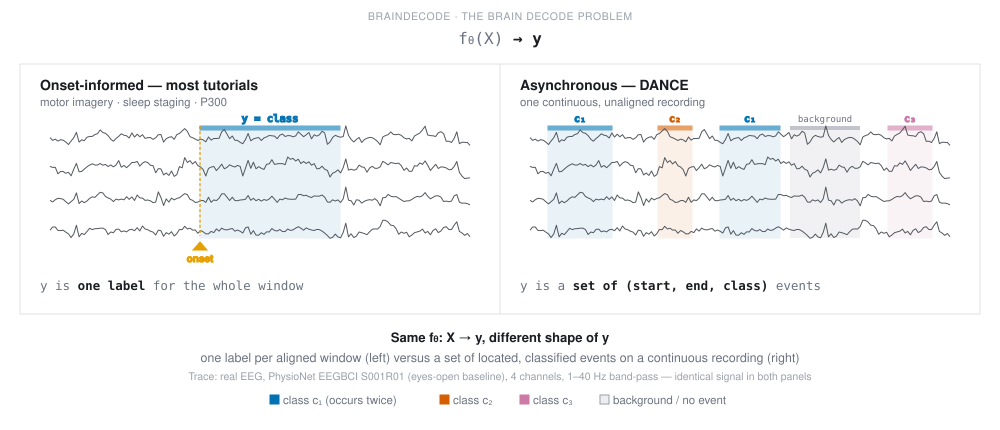

Note
Go to the end to download the full example code.
From window labels to events: asynchronous EEG decoding with DANCE#
braindecode defines brain decoding as \(f_\theta: X \to y\) (see the brain decode problem), and is explicit that the definition of \(y\) is broad. Most tutorials in this repository instantiate that mapping at a single point in the space it allows: \(X\) is a window already cut and aligned to a known onset (a motor-imagery cue, a sleep-epoch boundary, a P300 flash), and \(y\) is one categorical label for the whole window.
DANCE instantiates the same \(f_\theta: X \to y\) at a different point:
\(X\) is one long, unaligned recording, and \(y\) is the set of
(start, end, class) events \(f_\theta\) must locate and classify
itself. The definition did not change. Only the shape of \(y\) did.

This tutorial shows how to use the DANCE model
for event detection on continuous, real EEG recordings, with plain PyTorch (no
skorch, no Lightning). We reproduce, at reduced scale, the P300 setting from
the original paper [1], using the Brain Invaders BI2014a dataset [2] loaded
through MOABBDataset.
The pipeline is:
load a few subjects of continuous, real P300 EEG (BI2014a) with
MOABBDataset,preprocess with the exact minimal recipe from the paper: band-pass 0.1-100 Hz, resample to 128 Hz, per-channel robust scaling clamped to
[-16, 16],cut it into fixed-length windows with
create_fixed_length_windows()(W = 32s, matching the paper’s BI2014a configuration),turn each window’s stimulus annotations (
Target/NonTargetflashes) into a DANCE target dict (normalizedstart/endin[0, 1]plus a dense per-token class map),train
DANCEwithDanceLosson a cross-subject split (train on some subjects, evaluate on held-out ones, following the paper’s protocol), andevaluate with the event-level
f1_event()metric and a per-token macro F1 on the dense head (sklearn.metrics.f1_score()).
DANCE exposes two entry points: model.forward(x) returns the dense
per-token logits (B, num_latents, n_outputs), while model.detect(x)
returns the event set {class, start, end, dense}. Training and evaluation
below use detect (the loss needs the query set); a downstream user who only
wants a per-token prediction can call forward directly.
Note
DANCE follows a DETR-style class-0 = background / no-object convention:
real event classes are 1 .. n_outputs - 1 and class 0 is reserved
for “no event”. Here class 1 is a non-target flash and class 2 a
target flash; the target builder and both F1 metrics honour this
convention automatically.
Note
To keep the docs build fast, this tutorial uses only 3 subjects and 2 training epochs, far short of the paper’s full protocol (all subjects, 100 epochs with early stopping). Expect low F1 scores below; see the Conclusion for what changes at full scale.
# Authors: Bruno Aristimunha <b.aristimunha@gmail.com>
#
# License: MIT
random_state = 0
Loading and preprocessing the dataset#
Loading the raw recordings#
BI2014a is a Brain Invaders P300 (oddball) dataset: subjects watch a stream of flashes, most of which are “non-target” and a few “target”. We load 3 subjects: 2 for training, 1 held out for evaluation, following the paper’s cross-subject splitting protocol.
from braindecode.datasets import MOABBDataset
subject_ids = [1, 2, 3]
dataset = MOABBDataset(dataset_name="BI2014a", subject_ids=subject_ids)
This is nemar-py 0.3.3.
Preparing to download nm000244 from https://data.nemar.org/
Retrieving 5 of 779 manifest files (16 concurrent downloads).
Overall: 0%| | 0.00/26.2k [00:00<?, ?B/s]
Overall: 4%|▍ | 1.15k/26.2k [00:00<00:07, 3.42kB/s]
Overall: 38%|███▊ | 9.85k/26.2k [00:00<00:00, 25.3kB/s]
Overall: 50%|█████ | 13.2k/26.2k [00:01<00:01, 9.39kB/s]
Finished downloading nm000244 v1.0.4.
This is nemar-py 0.3.3.
Preparing to download nm000244 from https://data.nemar.org/
Retrying after failure when retrieving NEMAR metadata for nm000244 (5 retries remain).
Retrying after failure when retrieving NEMAR metadata for nm000244 (4 retries remain).
Retrieving 5 of 779 manifest files (16 concurrent downloads).
S3: 0%| | 0.00/36.7M [00:00<?, ?B/s]
S3: 3%|▎ | 1.00M/36.7M [00:00<00:30, 1.24MB/s]
S3: 5%|▌ | 2.00M/36.7M [00:01<00:15, 2.33MB/s]
S3: 8%|▊ | 3.00M/36.7M [00:01<00:10, 3.52MB/s]
S3: 16%|█▋ | 6.00M/36.7M [00:01<00:03, 8.28MB/s]
S3: 27%|██▋ | 10.0M/36.7M [00:01<00:01, 14.5MB/s]
S3: 44%|████▎ | 16.0M/36.7M [00:01<00:00, 24.1MB/s]
S3: 65%|██████▌ | 24.0M/36.7M [00:01<00:00, 35.9MB/s]
S3: 87%|████████▋ | 32.0M/36.7M [00:01<00:00, 44.8MB/s]
S3: 100%|██████████| 36.7M/36.7M [00:01<00:00, 21.2MB/s]
Finished downloading nm000244 v1.0.4.
This is nemar-py 0.3.3.
Preparing to download nm000244 from https://data.nemar.org/
Retrying after failure when retrieving NEMAR manifest for nm000244 v1.0.4 (5 retries remain).
Retrieving 5 of 779 manifest files (16 concurrent downloads).
S3: 0%| | 0.00/17.9M [00:00<?, ?B/s]
S3: 6%|▌ | 1.00M/17.9M [00:00<00:12, 1.42MB/s]
S3: 11%|█ | 2.00M/17.9M [00:00<00:06, 2.72MB/s]
S3: 22%|██▏ | 4.00M/17.9M [00:00<00:02, 5.81MB/s]
S3: 34%|███▎ | 6.00M/17.9M [00:01<00:01, 8.57MB/s]
S3: 61%|██████▏ | 11.0M/17.9M [00:01<00:00, 17.4MB/s]
S3: 100%|██████████| 17.9M/17.9M [00:01<00:00, 28.5MB/s]
S3: 100%|██████████| 17.9M/17.9M [00:01<00:00, 13.9MB/s]
Finished downloading nm000244 v1.0.4.
This is nemar-py 0.3.3.
Preparing to download nm000244 from https://data.nemar.org/
Retrieving 5 of 779 manifest files (16 concurrent downloads).
S3: 0%| | 0.00/55.2M [00:00<?, ?B/s]
S3: 2%|▏ | 1.00M/55.2M [00:00<00:39, 1.42MB/s]
S3: 4%|▎ | 2.00M/55.2M [00:00<00:19, 2.81MB/s]
S3: 7%|▋ | 4.00M/55.2M [00:00<00:09, 5.94MB/s]
S3: 13%|█▎ | 7.00M/55.2M [00:01<00:04, 10.7MB/s]
S3: 22%|██▏ | 12.0M/55.2M [00:01<00:02, 19.6MB/s]
S3: 34%|███▍ | 19.0M/55.2M [00:01<00:01, 29.8MB/s]
S3: 49%|████▉ | 27.0M/55.2M [00:01<00:00, 40.3MB/s]
S3: 62%|██████▏ | 34.0M/55.2M [00:01<00:00, 41.9MB/s]
S3: 76%|███████▌ | 42.0M/55.2M [00:01<00:00, 48.9MB/s]
S3: 89%|████████▉ | 49.0M/55.2M [00:01<00:00, 52.1MB/s]
S3: 100%|██████████| 55.2M/55.2M [00:01<00:00, 29.9MB/s]
Finished downloading nm000244 v1.0.4.
/opt/hostedtoolcache/Python/3.12.15/x64/lib/python3.12/site-packages/urllib3/connectionpool.py:2521: InsecureRequestWarning: Unverified HTTPS request is being made to host 'zenodo.org'. Adding certificate verification is strongly advised. See: https://urllib3future.readthedocs.io/en/latest/advanced-usage.html#tls-warnings
warnings.warn(
/opt/hostedtoolcache/Python/3.12.15/x64/lib/python3.12/site-packages/urllib3/connectionpool.py:2521: InsecureRequestWarning: Unverified HTTPS request is being made to host 'zenodo.org'. Adding certificate verification is strongly advised. See: https://urllib3future.readthedocs.io/en/latest/advanced-usage.html#tls-warnings
warnings.warn(
0%| | 0.00/60.6M [00:00<?, ?B/s]
0%| | 41.0k/60.6M [00:00<04:02, 249kB/s]
0%| | 90.1k/60.6M [00:00<04:00, 252kB/s]
0%| | 152k/60.6M [00:00<03:23, 297kB/s]
0%|▏ | 213k/60.6M [00:00<03:23, 296kB/s]
0%|▏ | 246k/60.6M [00:00<03:56, 255kB/s]
1%|▏ | 311k/60.6M [00:01<03:51, 260kB/s]
1%|▏ | 338k/60.6M [00:01<06:40, 150kB/s]
1%|▎ | 393k/60.6M [00:01<05:25, 185kB/s]
1%|▎ | 459k/60.6M [00:02<04:24, 228kB/s]
1%|▎ | 524k/60.6M [00:02<03:48, 263kB/s]
1%|▍ | 590k/60.6M [00:02<03:28, 288kB/s]
1%|▍ | 655k/60.6M [00:02<03:13, 309kB/s]
1%|▍ | 721k/60.6M [00:02<03:03, 326kB/s]
1%|▌ | 819k/60.6M [00:02<02:34, 388kB/s]
1%|▌ | 886k/60.6M [00:03<02:34, 386kB/s]
2%|▌ | 952k/60.6M [00:03<02:45, 361kB/s]
2%|▋ | 990k/60.6M [00:03<02:57, 336kB/s]
2%|▋ | 1.02M/60.6M [00:03<03:38, 272kB/s]
2%|▋ | 1.05M/60.6M [00:03<03:49, 259kB/s]
2%|▋ | 1.10M/60.6M [00:03<03:15, 305kB/s]
2%|▋ | 1.14M/60.6M [00:04<03:20, 297kB/s]
2%|▊ | 1.20M/60.6M [00:04<03:08, 315kB/s]
2%|▊ | 1.26M/60.6M [00:04<03:01, 326kB/s]
2%|▊ | 1.30M/60.6M [00:04<03:19, 297kB/s]
2%|▊ | 1.33M/60.6M [00:04<03:56, 251kB/s]
2%|▊ | 1.35M/60.6M [00:04<04:04, 242kB/s]
2%|▊ | 1.38M/60.6M [00:04<04:04, 242kB/s]
2%|▉ | 1.41M/60.6M [00:05<05:31, 179kB/s]
2%|▉ | 1.47M/60.6M [00:05<07:46, 127kB/s]
3%|▉ | 1.54M/60.6M [00:06<05:47, 170kB/s]
3%|▉ | 1.57M/60.6M [00:06<05:27, 180kB/s]
3%|█ | 1.64M/60.6M [00:06<04:29, 219kB/s]
3%|█ | 1.67M/60.6M [00:06<04:56, 198kB/s]
3%|█ | 1.70M/60.6M [00:06<05:25, 181kB/s]
3%|█ | 1.77M/60.6M [00:07<04:49, 203kB/s]
3%|█▏ | 1.80M/60.6M [00:07<07:21, 133kB/s]
3%|█▏ | 1.83M/60.6M [00:07<07:10, 137kB/s]
3%|█▏ | 1.90M/60.6M [00:08<05:29, 178kB/s]
3%|█▏ | 1.96M/60.6M [00:08<04:36, 212kB/s]
3%|█▎ | 2.03M/60.6M [00:08<04:14, 230kB/s]
3%|█▎ | 2.09M/60.6M [00:08<03:47, 257kB/s]
4%|█▎ | 2.16M/60.6M [00:08<03:23, 286kB/s]
4%|█▍ | 2.23M/60.6M [00:09<03:13, 302kB/s]
4%|█▍ | 2.31M/60.6M [00:09<02:49, 344kB/s]
4%|█▍ | 2.37M/60.6M [00:09<03:06, 312kB/s]
4%|█▌ | 2.41M/60.6M [00:09<03:20, 290kB/s]
4%|█▌ | 2.47M/60.6M [00:09<03:04, 314kB/s]
4%|█▌ | 2.51M/60.6M [00:10<03:06, 312kB/s]
4%|█▌ | 2.54M/60.6M [00:10<03:10, 305kB/s]
4%|█▋ | 2.60M/60.6M [00:10<02:53, 333kB/s]
4%|█▋ | 2.67M/60.6M [00:10<03:36, 267kB/s]
5%|█▋ | 2.74M/60.6M [00:10<03:13, 300kB/s]
5%|█▊ | 2.80M/60.6M [00:10<02:57, 325kB/s]
5%|█▊ | 2.90M/60.6M [00:11<02:25, 395kB/s]
5%|█▉ | 3.00M/60.6M [00:11<02:15, 426kB/s]
5%|█▉ | 3.06M/60.6M [00:11<02:19, 412kB/s]
5%|█▉ | 3.13M/60.6M [00:11<02:25, 394kB/s]
5%|██ | 3.26M/60.6M [00:11<01:56, 491kB/s]
5%|██ | 3.33M/60.6M [00:12<02:05, 458kB/s]
6%|██▏ | 3.44M/60.6M [00:12<02:13, 427kB/s]
6%|██▏ | 3.51M/60.6M [00:12<02:28, 384kB/s]
6%|██▏ | 3.58M/60.6M [00:12<02:30, 378kB/s]
6%|██▎ | 3.62M/60.6M [00:12<02:33, 371kB/s]
6%|██▎ | 3.66M/60.6M [00:13<02:37, 360kB/s]
6%|██▎ | 3.69M/60.6M [00:13<03:04, 309kB/s]
6%|██▎ | 3.73M/60.6M [00:13<03:11, 296kB/s]
6%|██▎ | 3.78M/60.6M [00:13<03:13, 293kB/s]
6%|██▍ | 3.81M/60.6M [00:13<03:09, 300kB/s]
6%|██▍ | 3.84M/60.6M [00:13<03:07, 302kB/s]
6%|██▍ | 3.88M/60.6M [00:13<03:17, 287kB/s]
6%|██▍ | 3.91M/60.6M [00:14<04:11, 225kB/s]
7%|██▍ | 3.94M/60.6M [00:14<04:21, 216kB/s]
7%|██▍ | 3.97M/60.6M [00:14<03:57, 238kB/s]
7%|██▌ | 4.01M/60.6M [00:14<03:50, 246kB/s]
7%|██▌ | 4.04M/60.6M [00:14<03:36, 262kB/s]
7%|██▌ | 4.07M/60.6M [00:14<03:55, 239kB/s]
7%|██▌ | 4.14M/60.6M [00:15<04:27, 211kB/s]
7%|██▋ | 4.20M/60.6M [00:15<03:40, 256kB/s]
7%|██▋ | 4.27M/60.6M [00:15<03:12, 292kB/s]
7%|██▋ | 4.33M/60.6M [00:15<02:58, 316kB/s]
7%|██▊ | 4.40M/60.6M [00:15<02:47, 336kB/s]
7%|██▊ | 4.47M/60.6M [00:15<02:43, 344kB/s]
7%|██▊ | 4.53M/60.6M [00:16<02:36, 357kB/s]
8%|██▉ | 4.60M/60.6M [00:16<02:32, 366kB/s]
8%|██▉ | 4.66M/60.6M [00:16<02:35, 360kB/s]
8%|███ | 4.79M/60.6M [00:16<02:20, 398kB/s]
8%|███ | 4.85M/60.6M [00:16<02:19, 400kB/s]
8%|███ | 4.89M/60.6M [00:17<02:21, 394kB/s]
8%|███ | 4.95M/60.6M [00:17<02:26, 379kB/s]
8%|███▏ | 5.02M/60.6M [00:17<02:28, 374kB/s]
8%|███▏ | 5.09M/60.6M [00:17<02:29, 371kB/s]
9%|███▏ | 5.15M/60.6M [00:17<02:31, 367kB/s]
9%|███▎ | 5.19M/60.6M [00:17<02:33, 361kB/s]
9%|███▎ | 5.25M/60.6M [00:18<03:45, 246kB/s]
9%|███▎ | 5.28M/60.6M [00:18<05:44, 160kB/s]
9%|███▎ | 5.35M/60.6M [00:18<04:33, 202kB/s]
9%|███▍ | 5.38M/60.6M [00:19<04:25, 208kB/s]
9%|███▍ | 5.45M/60.6M [00:19<03:54, 235kB/s]
9%|███▍ | 5.51M/60.6M [00:19<03:28, 264kB/s]
9%|███▍ | 5.58M/60.6M [00:19<03:10, 289kB/s]
9%|███▌ | 5.61M/60.6M [00:19<03:20, 274kB/s]
9%|███▌ | 5.68M/60.6M [00:20<03:21, 272kB/s]
9%|███▌ | 5.74M/60.6M [00:20<02:46, 330kB/s]
10%|███▋ | 5.81M/60.6M [00:20<02:20, 391kB/s]
10%|███▊ | 5.99M/60.6M [00:20<01:33, 585kB/s]
10%|███▊ | 6.05M/60.6M [00:20<01:31, 593kB/s]
10%|███▊ | 6.15M/60.6M [00:20<01:24, 647kB/s]
10%|███▉ | 6.25M/60.6M [00:20<01:16, 713kB/s]
10%|███▉ | 6.32M/60.6M [00:21<02:09, 418kB/s]
11%|████ | 6.38M/60.6M [00:21<02:13, 405kB/s]
11%|████ | 6.43M/60.6M [00:21<03:12, 281kB/s]
11%|████ | 6.47M/60.6M [00:21<03:08, 287kB/s]
11%|████ | 6.51M/60.6M [00:22<03:15, 276kB/s]
11%|████ | 6.54M/60.6M [00:22<03:26, 262kB/s]
11%|████ | 6.57M/60.6M [00:22<03:37, 248kB/s]
11%|████▏ | 6.60M/60.6M [00:22<04:32, 198kB/s]
11%|████▏ | 6.62M/60.6M [00:22<06:04, 148kB/s]
11%|████▏ | 6.68M/60.6M [00:23<04:55, 182kB/s]
11%|████▏ | 6.74M/60.6M [00:23<03:38, 247kB/s]
11%|████▎ | 6.77M/60.6M [00:23<03:34, 250kB/s]
11%|████▎ | 6.81M/60.6M [00:23<03:31, 254kB/s]
11%|████▎ | 6.84M/60.6M [00:23<03:35, 249kB/s]
11%|████▎ | 6.87M/60.6M [00:23<03:25, 261kB/s]
11%|████▎ | 6.91M/60.6M [00:23<03:54, 229kB/s]
11%|████▎ | 6.94M/60.6M [00:24<04:46, 187kB/s]
12%|████▍ | 7.00M/60.6M [00:24<03:35, 249kB/s]
12%|████▍ | 7.04M/60.6M [00:24<03:27, 257kB/s]
12%|████▍ | 7.10M/60.6M [00:24<03:24, 262kB/s]
12%|████▍ | 7.17M/60.6M [00:24<03:05, 288kB/s]
12%|████▌ | 7.27M/60.6M [00:24<02:09, 411kB/s]
12%|████▋ | 7.40M/60.6M [00:25<01:49, 486kB/s]
12%|████▋ | 7.53M/60.6M [00:25<01:40, 527kB/s]
13%|████▊ | 7.64M/60.6M [00:25<01:42, 516kB/s]
13%|████▊ | 7.71M/60.6M [00:25<01:41, 518kB/s]
13%|████▉ | 7.81M/60.6M [00:25<01:26, 607kB/s]
13%|████▉ | 7.87M/60.6M [00:25<01:26, 606kB/s]
13%|█████ | 7.97M/60.6M [00:26<01:28, 591kB/s]
14%|█████▏ | 8.28M/60.6M [00:26<01:06, 781kB/s]
14%|█████▏ | 8.36M/60.6M [00:26<01:16, 686kB/s]
14%|█████▎ | 8.48M/60.6M [00:26<01:09, 753kB/s]
14%|█████▍ | 8.62M/60.6M [00:26<01:02, 834kB/s]
14%|█████▍ | 8.71M/60.6M [00:27<01:10, 737kB/s]
15%|█████▌ | 8.88M/60.6M [00:27<01:06, 774kB/s]
15%|█████▋ | 9.03M/60.6M [00:27<01:04, 793kB/s]
15%|█████▋ | 9.16M/60.6M [00:27<01:08, 753kB/s]
15%|█████▊ | 9.23M/60.6M [00:27<01:11, 718kB/s]
15%|█████▊ | 9.31M/60.6M [00:27<01:34, 543kB/s]
15%|█████▉ | 9.36M/60.6M [00:28<01:44, 489kB/s]
16%|█████▉ | 9.42M/60.6M [00:28<02:14, 381kB/s]
16%|█████▉ | 9.46M/60.6M [00:28<02:14, 380kB/s]
16%|█████▉ | 9.50M/60.6M [00:28<03:01, 282kB/s]
16%|█████▉ | 9.56M/60.6M [00:29<03:11, 267kB/s]
16%|██████ | 9.63M/60.6M [00:29<02:46, 305kB/s]
16%|██████ | 9.69M/60.6M [00:29<02:33, 332kB/s]
16%|██████ | 9.73M/60.6M [00:29<02:38, 321kB/s]
16%|██████▏ | 9.76M/60.6M [00:29<02:39, 319kB/s]
16%|██████▏ | 9.80M/60.6M [00:29<03:03, 276kB/s]
16%|██████▏ | 9.83M/60.6M [00:29<03:21, 252kB/s]
16%|██████▏ | 9.89M/60.6M [00:30<02:42, 312kB/s]
16%|██████▎ | 9.99M/60.6M [00:30<02:09, 389kB/s]
17%|██████▎ | 10.1M/60.6M [00:30<02:40, 314kB/s]
17%|██████▎ | 10.1M/60.6M [00:30<03:17, 256kB/s]
17%|██████▎ | 10.2M/60.6M [00:30<02:40, 314kB/s]
17%|██████▍ | 10.2M/60.6M [00:31<02:15, 373kB/s]
17%|██████▍ | 10.3M/60.6M [00:31<01:49, 457kB/s]
17%|██████▌ | 10.4M/60.6M [00:31<01:41, 495kB/s]
17%|██████▌ | 10.4M/60.6M [00:31<01:37, 513kB/s]
17%|██████▌ | 10.5M/60.6M [00:31<02:00, 415kB/s]
17%|██████▌ | 10.5M/60.6M [00:31<02:48, 297kB/s]
18%|██████▋ | 10.6M/60.6M [00:32<02:37, 317kB/s]
18%|██████▋ | 10.6M/60.6M [00:32<02:40, 311kB/s]
18%|██████▋ | 10.7M/60.6M [00:32<02:36, 319kB/s]
18%|██████▋ | 10.7M/60.6M [00:32<04:15, 195kB/s]
18%|██████▊ | 10.8M/60.6M [00:32<03:05, 268kB/s]
18%|██████▊ | 10.9M/60.6M [00:33<02:48, 295kB/s]
18%|██████▊ | 10.9M/60.6M [00:33<02:36, 318kB/s]
18%|██████▉ | 11.1M/60.6M [00:33<01:52, 440kB/s]
18%|██████▉ | 11.1M/60.6M [00:33<01:48, 455kB/s]
18%|███████ | 11.2M/60.6M [00:33<01:47, 459kB/s]
19%|███████ | 11.2M/60.6M [00:33<02:02, 404kB/s]
19%|███████ | 11.3M/60.6M [00:34<02:07, 385kB/s]
19%|███████▏ | 11.4M/60.6M [00:34<02:02, 403kB/s]
19%|███████▏ | 11.4M/60.6M [00:34<02:38, 311kB/s]
19%|███████▏ | 11.5M/60.6M [00:34<02:52, 284kB/s]
19%|███████▏ | 11.5M/60.6M [00:34<03:15, 250kB/s]
19%|███████▎ | 11.6M/60.6M [00:34<02:41, 304kB/s]
19%|███████▎ | 11.6M/60.6M [00:35<04:29, 182kB/s]
19%|███████▎ | 11.6M/60.6M [00:35<04:19, 189kB/s]
19%|███████▎ | 11.7M/60.6M [00:35<03:20, 244kB/s]
19%|███████▍ | 11.8M/60.6M [00:35<02:47, 292kB/s]
20%|███████▍ | 11.8M/60.6M [00:36<03:17, 247kB/s]
20%|███████▍ | 11.8M/60.6M [00:36<04:00, 202kB/s]
20%|███████▍ | 11.9M/60.6M [00:36<03:42, 218kB/s]
20%|███████▍ | 11.9M/60.6M [00:36<03:55, 206kB/s]
20%|███████▍ | 11.9M/60.6M [00:36<03:47, 213kB/s]
20%|███████▌ | 12.0M/60.6M [00:36<03:30, 231kB/s]
20%|███████▌ | 12.0M/60.6M [00:37<04:12, 193kB/s]
20%|███████▌ | 12.1M/60.6M [00:37<03:06, 260kB/s]
20%|███████▌ | 12.1M/60.6M [00:37<02:59, 270kB/s]
20%|███████▋ | 12.2M/60.6M [00:37<03:07, 258kB/s]
20%|███████▋ | 12.2M/60.6M [00:37<03:10, 254kB/s]
20%|███████▋ | 12.2M/60.6M [00:38<04:54, 164kB/s]
20%|███████▋ | 12.3M/60.6M [00:38<05:14, 153kB/s]
20%|███████▋ | 12.3M/60.6M [00:38<05:43, 141kB/s]
20%|███████▋ | 12.3M/60.6M [00:39<06:30, 124kB/s]
20%|███████▊ | 12.4M/60.6M [00:39<05:40, 141kB/s]
21%|███████▊ | 12.4M/60.6M [00:39<03:46, 213kB/s]
21%|███████▊ | 12.5M/60.6M [00:39<03:11, 252kB/s]
21%|███████▊ | 12.5M/60.6M [00:39<03:09, 254kB/s]
21%|███████▉ | 12.6M/60.6M [00:39<03:13, 248kB/s]
21%|███████▋ | 12.6M/60.6M [00:41<14:36, 54.7kB/s]
21%|███████▋ | 12.6M/60.6M [00:41<13:02, 61.3kB/s]
21%|███████▋ | 12.7M/60.6M [00:42<08:29, 93.9kB/s]
21%|████████ | 12.8M/60.6M [00:42<04:42, 169kB/s]
21%|████████ | 12.8M/60.6M [00:42<04:14, 188kB/s]
21%|████████ | 12.9M/60.6M [00:42<03:34, 223kB/s]
21%|████████ | 12.9M/60.6M [00:42<03:07, 254kB/s]
21%|████████▏ | 13.0M/60.6M [00:42<02:54, 272kB/s]
22%|████████▏ | 13.0M/60.6M [00:43<03:47, 209kB/s]
22%|████████▏ | 13.1M/60.6M [00:43<03:39, 217kB/s]
22%|████████▏ | 13.1M/60.6M [00:43<03:24, 233kB/s]
22%|████████▎ | 13.2M/60.6M [00:43<02:43, 289kB/s]
22%|████████▎ | 13.2M/60.6M [00:43<02:32, 310kB/s]
22%|████████▎ | 13.3M/60.6M [00:43<02:29, 316kB/s]
22%|████████▎ | 13.3M/60.6M [00:44<02:26, 322kB/s]
22%|████████▍ | 13.4M/60.6M [00:44<03:05, 254kB/s]
22%|████████▍ | 13.4M/60.6M [00:44<03:19, 236kB/s]
22%|████████▍ | 13.5M/60.6M [00:44<04:17, 183kB/s]
22%|████████▍ | 13.5M/60.6M [00:45<04:53, 160kB/s]
22%|████████▍ | 13.5M/60.6M [00:45<04:42, 167kB/s]
22%|████████▌ | 13.6M/60.6M [00:45<03:24, 230kB/s]
23%|████████▌ | 13.6M/60.6M [00:45<03:20, 235kB/s]
23%|████████▌ | 13.7M/60.6M [00:45<03:06, 251kB/s]
23%|████████▌ | 13.7M/60.6M [00:45<03:10, 246kB/s]
23%|████████▋ | 13.8M/60.6M [00:46<02:27, 318kB/s]
23%|████████▋ | 13.8M/60.6M [00:46<02:17, 339kB/s]
23%|████████▋ | 13.9M/60.6M [00:46<01:53, 411kB/s]
23%|████████▊ | 14.0M/60.6M [00:46<01:49, 425kB/s]
23%|████████▊ | 14.1M/60.6M [00:46<02:08, 362kB/s]
23%|████████▉ | 14.2M/60.6M [00:47<02:07, 362kB/s]
24%|████████▉ | 14.3M/60.6M [00:47<03:28, 222kB/s]
24%|████████▉ | 14.3M/60.6M [00:47<03:04, 250kB/s]
24%|█████████ | 14.4M/60.6M [00:48<02:37, 293kB/s]
24%|█████████ | 14.5M/60.6M [00:48<02:19, 330kB/s]
24%|█████████ | 14.5M/60.6M [00:48<01:52, 408kB/s]
24%|█████████▏ | 14.6M/60.6M [00:48<02:06, 363kB/s]
24%|█████████▏ | 14.7M/60.6M [00:48<02:06, 363kB/s]
24%|█████████▎ | 14.7M/60.6M [00:48<01:56, 392kB/s]
25%|█████████▎ | 14.8M/60.6M [00:49<01:51, 409kB/s]
25%|█████████▎ | 14.9M/60.6M [00:49<02:09, 354kB/s]
25%|█████████▍ | 15.0M/60.6M [00:49<02:32, 298kB/s]
25%|█████████▍ | 15.0M/60.6M [00:49<02:13, 341kB/s]
25%|█████████▍ | 15.1M/60.6M [00:50<02:12, 343kB/s]
25%|█████████▌ | 15.2M/60.6M [00:50<02:12, 342kB/s]
25%|█████████▌ | 15.2M/60.6M [00:50<02:32, 297kB/s]
25%|█████████▌ | 15.2M/60.6M [00:50<03:00, 252kB/s]
25%|█████████▌ | 15.3M/60.6M [00:50<03:04, 245kB/s]
25%|█████████▌ | 15.3M/60.6M [00:51<03:50, 196kB/s]
25%|█████████▎ | 15.3M/60.6M [00:51<08:16, 91.1kB/s]
25%|█████████▋ | 15.4M/60.6M [00:52<06:50, 110kB/s]
25%|█████████▋ | 15.4M/60.6M [00:52<05:19, 142kB/s]
26%|█████████▋ | 15.4M/60.6M [00:52<04:37, 162kB/s]
26%|█████████▋ | 15.5M/60.6M [00:52<04:14, 177kB/s]
26%|█████████▊ | 15.6M/60.6M [00:52<03:19, 226kB/s]
26%|█████████▊ | 15.6M/60.6M [00:52<02:40, 280kB/s]
26%|█████████▊ | 15.7M/60.6M [00:53<02:53, 258kB/s]
26%|█████████▉ | 15.8M/60.6M [00:53<02:41, 278kB/s]
26%|█████████▉ | 15.8M/60.6M [00:53<03:19, 224kB/s]
26%|█████████▉ | 15.8M/60.6M [00:54<04:44, 157kB/s]
26%|█████████▉ | 15.9M/60.6M [00:54<03:24, 218kB/s]
26%|██████████ | 15.9M/60.6M [00:54<03:19, 223kB/s]
26%|██████████ | 16.0M/60.6M [00:54<02:42, 273kB/s]
26%|██████████ | 16.0M/60.6M [00:54<02:37, 283kB/s]
27%|██████████ | 16.1M/60.6M [00:54<02:22, 312kB/s]
27%|██████████▏ | 16.1M/60.6M [00:54<02:19, 319kB/s]
27%|██████████▏ | 16.2M/60.6M [00:55<02:22, 311kB/s]
27%|██████████▏ | 16.2M/60.6M [00:55<02:05, 352kB/s]
27%|██████████▏ | 16.3M/60.6M [00:55<01:50, 401kB/s]
27%|██████████▎ | 16.4M/60.6M [00:55<01:41, 436kB/s]
27%|██████████▎ | 16.4M/60.6M [00:55<01:47, 410kB/s]
27%|██████████▎ | 16.5M/60.6M [00:55<01:49, 403kB/s]
27%|██████████▎ | 16.5M/60.6M [00:55<02:22, 308kB/s]
27%|██████████▍ | 16.6M/60.6M [00:56<01:28, 497kB/s]
28%|██████████▌ | 16.8M/60.6M [00:56<01:10, 623kB/s]
28%|██████████▌ | 16.8M/60.6M [00:56<01:13, 594kB/s]
28%|██████████▌ | 16.9M/60.6M [00:56<01:23, 525kB/s]
28%|██████████▋ | 17.0M/60.6M [00:56<01:31, 479kB/s]
28%|██████████▋ | 17.0M/60.6M [00:56<01:30, 482kB/s]
28%|██████████▋ | 17.1M/60.6M [00:56<01:41, 428kB/s]
28%|██████████▊ | 17.2M/60.6M [00:57<01:32, 467kB/s]
28%|██████████▊ | 17.2M/60.6M [00:57<01:40, 431kB/s]
28%|██████████▊ | 17.3M/60.6M [00:57<01:53, 383kB/s]
29%|██████████▊ | 17.3M/60.6M [00:57<01:53, 381kB/s]
29%|██████████▉ | 17.4M/60.6M [00:57<01:54, 378kB/s]
29%|██████████▉ | 17.4M/60.6M [00:57<01:43, 419kB/s]
29%|██████████▉ | 17.5M/60.6M [00:57<01:35, 450kB/s]
29%|███████████ | 17.5M/60.6M [00:58<01:46, 402kB/s]
29%|███████████ | 17.6M/60.6M [00:58<02:05, 341kB/s]
29%|███████████ | 17.6M/60.6M [00:58<02:56, 243kB/s]
29%|███████████ | 17.7M/60.6M [00:58<03:28, 206kB/s]
29%|███████████ | 17.7M/60.6M [00:58<03:14, 220kB/s]
29%|███████████▏ | 17.8M/60.6M [00:59<02:26, 293kB/s]
29%|███████████▏ | 17.8M/60.6M [00:59<02:27, 290kB/s]
29%|███████████▏ | 17.8M/60.6M [00:59<02:29, 286kB/s]
29%|███████████▏ | 17.9M/60.6M [00:59<02:38, 270kB/s]
30%|███████████▏ | 17.9M/60.6M [00:59<02:37, 270kB/s]
30%|███████████▏ | 17.9M/60.6M [00:59<02:57, 240kB/s]
30%|███████████▎ | 18.0M/60.6M [00:59<03:03, 233kB/s]
30%|███████████▎ | 18.0M/60.6M [01:00<03:12, 221kB/s]
30%|███████████▎ | 18.0M/60.6M [01:00<03:30, 202kB/s]
30%|███████████▎ | 18.1M/60.6M [01:00<02:44, 258kB/s]
30%|███████████▎ | 18.1M/60.6M [01:00<02:37, 270kB/s]
30%|███████████▍ | 18.2M/60.6M [01:00<02:35, 272kB/s]
30%|███████████▍ | 18.2M/60.6M [01:01<04:02, 175kB/s]
30%|███████████▍ | 18.3M/60.6M [01:01<03:02, 231kB/s]
30%|███████████▍ | 18.3M/60.6M [01:01<02:29, 283kB/s]
30%|███████████▌ | 18.4M/60.6M [01:01<02:27, 286kB/s]
30%|███████████▌ | 18.4M/60.6M [01:01<02:03, 342kB/s]
31%|███████████▋ | 18.5M/60.6M [01:02<02:21, 297kB/s]
31%|███████████▋ | 18.6M/60.6M [01:02<02:49, 247kB/s]
31%|███████████▋ | 18.6M/60.6M [01:02<02:47, 250kB/s]
31%|███████████▋ | 18.7M/60.6M [01:02<02:56, 237kB/s]
31%|███████████▋ | 18.7M/60.6M [01:02<02:59, 234kB/s]
31%|███████████▊ | 18.7M/60.6M [01:02<03:02, 229kB/s]
31%|███████████▊ | 18.8M/60.6M [01:03<02:24, 290kB/s]
31%|███████████▊ | 18.9M/60.6M [01:03<01:58, 351kB/s]
31%|███████████▊ | 18.9M/60.6M [01:03<02:04, 335kB/s]
31%|███████████▉ | 18.9M/60.6M [01:03<02:20, 295kB/s]
31%|███████████▉ | 19.0M/60.6M [01:03<03:19, 209kB/s]
31%|███████████▉ | 19.0M/60.6M [01:04<03:30, 197kB/s]
31%|███████████▉ | 19.1M/60.6M [01:04<03:10, 218kB/s]
32%|███████████▉ | 19.1M/60.6M [01:04<02:47, 248kB/s]
32%|████████████ | 19.2M/60.6M [01:04<02:47, 248kB/s]
32%|████████████ | 19.2M/60.6M [01:04<02:12, 313kB/s]
32%|████████████ | 19.3M/60.6M [01:04<02:48, 245kB/s]
32%|████████████ | 19.3M/60.6M [01:05<03:29, 197kB/s]
32%|████████████ | 19.3M/60.6M [01:05<03:30, 196kB/s]
32%|████████████▏ | 19.4M/60.6M [01:05<02:54, 236kB/s]
32%|████████████▏ | 19.4M/60.6M [01:05<04:01, 171kB/s]
32%|████████████▏ | 19.4M/60.6M [01:06<03:59, 172kB/s]
32%|████████████▏ | 19.5M/60.6M [01:06<03:58, 172kB/s]
32%|████████████▏ | 19.5M/60.6M [01:06<03:45, 182kB/s]
32%|████████████▎ | 19.5M/60.6M [01:06<03:38, 188kB/s]
32%|████████████▎ | 19.6M/60.6M [01:06<03:29, 195kB/s]
32%|████████████▎ | 19.6M/60.6M [01:06<02:39, 257kB/s]
32%|████████████▎ | 19.7M/60.6M [01:07<03:17, 207kB/s]
33%|████████████▎ | 19.7M/60.6M [01:07<04:18, 158kB/s]
33%|████████████ | 19.7M/60.6M [01:07<06:57, 97.8kB/s]
33%|████████████▍ | 19.7M/60.6M [01:08<06:38, 103kB/s]
33%|████████████▍ | 19.8M/60.6M [01:08<04:31, 150kB/s]
33%|████████████▍ | 19.8M/60.6M [01:08<04:38, 146kB/s]
33%|████████████▍ | 19.8M/60.6M [01:08<04:21, 156kB/s]
33%|████████████▍ | 19.9M/60.6M [01:08<02:47, 243kB/s]
33%|████████████▌ | 19.9M/60.6M [01:08<02:37, 258kB/s]
33%|████████████▌ | 20.0M/60.6M [01:09<02:20, 289kB/s]
33%|████████████▌ | 20.0M/60.6M [01:09<02:38, 256kB/s]
33%|████████████▌ | 20.1M/60.6M [01:09<03:18, 204kB/s]
33%|████████████▌ | 20.1M/60.6M [01:09<03:03, 221kB/s]
33%|████████████▋ | 20.1M/60.6M [01:09<02:51, 236kB/s]
33%|████████████▋ | 20.2M/60.6M [01:09<02:44, 246kB/s]
33%|████████████▋ | 20.2M/60.6M [01:10<03:04, 219kB/s]
34%|████████████▋ | 20.3M/60.6M [01:10<02:34, 261kB/s]
34%|████████████▊ | 20.4M/60.6M [01:10<02:06, 319kB/s]
34%|████████████▉ | 20.5M/60.6M [01:10<01:32, 432kB/s]
34%|████████████▉ | 20.6M/60.6M [01:11<01:33, 425kB/s]
34%|█████████████ | 20.7M/60.6M [01:11<01:31, 435kB/s]
34%|█████████████ | 20.8M/60.6M [01:11<01:29, 442kB/s]
34%|█████████████ | 20.9M/60.6M [01:11<01:23, 475kB/s]
35%|█████████████▏ | 21.0M/60.6M [01:11<01:34, 421kB/s]
35%|█████████████▏ | 21.1M/60.6M [01:11<01:25, 462kB/s]
36%|█████████████▏ | 21.5M/60.6M [01:12<00:35, 1.10MB/s]
36%|█████████████▏ | 21.6M/60.6M [01:12<00:36, 1.06MB/s]
36%|█████████████▋ | 21.8M/60.6M [01:12<00:39, 994kB/s]
36%|█████████████▋ | 21.9M/60.6M [01:12<00:47, 820kB/s]
36%|█████████████▊ | 22.0M/60.6M [01:12<00:51, 746kB/s]
36%|█████████████▊ | 22.1M/60.6M [01:12<00:58, 659kB/s]
37%|█████████████▉ | 22.1M/60.6M [01:13<01:28, 432kB/s]
37%|█████████████▉ | 22.2M/60.6M [01:13<01:50, 346kB/s]
37%|█████████████▉ | 22.2M/60.6M [01:13<01:59, 320kB/s]
37%|█████████████▉ | 22.3M/60.6M [01:13<01:38, 387kB/s]
37%|██████████████ | 22.4M/60.6M [01:14<02:17, 277kB/s]
37%|██████████████ | 22.4M/60.6M [01:15<03:56, 161kB/s]
37%|██████████████ | 22.5M/60.6M [01:15<03:13, 197kB/s]
37%|██████████████ | 22.5M/60.6M [01:15<03:51, 164kB/s]
37%|██████████████▏ | 22.5M/60.6M [01:15<03:35, 176kB/s]
37%|██████████████▏ | 22.6M/60.6M [01:15<02:46, 228kB/s]
37%|██████████████▏ | 22.6M/60.6M [01:15<02:47, 226kB/s]
37%|██████████████▏ | 22.7M/60.6M [01:16<02:44, 230kB/s]
38%|██████████████▎ | 22.7M/60.6M [01:16<02:13, 283kB/s]
38%|██████████████▎ | 22.8M/60.6M [01:16<01:59, 317kB/s]
38%|██████████████▎ | 22.9M/60.6M [01:16<01:40, 374kB/s]
38%|██████████████▍ | 22.9M/60.6M [01:16<01:39, 379kB/s]
38%|██████████████▍ | 23.0M/60.6M [01:16<01:43, 363kB/s]
38%|██████████████▍ | 23.1M/60.6M [01:17<01:29, 420kB/s]
38%|██████████████▌ | 23.2M/60.6M [01:17<01:28, 421kB/s]
38%|██████████████▌ | 23.2M/60.6M [01:17<02:03, 303kB/s]
38%|██████████████▌ | 23.2M/60.6M [01:17<02:14, 277kB/s]
38%|██████████████▌ | 23.3M/60.6M [01:17<02:09, 287kB/s]
39%|██████████████▋ | 23.4M/60.6M [01:18<01:58, 314kB/s]
39%|██████████████▋ | 23.4M/60.6M [01:18<01:41, 367kB/s]
39%|██████████████▋ | 23.5M/60.6M [01:18<01:44, 353kB/s]
39%|██████████████▊ | 23.5M/60.6M [01:18<01:49, 337kB/s]
39%|██████████████▊ | 23.6M/60.6M [01:18<01:59, 309kB/s]
39%|██████████████▊ | 23.6M/60.6M [01:18<01:44, 354kB/s]
39%|██████████████▉ | 23.7M/60.6M [01:19<01:30, 405kB/s]
39%|██████████████▉ | 23.8M/60.6M [01:19<01:24, 432kB/s]
39%|██████████████▉ | 23.9M/60.6M [01:19<01:40, 365kB/s]
39%|███████████████ | 23.9M/60.6M [01:19<02:12, 276kB/s]
40%|███████████████ | 24.0M/60.6M [01:19<01:57, 311kB/s]
40%|███████████████ | 24.0M/60.6M [01:19<01:56, 314kB/s]
40%|███████████████ | 24.1M/60.6M [01:20<01:48, 335kB/s]
40%|███████████████▏ | 24.1M/60.6M [01:20<01:44, 348kB/s]
40%|███████████████▏ | 24.3M/60.6M [01:20<01:22, 443kB/s]
40%|███████████████▎ | 24.3M/60.6M [01:20<01:23, 432kB/s]
40%|███████████████▎ | 24.4M/60.6M [01:20<01:29, 407kB/s]
40%|███████████████▎ | 24.4M/60.6M [01:20<01:33, 388kB/s]
40%|███████████████▎ | 24.5M/60.6M [01:21<03:15, 184kB/s]
40%|███████████████▎ | 24.5M/60.6M [01:21<03:06, 194kB/s]
40%|███████████████▍ | 24.5M/60.6M [01:21<03:01, 198kB/s]
41%|███████████████▍ | 24.5M/60.6M [01:22<04:16, 140kB/s]
41%|███████████████▍ | 24.6M/60.6M [01:22<05:07, 117kB/s]
41%|███████████████▍ | 24.6M/60.6M [01:22<03:09, 189kB/s]
41%|███████████████▌ | 24.7M/60.6M [01:22<02:35, 231kB/s]
41%|███████████████▌ | 24.8M/60.6M [01:22<02:12, 270kB/s]
41%|███████████████▌ | 24.8M/60.6M [01:23<04:53, 122kB/s]
41%|███████████████▌ | 24.8M/60.6M [01:23<04:42, 126kB/s]
41%|███████████████▌ | 24.9M/60.6M [01:24<03:32, 167kB/s]
41%|███████████████▋ | 25.0M/60.6M [01:24<02:26, 243kB/s]
42%|███████████████▊ | 25.2M/60.6M [01:24<01:34, 373kB/s]
42%|███████████████▊ | 25.3M/60.6M [01:24<01:28, 397kB/s]
42%|███████████████▊ | 25.3M/60.6M [01:24<01:35, 371kB/s]
42%|███████████████▉ | 25.4M/60.6M [01:25<01:33, 378kB/s]
42%|███████████████▉ | 25.4M/60.6M [01:25<01:35, 367kB/s]
42%|███████████████▉ | 25.5M/60.6M [01:25<02:15, 259kB/s]
42%|███████████████▉ | 25.5M/60.6M [01:25<02:35, 226kB/s]
42%|████████████████ | 25.5M/60.6M [01:26<03:00, 194kB/s]
42%|████████████████ | 25.6M/60.6M [01:26<02:09, 271kB/s]
42%|████████████████▏ | 25.7M/60.6M [01:26<01:44, 332kB/s]
43%|████████████████▏ | 25.8M/60.6M [01:26<01:31, 378kB/s]
43%|████████████████▏ | 25.9M/60.6M [01:26<01:16, 450kB/s]
43%|████████████████▎ | 26.0M/60.6M [01:26<01:22, 417kB/s]
43%|████████████████▎ | 26.0M/60.6M [01:27<01:26, 399kB/s]
43%|████████████████▎ | 26.0M/60.6M [01:27<01:44, 329kB/s]
43%|████████████████▎ | 26.1M/60.6M [01:27<02:22, 242kB/s]
43%|████████████████▍ | 26.1M/60.6M [01:27<02:12, 260kB/s]
43%|████████████████▍ | 26.2M/60.6M [01:27<02:34, 223kB/s]
43%|████████████████▍ | 26.2M/60.6M [01:28<03:24, 168kB/s]
43%|████████████████▍ | 26.3M/60.6M [01:28<02:38, 217kB/s]
44%|████████████████▌ | 26.4M/60.6M [01:28<02:02, 280kB/s]
44%|████████████████▌ | 26.5M/60.6M [01:28<01:44, 325kB/s]
44%|████████████████▋ | 26.6M/60.6M [01:29<01:40, 338kB/s]
44%|████████████████▋ | 26.7M/60.6M [01:29<01:29, 379kB/s]
44%|████████████████▊ | 26.8M/60.6M [01:29<01:31, 369kB/s]
44%|████████████████▊ | 26.8M/60.6M [01:29<01:38, 342kB/s]
44%|████████████████▊ | 26.9M/60.6M [01:29<01:28, 381kB/s]
44%|████████████████▊ | 26.9M/60.6M [01:30<01:59, 281kB/s]
44%|████████████████▉ | 26.9M/60.6M [01:30<01:58, 285kB/s]
45%|████████████████▉ | 27.0M/60.6M [01:30<02:00, 280kB/s]
45%|████████████████▉ | 27.0M/60.6M [01:30<01:39, 336kB/s]
45%|████████████████▉ | 27.1M/60.6M [01:30<01:59, 281kB/s]
45%|████████████████▉ | 27.1M/60.6M [01:31<02:34, 217kB/s]
45%|█████████████████ | 27.1M/60.6M [01:31<02:44, 204kB/s]
45%|█████████████████ | 27.2M/60.6M [01:31<02:08, 261kB/s]
45%|█████████████████ | 27.2M/60.6M [01:31<01:53, 293kB/s]
45%|█████████████████ | 27.3M/60.6M [01:31<01:54, 292kB/s]
45%|█████████████████▏ | 27.4M/60.6M [01:31<01:36, 343kB/s]
45%|█████████████████▏ | 27.4M/60.6M [01:32<01:25, 385kB/s]
45%|█████████████████▏ | 27.5M/60.6M [01:32<01:27, 377kB/s]
45%|█████████████████▎ | 27.5M/60.6M [01:32<01:43, 319kB/s]
46%|█████████████████▎ | 27.6M/60.6M [01:32<01:29, 367kB/s]
46%|█████████████████▎ | 27.7M/60.6M [01:32<01:19, 412kB/s]
46%|█████████████████▍ | 27.7M/60.6M [01:33<01:53, 289kB/s]
46%|█████████████████▍ | 27.8M/60.6M [01:33<01:27, 373kB/s]
46%|█████████████████▌ | 27.9M/60.6M [01:33<01:14, 437kB/s]
46%|█████████████████▌ | 28.0M/60.6M [01:33<01:01, 531kB/s]
46%|█████████████████▌ | 28.1M/60.6M [01:33<01:00, 534kB/s]
46%|█████████████████▋ | 28.1M/60.6M [01:33<01:11, 451kB/s]
47%|█████████████████▋ | 28.2M/60.6M [01:33<01:19, 409kB/s]
47%|█████████████████▋ | 28.2M/60.6M [01:34<01:17, 418kB/s]
47%|█████████████████▊ | 28.3M/60.6M [01:34<01:08, 469kB/s]
47%|█████████████████▊ | 28.4M/60.6M [01:34<01:09, 465kB/s]
47%|█████████████████▊ | 28.4M/60.6M [01:34<01:17, 417kB/s]
47%|█████████████████▊ | 28.5M/60.6M [01:34<01:28, 361kB/s]
47%|█████████████████▉ | 28.5M/60.6M [01:34<01:33, 343kB/s]
47%|█████████████████▉ | 28.6M/60.6M [01:34<01:37, 329kB/s]
47%|█████████████████▉ | 28.6M/60.6M [01:35<01:41, 316kB/s]
47%|█████████████████▉ | 28.6M/60.6M [01:35<02:48, 190kB/s]
47%|█████████████████▉ | 28.7M/60.6M [01:35<02:35, 206kB/s]
47%|██████████████████ | 28.7M/60.6M [01:35<02:12, 240kB/s]
48%|██████████████████ | 28.8M/60.6M [01:35<02:04, 256kB/s]
48%|██████████████████ | 28.8M/60.6M [01:36<02:14, 236kB/s]
48%|██████████████████ | 28.8M/60.6M [01:36<02:22, 223kB/s]
48%|██████████████████ | 28.9M/60.6M [01:36<02:18, 230kB/s]
48%|██████████████████▏ | 28.9M/60.6M [01:36<02:02, 258kB/s]
48%|██████████████████▏ | 29.0M/60.6M [01:36<01:24, 375kB/s]
48%|██████████████████▎ | 29.1M/60.6M [01:36<01:39, 318kB/s]
48%|██████████████████▎ | 29.1M/60.6M [01:37<02:08, 245kB/s]
48%|██████████████████▎ | 29.2M/60.6M [01:37<02:45, 189kB/s]
48%|██████████████████▎ | 29.2M/60.6M [01:37<02:47, 187kB/s]
48%|██████████████████▎ | 29.2M/60.6M [01:37<02:43, 191kB/s]
48%|██████████████████▍ | 29.3M/60.6M [01:38<02:02, 255kB/s]
48%|██████████████████▍ | 29.4M/60.6M [01:38<01:40, 311kB/s]
49%|██████████████████▍ | 29.4M/60.6M [01:38<01:25, 362kB/s]
49%|██████████████████▌ | 29.5M/60.6M [01:38<01:21, 382kB/s]
49%|██████████████████▌ | 29.5M/60.6M [01:38<01:34, 327kB/s]
49%|██████████████████▌ | 29.6M/60.6M [01:38<01:36, 320kB/s]
49%|██████████████████▌ | 29.6M/60.6M [01:38<01:40, 309kB/s]
49%|██████████████████▋ | 29.7M/60.6M [01:39<01:24, 364kB/s]
49%|██████████████████▋ | 29.7M/60.6M [01:39<01:26, 357kB/s]
49%|██████████████████▋ | 29.8M/60.6M [01:39<01:38, 314kB/s]
49%|██████████████████▋ | 29.8M/60.6M [01:39<02:58, 173kB/s]
49%|██████████████████▋ | 29.9M/60.6M [01:40<02:48, 182kB/s]
49%|██████████████████▊ | 29.9M/60.6M [01:40<02:47, 183kB/s]
49%|██████████████████▊ | 29.9M/60.6M [01:40<02:31, 202kB/s]
50%|██████████████████▊ | 30.0M/60.6M [01:40<02:22, 215kB/s]
50%|██████████████████▊ | 30.0M/60.6M [01:40<02:13, 229kB/s]
50%|██████████████████▊ | 30.1M/60.6M [01:40<01:49, 278kB/s]
50%|██████████████████▉ | 30.1M/60.6M [01:41<01:27, 348kB/s]
50%|██████████████████▉ | 30.2M/60.6M [01:41<01:06, 457kB/s]
50%|███████████████████ | 30.3M/60.6M [01:41<01:39, 303kB/s]
50%|███████████████████ | 30.3M/60.6M [01:42<02:41, 187kB/s]
50%|███████████████████ | 30.4M/60.6M [01:42<02:06, 238kB/s]
50%|███████████████████▏ | 30.6M/60.6M [01:42<01:27, 345kB/s]
51%|███████████████████▏ | 30.6M/60.6M [01:42<01:12, 416kB/s]
51%|███████████████████▎ | 30.7M/60.6M [01:42<01:16, 390kB/s]
51%|███████████████████▎ | 30.8M/60.6M [01:42<01:23, 356kB/s]
51%|███████████████████▎ | 30.8M/60.6M [01:43<01:27, 340kB/s]
51%|███████████████████▎ | 30.9M/60.6M [01:43<01:23, 356kB/s]
51%|███████████████████▍ | 30.9M/60.6M [01:43<01:23, 353kB/s]
51%|███████████████████▍ | 31.0M/60.6M [01:43<01:31, 324kB/s]
51%|███████████████████▍ | 31.0M/60.6M [01:43<01:19, 371kB/s]
51%|███████████████████▍ | 31.1M/60.6M [01:43<01:54, 257kB/s]
51%|███████████████████▌ | 31.1M/60.6M [01:44<01:58, 250kB/s]
51%|███████████████████▌ | 31.2M/60.6M [01:44<01:40, 293kB/s]
52%|███████████████████▋ | 31.3M/60.6M [01:44<01:23, 350kB/s]
52%|███████████████████▋ | 31.4M/60.6M [01:44<01:01, 477kB/s]
52%|███████████████████▊ | 31.5M/60.6M [01:44<00:57, 502kB/s]
52%|███████████████████▊ | 31.6M/60.6M [01:44<00:58, 499kB/s]
52%|███████████████████▊ | 31.6M/60.6M [01:45<01:02, 465kB/s]
52%|███████████████████▊ | 31.7M/60.6M [01:45<01:08, 420kB/s]
52%|███████████████████▉ | 31.7M/60.6M [01:45<01:02, 459kB/s]
52%|███████████████████▉ | 31.8M/60.6M [01:45<01:06, 431kB/s]
53%|███████████████████▉ | 31.8M/60.6M [01:45<01:12, 397kB/s]
53%|███████████████████▉ | 31.9M/60.6M [01:45<01:29, 321kB/s]
53%|████████████████████ | 31.9M/60.6M [01:46<02:02, 234kB/s]
53%|████████████████████ | 32.0M/60.6M [01:46<02:35, 183kB/s]
53%|████████████████████ | 32.0M/60.6M [01:46<02:04, 229kB/s]
53%|████████████████████ | 32.1M/60.6M [01:46<02:01, 235kB/s]
53%|████████████████████▏ | 32.1M/60.6M [01:47<01:58, 240kB/s]
53%|████████████████████▏ | 32.1M/60.6M [01:47<02:36, 181kB/s]
53%|████████████████████▏ | 32.2M/60.6M [01:47<02:29, 190kB/s]
53%|████████████████████▏ | 32.2M/60.6M [01:47<02:24, 196kB/s]
53%|████████████████████▏ | 32.2M/60.6M [01:47<03:02, 155kB/s]
53%|████████████████████▏ | 32.3M/60.6M [01:48<04:42, 100kB/s]
53%|████████████████████▎ | 32.3M/60.6M [01:48<04:09, 113kB/s]
53%|████████████████████▎ | 32.3M/60.6M [01:48<03:30, 134kB/s]
53%|████████████████████▎ | 32.4M/60.6M [01:49<03:18, 142kB/s]
54%|████████████████████▎ | 32.4M/60.6M [01:49<03:47, 124kB/s]
54%|████████████████████▎ | 32.5M/60.6M [01:49<03:14, 145kB/s]
54%|████████████████████▍ | 32.5M/60.6M [01:49<02:45, 169kB/s]
54%|████████████████████▍ | 32.5M/60.6M [01:50<02:28, 189kB/s]
54%|████████████████████▍ | 32.6M/60.6M [01:50<01:57, 237kB/s]
54%|████████████████████▌ | 32.7M/60.6M [01:50<01:34, 295kB/s]
54%|████████████████████▌ | 32.7M/60.6M [01:50<01:36, 289kB/s]
54%|████████████████████▌ | 32.8M/60.6M [01:50<01:18, 352kB/s]
54%|████████████████████▌ | 32.9M/60.6M [01:50<01:16, 363kB/s]
54%|████████████████████▋ | 32.9M/60.6M [01:51<01:18, 355kB/s]
54%|████████████████████▋ | 33.0M/60.6M [01:51<01:04, 425kB/s]
55%|████████████████████▊ | 33.1M/60.6M [01:51<01:02, 438kB/s]
55%|████████████████████▊ | 33.2M/60.6M [01:51<01:01, 442kB/s]
55%|████████████████████▉ | 33.3M/60.6M [01:51<01:04, 424kB/s]
55%|████████████████████▉ | 33.4M/60.6M [01:52<01:01, 444kB/s]
55%|████████████████████▉ | 33.4M/60.6M [01:52<01:01, 442kB/s]
55%|████████████████████▉ | 33.5M/60.6M [01:52<01:15, 359kB/s]
55%|█████████████████████ | 33.5M/60.6M [01:52<01:27, 310kB/s]
55%|█████████████████████ | 33.5M/60.6M [01:52<01:45, 255kB/s]
55%|█████████████████████ | 33.6M/60.6M [01:53<02:09, 209kB/s]
56%|█████████████████████ | 33.6M/60.6M [01:53<01:46, 253kB/s]
56%|█████████████████████ | 33.7M/60.6M [01:53<01:55, 232kB/s]
56%|█████████████████████▏ | 33.7M/60.6M [01:53<01:50, 244kB/s]
56%|█████████████████████▏ | 33.7M/60.6M [01:53<02:24, 185kB/s]
56%|█████████████████████▏ | 33.8M/60.6M [01:54<02:27, 181kB/s]
56%|█████████████████████▏ | 33.8M/60.6M [01:54<02:42, 165kB/s]
56%|█████████████████████▏ | 33.8M/60.6M [01:54<02:23, 187kB/s]
56%|█████████████████████▏ | 33.9M/60.6M [01:54<02:05, 213kB/s]
56%|█████████████████████▎ | 33.9M/60.6M [01:54<01:43, 258kB/s]
56%|█████████████████████▎ | 34.0M/60.6M [01:55<03:16, 135kB/s]
56%|█████████████████████▎ | 34.0M/60.6M [01:55<03:06, 143kB/s]
56%|█████████████████████▎ | 34.0M/60.6M [01:55<02:43, 162kB/s]
56%|█████████████████████▎ | 34.1M/60.6M [01:55<02:56, 150kB/s]
56%|█████████████████████▍ | 34.1M/60.6M [01:56<02:14, 197kB/s]
56%|█████████████████████▍ | 34.2M/60.6M [01:56<01:50, 238kB/s]
57%|█████████████████████▌ | 34.3M/60.6M [01:56<01:19, 329kB/s]
57%|█████████████████████▌ | 34.3M/60.6M [01:56<01:10, 374kB/s]
57%|█████████████████████▌ | 34.4M/60.6M [01:56<01:09, 374kB/s]
57%|█████████████████████▋ | 34.5M/60.6M [01:57<01:27, 297kB/s]
57%|█████████████████████▋ | 34.6M/60.6M [01:57<01:06, 392kB/s]
57%|█████████████████████▊ | 34.7M/60.6M [01:57<01:02, 412kB/s]
57%|█████████████████████▊ | 34.8M/60.6M [01:57<00:55, 465kB/s]
58%|█████████████████████▊ | 34.8M/60.6M [01:57<00:59, 430kB/s]
58%|█████████████████████▉ | 34.9M/60.6M [01:57<01:09, 369kB/s]
58%|█████████████████████▉ | 34.9M/60.6M [01:58<01:13, 349kB/s]
58%|█████████████████████▉ | 35.0M/60.6M [01:58<02:51, 149kB/s]
58%|█████████████████████▉ | 35.0M/60.6M [01:59<02:20, 182kB/s]
58%|█████████████████████▉ | 35.1M/60.6M [01:59<02:16, 186kB/s]
58%|██████████████████████ | 35.1M/60.6M [01:59<02:02, 207kB/s]
58%|██████████████████████ | 35.2M/60.6M [01:59<02:11, 194kB/s]
58%|██████████████████████ | 35.2M/60.6M [02:00<02:49, 150kB/s]
58%|██████████████████████ | 35.2M/60.6M [02:00<02:42, 156kB/s]
58%|██████████████████████ | 35.3M/60.6M [02:00<02:33, 165kB/s]
58%|██████████████████████▏ | 35.3M/60.6M [02:00<02:51, 148kB/s]
58%|██████████████████████▏ | 35.3M/60.6M [02:00<02:35, 162kB/s]
58%|██████████████████████▏ | 35.4M/60.6M [02:00<02:13, 189kB/s]
58%|██████████████████████▏ | 35.4M/60.6M [02:01<02:12, 191kB/s]
58%|██████████████████████▏ | 35.4M/60.6M [02:01<02:22, 177kB/s]
59%|██████████████████████▏ | 35.5M/60.6M [02:01<02:10, 193kB/s]
59%|██████████████████████▎ | 35.5M/60.6M [02:01<01:37, 257kB/s]
59%|██████████████████████▎ | 35.5M/60.6M [02:01<01:42, 244kB/s]
59%|██████████████████████▎ | 35.6M/60.6M [02:01<01:44, 240kB/s]
59%|██████████████████████▎ | 35.6M/60.6M [02:02<01:26, 288kB/s]
59%|█████████████████████▊ | 35.7M/60.6M [02:05<10:04, 41.2kB/s]
59%|█████████████████████▊ | 35.7M/60.6M [02:05<08:23, 49.4kB/s]
59%|█████████████████████▊ | 35.7M/60.6M [02:05<06:39, 62.2kB/s]
59%|█████████████████████▊ | 35.8M/60.6M [02:05<04:09, 99.2kB/s]
59%|██████████████████████▍ | 35.8M/60.6M [02:05<04:00, 103kB/s]
59%|██████████████████████▌ | 35.9M/60.6M [02:06<03:35, 115kB/s]
59%|██████████████████████▌ | 35.9M/60.6M [02:06<03:06, 133kB/s]
59%|██████████████████████▌ | 36.0M/60.6M [02:06<02:10, 189kB/s]
59%|██████████████████████▌ | 36.0M/60.6M [02:06<01:47, 229kB/s]
60%|██████████████████████▋ | 36.1M/60.6M [02:06<01:57, 208kB/s]
60%|██████████████████████▋ | 36.1M/60.6M [02:07<02:40, 152kB/s]
60%|██████████████████████▋ | 36.2M/60.6M [02:07<02:03, 198kB/s]
60%|██████████████████████▋ | 36.2M/60.6M [02:07<01:52, 217kB/s]
60%|██████████████████████▋ | 36.2M/60.6M [02:07<01:47, 226kB/s]
60%|██████████████████████▊ | 36.3M/60.6M [02:07<01:30, 267kB/s]
60%|██████████████████████▏ | 36.3M/60.6M [02:09<05:12, 77.6kB/s]
60%|██████████████████████▏ | 36.4M/60.6M [02:09<04:24, 91.4kB/s]
60%|██████████████████████▊ | 36.4M/60.6M [02:09<02:59, 134kB/s]
60%|██████████████████████▉ | 36.5M/60.6M [02:09<02:15, 177kB/s]
60%|██████████████████████▉ | 36.5M/60.6M [02:09<02:06, 190kB/s]
60%|██████████████████████▉ | 36.6M/60.6M [02:10<02:18, 173kB/s]
60%|██████████████████████▉ | 36.6M/60.6M [02:10<02:13, 179kB/s]
61%|██████████████████████▉ | 36.7M/60.6M [02:10<01:50, 216kB/s]
61%|███████████████████████ | 36.7M/60.6M [02:10<02:23, 167kB/s]
61%|███████████████████████ | 36.7M/60.6M [02:10<02:07, 188kB/s]
61%|███████████████████████ | 36.8M/60.6M [02:11<02:09, 183kB/s]
61%|███████████████████████ | 36.8M/60.6M [02:11<02:34, 154kB/s]
61%|███████████████████████ | 36.8M/60.6M [02:11<02:33, 155kB/s]
61%|███████████████████████ | 36.9M/60.6M [02:11<02:48, 141kB/s]
61%|███████████████████████▏ | 36.9M/60.6M [02:12<03:08, 126kB/s]
61%|███████████████████████▏ | 36.9M/60.6M [02:12<03:47, 104kB/s]
61%|███████████████████████▏ | 36.9M/60.6M [02:12<03:08, 125kB/s]
61%|███████████████████████▏ | 37.0M/60.6M [02:13<02:26, 161kB/s]
61%|███████████████████████▏ | 37.0M/60.6M [02:13<02:52, 136kB/s]
61%|███████████████████████▎ | 37.1M/60.6M [02:13<02:03, 190kB/s]
61%|███████████████████████▎ | 37.2M/60.6M [02:13<01:41, 230kB/s]
61%|███████████████████████▎ | 37.2M/60.6M [02:13<01:53, 206kB/s]
61%|███████████████████████▎ | 37.2M/60.6M [02:14<01:43, 226kB/s]
62%|███████████████████████▍ | 37.3M/60.6M [02:14<01:54, 203kB/s]
62%|███████████████████████▍ | 37.3M/60.6M [02:14<02:26, 159kB/s]
62%|███████████████████████▍ | 37.4M/60.6M [02:14<01:40, 230kB/s]
62%|███████████████████████▍ | 37.4M/60.6M [02:14<01:20, 287kB/s]
62%|███████████████████████▌ | 37.5M/60.6M [02:14<01:06, 348kB/s]
62%|███████████████████████▌ | 37.5M/60.6M [02:15<01:05, 351kB/s]
62%|███████████████████████▌ | 37.6M/60.6M [02:15<01:03, 361kB/s]
62%|███████████████████████▌ | 37.6M/60.6M [02:15<01:28, 260kB/s]
62%|███████████████████████▋ | 37.7M/60.6M [02:15<01:23, 275kB/s]
62%|███████████████████████▋ | 37.7M/60.6M [02:15<01:24, 270kB/s]
62%|███████████████████████▋ | 37.8M/60.6M [02:15<01:05, 346kB/s]
62%|███████████████████████▋ | 37.8M/60.6M [02:15<01:06, 339kB/s]
63%|███████████████████████▊ | 37.9M/60.6M [02:16<01:13, 310kB/s]
63%|███████████████████████▊ | 37.9M/60.6M [02:16<01:11, 315kB/s]
63%|███████████████████████▊ | 38.0M/60.6M [02:16<01:37, 231kB/s]
63%|███████████████████████▊ | 38.0M/60.6M [02:16<01:51, 202kB/s]
63%|███████████████████████▉ | 38.1M/60.6M [02:16<01:24, 267kB/s]
63%|███████████████████████▉ | 38.1M/60.6M [02:17<01:21, 276kB/s]
63%|███████████████████████▉ | 38.1M/60.6M [02:17<01:21, 274kB/s]
63%|███████████████████████▉ | 38.2M/60.6M [02:17<01:25, 261kB/s]
63%|███████████████████████▉ | 38.2M/60.6M [02:17<01:32, 242kB/s]
63%|███████████████████████▉ | 38.2M/60.6M [02:17<01:29, 250kB/s]
63%|████████████████████████ | 38.3M/60.6M [02:18<02:53, 129kB/s]
63%|████████████████████████ | 38.3M/60.6M [02:18<01:52, 198kB/s]
63%|████████████████████████ | 38.4M/60.6M [02:18<01:48, 205kB/s]
63%|████████████████████████▏ | 38.5M/60.6M [02:18<01:19, 277kB/s]
64%|████████████████████████▏ | 38.5M/60.6M [02:18<01:06, 331kB/s]
64%|████████████████████████▏ | 38.6M/60.6M [02:18<01:13, 301kB/s]
64%|████████████████████████▏ | 38.6M/60.6M [02:19<01:05, 336kB/s]
64%|████████████████████████▎ | 38.7M/60.6M [02:19<01:07, 323kB/s]
64%|████████████████████████▎ | 38.7M/60.6M [02:19<01:59, 182kB/s]
64%|████████████████████████▎ | 38.8M/60.6M [02:19<01:47, 203kB/s]
64%|████████████████████████▎ | 38.8M/60.6M [02:20<02:00, 180kB/s]
64%|████████████████████████▍ | 38.9M/60.6M [02:20<01:29, 242kB/s]
64%|████████████████████████▍ | 38.9M/60.6M [02:20<01:18, 275kB/s]
64%|████████████████████████▍ | 39.0M/60.6M [02:20<01:22, 263kB/s]
64%|████████████████████████▍ | 39.0M/60.6M [02:21<01:45, 204kB/s]
64%|████████████████████████▌ | 39.1M/60.6M [02:21<01:45, 203kB/s]
65%|████████████████████████▌ | 39.1M/60.6M [02:21<01:35, 224kB/s]
65%|████████████████████████▌ | 39.2M/60.6M [02:21<01:42, 209kB/s]
65%|████████████████████████▌ | 39.2M/60.6M [02:22<01:54, 186kB/s]
65%|████████████████████████▌ | 39.2M/60.6M [02:22<01:53, 188kB/s]
65%|████████████████████████▋ | 39.3M/60.6M [02:22<01:51, 192kB/s]
65%|████████████████████████▋ | 39.3M/60.6M [02:22<01:50, 193kB/s]
65%|████████████████████████▋ | 39.4M/60.6M [02:22<01:25, 247kB/s]
65%|████████████████████████▋ | 39.4M/60.6M [02:22<01:35, 222kB/s]
65%|████████████████████████▋ | 39.4M/60.6M [02:23<01:45, 200kB/s]
65%|████████████████████████▊ | 39.5M/60.6M [02:23<02:01, 173kB/s]
65%|████████████████████████▊ | 39.5M/60.6M [02:23<02:14, 156kB/s]
65%|████████████████████████▊ | 39.5M/60.6M [02:23<02:03, 170kB/s]
65%|████████████████████████▊ | 39.6M/60.6M [02:23<01:21, 257kB/s]
66%|████████████████████████▉ | 39.7M/60.6M [02:24<01:03, 330kB/s]
66%|████████████████████████▉ | 39.8M/60.6M [02:24<00:55, 374kB/s]
66%|████████████████████████▉ | 39.8M/60.6M [02:24<01:00, 346kB/s]
66%|█████████████████████████ | 39.9M/60.6M [02:24<00:59, 350kB/s]
66%|█████████████████████████ | 39.9M/60.6M [02:24<00:59, 346kB/s]
66%|█████████████████████████ | 40.0M/60.6M [02:24<01:11, 288kB/s]
66%|█████████████████████████▏ | 40.0M/60.6M [02:25<01:00, 341kB/s]
66%|█████████████████████████▏ | 40.1M/60.6M [02:25<01:01, 334kB/s]
66%|█████████████████████████▏ | 40.2M/60.6M [02:25<00:53, 380kB/s]
66%|█████████████████████████▎ | 40.3M/60.6M [02:25<00:51, 394kB/s]
67%|█████████████████████████▎ | 40.4M/60.6M [02:25<00:47, 428kB/s]
67%|█████████████████████████▎ | 40.4M/60.6M [02:25<00:43, 465kB/s]
67%|█████████████████████████▍ | 40.5M/60.6M [02:26<00:45, 438kB/s]
67%|█████████████████████████▍ | 40.6M/60.6M [02:26<00:46, 434kB/s]
67%|█████████████████████████▍ | 40.6M/60.6M [02:26<01:06, 300kB/s]
67%|█████████████████████████▌ | 40.7M/60.6M [02:26<01:04, 307kB/s]
67%|█████████████████████████▌ | 40.7M/60.6M [02:26<01:06, 301kB/s]
67%|█████████████████████████▌ | 40.8M/60.6M [02:27<01:23, 238kB/s]
67%|█████████████████████████▌ | 40.8M/60.6M [02:27<01:09, 285kB/s]
68%|█████████████████████████▋ | 40.9M/60.6M [02:27<00:57, 340kB/s]
68%|█████████████████████████▋ | 40.9M/60.6M [02:27<00:58, 336kB/s]
68%|█████████████████████████▋ | 41.0M/60.6M [02:27<00:50, 384kB/s]
68%|█████████████████████████▊ | 41.1M/60.6M [02:27<00:39, 495kB/s]
68%|█████████████████████████▉ | 41.3M/60.6M [02:28<00:36, 536kB/s]
68%|█████████████████████████▉ | 41.4M/60.6M [02:28<00:36, 522kB/s]
69%|██████████████████████████ | 41.5M/60.6M [02:28<00:33, 574kB/s]
69%|██████████████████████████ | 41.6M/60.6M [02:28<00:32, 580kB/s]
69%|██████████████████████████ | 41.6M/60.6M [02:29<01:05, 291kB/s]
69%|██████████████████████████▏ | 41.7M/60.6M [02:29<01:01, 309kB/s]
69%|██████████████████████████▏ | 41.7M/60.6M [02:29<00:52, 358kB/s]
69%|██████████████████████████▏ | 41.8M/60.6M [02:29<00:52, 360kB/s]
69%|██████████████████████████▎ | 41.9M/60.6M [02:29<00:52, 359kB/s]
69%|██████████████████████████▎ | 41.9M/60.6M [02:30<00:48, 382kB/s]
69%|██████████████████████████▎ | 42.0M/60.6M [02:30<00:47, 394kB/s]
70%|██████████████████████████▍ | 42.1M/60.6M [02:30<00:42, 433kB/s]
70%|██████████████████████████▍ | 42.2M/60.6M [02:31<02:06, 145kB/s]
70%|██████████████████████████▌ | 42.3M/60.6M [02:31<01:31, 200kB/s]
70%|██████████████████████████▌ | 42.3M/60.6M [02:31<01:15, 241kB/s]
70%|██████████████████████████▌ | 42.4M/60.6M [02:32<01:04, 283kB/s]
70%|██████████████████████████▋ | 42.5M/60.6M [02:32<00:57, 312kB/s]
70%|██████████████████████████▋ | 42.5M/60.6M [02:32<01:01, 294kB/s]
70%|██████████████████████████▋ | 42.5M/60.6M [02:32<01:12, 249kB/s]
70%|██████████████████████████▋ | 42.6M/60.6M [02:32<01:03, 283kB/s]
70%|██████████████████████████▊ | 42.7M/60.6M [02:33<01:42, 175kB/s]
70%|██████████████████████████▊ | 42.7M/60.6M [02:33<01:35, 188kB/s]
71%|██████████████████████████▊ | 42.7M/60.6M [02:33<01:44, 170kB/s]
71%|██████████████████████████▊ | 42.8M/60.6M [02:33<01:41, 176kB/s]
71%|██████████████████████████▊ | 42.8M/60.6M [02:34<01:43, 172kB/s]
71%|██████████████████████████▊ | 42.8M/60.6M [02:34<01:51, 159kB/s]
71%|██████████████████████████▉ | 42.9M/60.6M [02:34<01:48, 163kB/s]
71%|██████████████████████████▉ | 42.9M/60.6M [02:35<02:27, 119kB/s]
71%|██████████████████████████▉ | 42.9M/60.6M [02:35<02:13, 132kB/s]
71%|██████████████████████████▉ | 43.0M/60.6M [02:35<02:12, 133kB/s]
71%|██████████████████████████▉ | 43.0M/60.6M [02:35<02:24, 121kB/s]
71%|██████████████████████████▉ | 43.0M/60.6M [02:35<01:57, 149kB/s]
71%|███████████████████████████ | 43.1M/60.6M [02:36<01:43, 169kB/s]
71%|███████████████████████████ | 43.1M/60.6M [02:36<01:18, 222kB/s]
71%|███████████████████████████ | 43.2M/60.6M [02:36<01:07, 259kB/s]
71%|███████████████████████████▏ | 43.3M/60.6M [02:36<01:00, 286kB/s]
72%|███████████████████████████▏ | 43.3M/60.6M [02:36<01:07, 257kB/s]
72%|███████████████████████████▏ | 43.4M/60.6M [02:36<01:06, 258kB/s]
72%|███████████████████████████▏ | 43.4M/60.6M [02:37<01:20, 214kB/s]
72%|███████████████████████████▏ | 43.4M/60.6M [02:37<01:39, 173kB/s]
72%|███████████████████████████▎ | 43.5M/60.6M [02:37<01:29, 191kB/s]
72%|███████████████████████████▎ | 43.5M/60.6M [02:37<01:07, 252kB/s]
72%|███████████████████████████▎ | 43.6M/60.6M [02:38<01:22, 206kB/s]
72%|██████████████████████████▋ | 43.6M/60.6M [02:40<05:30, 51.3kB/s]
72%|██████████████████████████▋ | 43.6M/60.6M [02:40<04:32, 62.0kB/s]
72%|██████████████████████████▋ | 43.7M/60.6M [02:40<03:00, 93.6kB/s]
72%|███████████████████████████▍ | 43.8M/60.6M [02:41<01:50, 152kB/s]
72%|███████████████████████████▌ | 43.9M/60.6M [02:41<01:18, 213kB/s]
73%|███████████████████████████▌ | 44.0M/60.6M [02:41<01:03, 263kB/s]
73%|███████████████████████████▋ | 44.1M/60.6M [02:41<01:00, 275kB/s]
73%|███████████████████████████▋ | 44.1M/60.6M [02:42<01:12, 226kB/s]
73%|███████████████████████████▋ | 44.2M/60.6M [02:42<00:57, 283kB/s]
73%|███████████████████████████▊ | 44.3M/60.6M [02:42<00:47, 339kB/s]
73%|███████████████████████████▊ | 44.4M/60.6M [02:42<00:39, 411kB/s]
73%|███████████████████████████▉ | 44.4M/60.6M [02:42<00:43, 371kB/s]
73%|███████████████████████████▉ | 44.5M/60.6M [02:42<00:44, 360kB/s]
74%|███████████████████████████▉ | 44.6M/60.6M [02:43<00:43, 367kB/s]
74%|████████████████████████████ | 44.7M/60.6M [02:43<00:38, 417kB/s]
74%|████████████████████████████ | 44.8M/60.6M [02:43<00:35, 449kB/s]
74%|████████████████████████████▏ | 44.9M/60.6M [02:43<00:33, 464kB/s]
74%|████████████████████████████▏ | 44.9M/60.6M [02:43<00:33, 467kB/s]
74%|████████████████████████████▏ | 45.0M/60.6M [02:44<00:43, 358kB/s]
74%|████████████████████████████▎ | 45.0M/60.6M [02:44<00:50, 308kB/s]
74%|████████████████████████████▎ | 45.1M/60.6M [02:44<00:55, 278kB/s]
74%|████████████████████████████▎ | 45.1M/60.6M [02:44<01:02, 248kB/s]
75%|████████████████████████████▎ | 45.2M/60.6M [02:44<01:01, 250kB/s]
75%|████████████████████████████▍ | 45.3M/60.6M [02:45<00:43, 349kB/s]
75%|████████████████████████████▍ | 45.3M/60.6M [02:45<00:42, 362kB/s]
75%|████████████████████████████▍ | 45.4M/60.6M [02:45<00:45, 331kB/s]
75%|████████████████████████████▌ | 45.4M/60.6M [02:45<01:06, 229kB/s]
75%|████████████████████████████▌ | 45.5M/60.6M [02:45<00:52, 287kB/s]
75%|████████████████████████████▌ | 45.5M/60.6M [02:46<00:52, 286kB/s]
75%|████████████████████████████▋ | 45.6M/60.6M [02:46<00:45, 332kB/s]
75%|████████████████████████████▋ | 45.7M/60.6M [02:46<00:40, 367kB/s]
76%|████████████████████████████▋ | 45.8M/60.6M [02:46<00:44, 332kB/s]
76%|████████████████████████████▋ | 45.8M/60.6M [02:46<00:44, 332kB/s]
76%|████████████████████████████▊ | 45.9M/60.6M [02:46<00:40, 359kB/s]
76%|████████████████████████████▊ | 45.9M/60.6M [02:47<00:37, 388kB/s]
76%|████████████████████████████▊ | 46.0M/60.6M [02:47<00:43, 337kB/s]
76%|████████████████████████████▊ | 46.0M/60.6M [02:47<01:16, 189kB/s]
76%|████████████████████████████▉ | 46.1M/60.6M [02:47<01:01, 237kB/s]
76%|████████████████████████████▉ | 46.1M/60.6M [02:47<01:00, 240kB/s]
76%|████████████████████████████▉ | 46.2M/60.6M [02:48<00:51, 282kB/s]
76%|████████████████████████████▉ | 46.2M/60.6M [02:48<00:51, 279kB/s]
76%|█████████████████████████████ | 46.3M/60.6M [02:48<00:46, 311kB/s]
76%|█████████████████████████████ | 46.3M/60.6M [02:48<01:00, 236kB/s]
77%|█████████████████████████████ | 46.4M/60.6M [02:48<00:55, 256kB/s]
77%|█████████████████████████████ | 46.4M/60.6M [02:49<01:00, 233kB/s]
77%|█████████████████████████████▏ | 46.4M/60.6M [02:49<01:24, 168kB/s]
77%|█████████████████████████████▏ | 46.5M/60.6M [02:49<01:38, 142kB/s]
77%|█████████████████████████████▏ | 46.5M/60.6M [02:50<01:48, 130kB/s]
77%|█████████████████████████████▏ | 46.6M/60.6M [02:50<01:09, 201kB/s]
77%|█████████████████████████████▎ | 46.7M/60.6M [02:50<00:58, 238kB/s]
77%|█████████████████████████████▎ | 46.7M/60.6M [02:50<00:56, 244kB/s]
77%|█████████████████████████████▎ | 46.7M/60.6M [02:50<00:56, 247kB/s]
77%|█████████████████████████████▎ | 46.8M/60.6M [02:51<00:55, 248kB/s]
77%|█████████████████████████████▎ | 46.8M/60.6M [02:51<01:05, 209kB/s]
77%|█████████████████████████████▍ | 46.8M/60.6M [02:51<01:02, 220kB/s]
77%|█████████████████████████████▍ | 46.9M/60.6M [02:51<01:05, 210kB/s]
77%|█████████████████████████████▍ | 46.9M/60.6M [02:51<00:59, 228kB/s]
78%|█████████████████████████████▍ | 46.9M/60.6M [02:51<01:03, 215kB/s]
78%|█████████████████████████████▍ | 47.0M/60.6M [02:52<01:52, 121kB/s]
78%|█████████████████████████████▍ | 47.0M/60.6M [02:52<01:43, 131kB/s]
78%|█████████████████████████████▌ | 47.1M/60.6M [02:52<01:09, 194kB/s]
78%|█████████████████████████████▌ | 47.1M/60.6M [02:53<01:10, 192kB/s]
78%|█████████████████████████████▌ | 47.2M/60.6M [02:53<01:05, 205kB/s]
78%|█████████████████████████████▌ | 47.2M/60.6M [02:53<01:05, 205kB/s]
78%|█████████████████████████████▋ | 47.2M/60.6M [02:53<01:24, 158kB/s]
78%|█████████████████████████████▋ | 47.3M/60.6M [02:53<01:20, 166kB/s]
78%|█████████████████████████████▋ | 47.3M/60.6M [02:54<01:59, 111kB/s]
78%|█████████████████████████████▋ | 47.4M/60.6M [02:54<01:36, 136kB/s]
78%|█████████████████████████████▋ | 47.4M/60.6M [02:54<01:28, 149kB/s]
78%|█████████████████████████████▊ | 47.4M/60.6M [02:55<01:16, 172kB/s]
78%|█████████████████████████████▊ | 47.5M/60.6M [02:55<01:25, 152kB/s]
78%|█████████████████████████████▊ | 47.5M/60.6M [02:55<01:38, 133kB/s]
78%|█████████████████████████████▊ | 47.5M/60.6M [02:55<01:29, 146kB/s]
79%|█████████████████████████████▊ | 47.6M/60.6M [02:56<01:19, 163kB/s]
79%|█████████████████████████████▊ | 47.6M/60.6M [02:56<01:22, 158kB/s]
79%|█████████████████████████████▉ | 47.6M/60.6M [02:56<01:26, 149kB/s]
79%|█████████████████████████████▉ | 47.7M/60.6M [02:56<01:19, 162kB/s]
79%|█████████████████████████████▉ | 47.7M/60.6M [02:56<00:52, 245kB/s]
79%|█████████████████████████████▉ | 47.8M/60.6M [02:56<00:56, 225kB/s]
79%|██████████████████████████████ | 47.8M/60.6M [02:57<00:44, 285kB/s]
79%|██████████████████████████████ | 47.9M/60.6M [02:57<00:47, 270kB/s]
79%|██████████████████████████████ | 47.9M/60.6M [02:57<00:56, 226kB/s]
79%|██████████████████████████████ | 48.0M/60.6M [02:57<00:53, 234kB/s]
79%|██████████████████████████████ | 48.0M/60.6M [02:57<00:51, 245kB/s]
79%|██████████████████████████████▏ | 48.0M/60.6M [02:57<00:48, 259kB/s]
79%|██████████████████████████████▏ | 48.1M/60.6M [02:58<00:47, 265kB/s]
79%|██████████████████████████████▏ | 48.1M/60.6M [02:58<00:39, 313kB/s]
79%|██████████████████████████████▏ | 48.2M/60.6M [02:58<00:56, 219kB/s]
80%|██████████████████████████████▎ | 48.2M/60.6M [02:58<00:44, 281kB/s]
80%|██████████████████████████████▎ | 48.3M/60.6M [02:58<00:42, 291kB/s]
80%|██████████████████████████████▎ | 48.4M/60.6M [02:59<00:37, 322kB/s]
80%|██████████████████████████████▍ | 48.4M/60.6M [02:59<00:43, 276kB/s]
80%|██████████████████████████████▍ | 48.5M/60.6M [02:59<00:55, 219kB/s]
80%|██████████████████████████████▍ | 48.5M/60.6M [02:59<00:52, 229kB/s]
80%|██████████████████████████████▍ | 48.5M/60.6M [02:59<00:49, 243kB/s]
80%|██████████████████████████████▍ | 48.6M/60.6M [03:00<00:46, 257kB/s]
80%|██████████████████████████████▍ | 48.6M/60.6M [03:00<01:12, 166kB/s]
80%|██████████████████████████████▌ | 48.6M/60.6M [03:00<01:16, 155kB/s]
80%|██████████████████████████████▌ | 48.7M/60.6M [03:00<01:14, 160kB/s]
80%|██████████████████████████████▌ | 48.7M/60.6M [03:01<00:51, 229kB/s]
81%|██████████████████████████████▌ | 48.8M/60.6M [03:01<00:43, 269kB/s]
81%|██████████████████████████████▋ | 48.9M/60.6M [03:01<00:34, 335kB/s]
81%|██████████████████████████████▋ | 48.9M/60.6M [03:01<00:35, 333kB/s]
81%|██████████████████████████████▋ | 49.0M/60.6M [03:01<00:34, 339kB/s]
81%|██████████████████████████████▊ | 49.1M/60.6M [03:01<00:27, 417kB/s]
81%|██████████████████████████████▊ | 49.2M/60.6M [03:02<00:25, 445kB/s]
81%|██████████████████████████████▉ | 49.3M/60.6M [03:02<00:25, 438kB/s]
81%|██████████████████████████████▉ | 49.3M/60.6M [03:02<00:25, 436kB/s]
82%|██████████████████████████████▉ | 49.4M/60.6M [03:02<00:41, 270kB/s]
82%|██████████████████████████████▉ | 49.4M/60.6M [03:03<01:07, 166kB/s]
82%|███████████████████████████████ | 49.4M/60.6M [03:03<01:00, 183kB/s]
82%|███████████████████████████████ | 49.5M/60.6M [03:03<00:44, 250kB/s]
82%|███████████████████████████████ | 49.6M/60.6M [03:03<00:36, 303kB/s]
82%|███████████████████████████████▏ | 49.6M/60.6M [03:03<00:32, 337kB/s]
82%|███████████████████████████████▏ | 49.7M/60.6M [03:03<00:28, 376kB/s]
82%|███████████████████████████████▏ | 49.8M/60.6M [03:04<00:25, 426kB/s]
82%|███████████████████████████████▎ | 49.8M/60.6M [03:04<00:25, 413kB/s]
82%|███████████████████████████████▎ | 49.9M/60.6M [03:04<00:27, 389kB/s]
83%|███████████████████████████████▎ | 50.0M/60.6M [03:04<00:28, 365kB/s]
83%|███████████████████████████████▍ | 50.0M/60.6M [03:04<00:28, 376kB/s]
83%|███████████████████████████████▍ | 50.1M/60.6M [03:04<00:31, 336kB/s]
83%|███████████████████████████████▍ | 50.1M/60.6M [03:05<00:37, 278kB/s]
83%|███████████████████████████████▍ | 50.2M/60.6M [03:05<00:45, 231kB/s]
83%|███████████████████████████████▍ | 50.2M/60.6M [03:05<00:43, 240kB/s]
83%|███████████████████████████████▌ | 50.2M/60.6M [03:05<00:40, 252kB/s]
83%|███████████████████████████████▌ | 50.3M/60.6M [03:05<00:34, 293kB/s]
83%|███████████████████████████████▌ | 50.3M/60.6M [03:06<00:37, 274kB/s]
83%|███████████████████████████████▌ | 50.4M/60.6M [03:06<00:32, 308kB/s]
83%|███████████████████████████████▋ | 50.5M/60.6M [03:06<00:29, 344kB/s]
83%|███████████████████████████████▋ | 50.5M/60.6M [03:06<00:35, 282kB/s]
83%|███████████████████████████████▋ | 50.6M/60.6M [03:07<00:53, 186kB/s]
84%|███████████████████████████████▊ | 50.6M/60.6M [03:07<00:40, 247kB/s]
84%|███████████████████████████████▊ | 50.7M/60.6M [03:07<00:39, 248kB/s]
84%|███████████████████████████████▊ | 50.7M/60.6M [03:07<00:38, 259kB/s]
84%|███████████████████████████████▊ | 50.8M/60.6M [03:07<00:29, 333kB/s]
84%|███████████████████████████████▊ | 50.8M/60.6M [03:07<00:29, 327kB/s]
84%|███████████████████████████████▉ | 50.9M/60.6M [03:07<00:27, 354kB/s]
84%|███████████████████████████████▉ | 50.9M/60.6M [03:08<00:35, 274kB/s]
84%|███████████████████████████████▉ | 50.9M/60.6M [03:08<00:46, 209kB/s]
84%|███████████████████████████████▉ | 51.0M/60.6M [03:08<00:57, 168kB/s]
84%|███████████████████████████████▉ | 51.0M/60.6M [03:09<01:20, 120kB/s]
84%|████████████████████████████████ | 51.0M/60.6M [03:09<01:14, 128kB/s]
84%|████████████████████████████████ | 51.0M/60.6M [03:09<01:29, 106kB/s]
84%|████████████████████████████████ | 51.1M/60.6M [03:09<01:17, 123kB/s]
84%|████████████████████████████████ | 51.1M/60.6M [03:09<01:13, 128kB/s]
84%|████████████████████████████████ | 51.1M/60.6M [03:10<00:59, 158kB/s]
84%|████████████████████████████████ | 51.2M/60.6M [03:10<00:53, 175kB/s]
85%|████████████████████████████████▏ | 51.2M/60.6M [03:10<00:41, 224kB/s]
85%|████████████████████████████████▏ | 51.3M/60.6M [03:10<00:37, 249kB/s]
85%|████████████████████████████████▏ | 51.3M/60.6M [03:10<00:35, 262kB/s]
85%|████████████████████████████████▏ | 51.4M/60.6M [03:11<00:58, 157kB/s]
85%|████████████████████████████████▏ | 51.4M/60.6M [03:11<01:05, 141kB/s]
85%|████████████████████████████████▎ | 51.4M/60.6M [03:11<01:08, 135kB/s]
85%|████████████████████████████████▎ | 51.4M/60.6M [03:11<00:56, 163kB/s]
85%|████████████████████████████████▎ | 51.5M/60.6M [03:12<00:49, 184kB/s]
85%|████████████████████████████████▎ | 51.5M/60.6M [03:12<00:50, 179kB/s]
85%|████████████████████████████████▎ | 51.6M/60.6M [03:12<00:48, 184kB/s]
85%|████████████████████████████████▍ | 51.6M/60.6M [03:12<00:51, 175kB/s]
85%|████████████████████████████████▍ | 51.6M/60.6M [03:12<00:47, 187kB/s]
85%|████████████████████████████████▍ | 51.7M/60.6M [03:12<00:44, 201kB/s]
85%|████████████████████████████████▍ | 51.7M/60.6M [03:13<00:39, 222kB/s]
85%|████████████████████████████████▍ | 51.8M/60.6M [03:13<00:35, 251kB/s]
86%|████████████████████████████████▌ | 51.8M/60.6M [03:13<00:50, 175kB/s]
86%|████████████████████████████████▌ | 51.8M/60.6M [03:13<00:52, 168kB/s]
86%|████████████████████████████████▌ | 51.9M/60.6M [03:14<00:41, 210kB/s]
86%|████████████████████████████████▌ | 51.9M/60.6M [03:14<00:39, 221kB/s]
86%|████████████████████████████████▋ | 52.0M/60.6M [03:14<00:30, 282kB/s]
86%|████████████████████████████████▋ | 52.1M/60.6M [03:14<00:27, 312kB/s]
86%|████████████████████████████████▋ | 52.2M/60.6M [03:14<00:21, 391kB/s]
86%|████████████████████████████████▊ | 52.2M/60.6M [03:14<00:21, 396kB/s]
86%|████████████████████████████████▊ | 52.3M/60.6M [03:15<00:20, 405kB/s]
87%|████████████████████████████████▊ | 52.4M/60.6M [03:15<00:18, 439kB/s]
87%|████████████████████████████████▉ | 52.5M/60.6M [03:15<00:18, 445kB/s]
87%|████████████████████████████████▉ | 52.5M/60.6M [03:15<00:19, 412kB/s]
87%|████████████████████████████████▉ | 52.5M/60.6M [03:15<00:28, 286kB/s]
87%|████████████████████████████████▉ | 52.6M/60.6M [03:15<00:33, 241kB/s]
87%|█████████████████████████████████ | 52.6M/60.6M [03:16<00:28, 275kB/s]
87%|█████████████████████████████████ | 52.7M/60.6M [03:16<00:27, 289kB/s]
87%|█████████████████████████████████ | 52.7M/60.6M [03:16<00:26, 295kB/s]
87%|█████████████████████████████████ | 52.8M/60.6M [03:16<00:21, 357kB/s]
87%|█████████████████████████████████▏ | 52.8M/60.6M [03:16<00:22, 352kB/s]
87%|█████████████████████████████████▏ | 52.9M/60.6M [03:16<00:20, 377kB/s]
87%|█████████████████████████████████▏ | 52.9M/60.6M [03:16<00:20, 376kB/s]
87%|█████████████████████████████████▏ | 53.0M/60.6M [03:16<00:18, 419kB/s]
88%|█████████████████████████████████▎ | 53.0M/60.6M [03:17<00:35, 214kB/s]
88%|█████████████████████████████████▎ | 53.1M/60.6M [03:17<00:33, 222kB/s]
88%|█████████████████████████████████▎ | 53.2M/60.6M [03:17<00:26, 284kB/s]
88%|█████████████████████████████████▍ | 53.2M/60.6M [03:17<00:21, 340kB/s]
88%|█████████████████████████████████▍ | 53.3M/60.6M [03:18<00:22, 323kB/s]
88%|█████████████████████████████████▍ | 53.3M/60.6M [03:18<00:20, 350kB/s]
88%|█████████████████████████████████▌ | 53.4M/60.6M [03:18<00:20, 343kB/s]
88%|█████████████████████████████████▌ | 53.5M/60.6M [03:18<00:20, 355kB/s]
88%|█████████████████████████████████▌ | 53.6M/60.6M [03:18<00:17, 396kB/s]
89%|█████████████████████████████████▋ | 53.7M/60.6M [03:19<00:18, 365kB/s]
89%|█████████████████████████████████▋ | 53.7M/60.6M [03:19<00:27, 250kB/s]
89%|█████████████████████████████████▋ | 53.8M/60.6M [03:19<00:24, 276kB/s]
89%|█████████████████████████████████▊ | 53.8M/60.6M [03:19<00:24, 277kB/s]
89%|█████████████████████████████████▊ | 53.9M/60.6M [03:20<00:19, 333kB/s]
89%|█████████████████████████████████▊ | 54.0M/60.6M [03:20<00:18, 353kB/s]
89%|█████████████████████████████████▉ | 54.1M/60.6M [03:20<00:18, 358kB/s]
89%|█████████████████████████████████▉ | 54.1M/60.6M [03:20<00:17, 364kB/s]
89%|█████████████████████████████████▉ | 54.2M/60.6M [03:20<00:16, 382kB/s]
90%|██████████████████████████████████ | 54.2M/60.6M [03:20<00:17, 354kB/s]
90%|██████████████████████████████████ | 54.3M/60.6M [03:21<00:17, 359kB/s]
90%|██████████████████████████████████ | 54.3M/60.6M [03:21<00:17, 358kB/s]
90%|██████████████████████████████████ | 54.4M/60.6M [03:22<00:49, 126kB/s]
90%|██████████████████████████████████ | 54.4M/60.6M [03:22<00:46, 132kB/s]
90%|██████████████████████████████████▏ | 54.4M/60.6M [03:22<00:36, 166kB/s]
90%|██████████████████████████████████▏ | 54.5M/60.6M [03:22<00:27, 218kB/s]
90%|██████████████████████████████████▏ | 54.6M/60.6M [03:22<00:21, 275kB/s]
90%|██████████████████████████████████▎ | 54.6M/60.6M [03:22<00:22, 270kB/s]
90%|██████████████████████████████████▎ | 54.6M/60.6M [03:22<00:21, 275kB/s]
90%|██████████████████████████████████▎ | 54.7M/60.6M [03:23<00:24, 239kB/s]
90%|██████████████████████████████████▎ | 54.8M/60.6M [03:23<00:19, 292kB/s]
90%|██████████████████████████████████▍ | 54.8M/60.6M [03:23<00:19, 290kB/s]
91%|██████████████████████████████████▍ | 54.9M/60.6M [03:23<00:15, 360kB/s]
91%|██████████████████████████████████▍ | 54.9M/60.6M [03:23<00:15, 362kB/s]
91%|██████████████████████████████████▍ | 54.9M/60.6M [03:23<00:15, 369kB/s]
91%|██████████████████████████████████▍ | 55.0M/60.6M [03:23<00:16, 340kB/s]
91%|██████████████████████████████████▌ | 55.0M/60.6M [03:24<00:19, 288kB/s]
91%|██████████████████████████████████▌ | 55.1M/60.6M [03:24<00:18, 301kB/s]
91%|██████████████████████████████████▌ | 55.1M/60.6M [03:24<00:16, 334kB/s]
91%|██████████████████████████████████▌ | 55.2M/60.6M [03:24<00:18, 284kB/s]
91%|██████████████████████████████████▋ | 55.2M/60.6M [03:25<00:32, 165kB/s]
91%|██████████████████████████████████▋ | 55.2M/60.6M [03:25<00:29, 183kB/s]
91%|██████████████████████████████████▋ | 55.3M/60.6M [03:25<00:28, 188kB/s]
91%|██████████████████████████████████▋ | 55.3M/60.6M [03:25<00:21, 238kB/s]
91%|██████████████████████████████████▋ | 55.4M/60.6M [03:25<00:20, 253kB/s]
91%|██████████████████████████████████▊ | 55.4M/60.6M [03:25<00:24, 215kB/s]
92%|██████████████████████████████████▊ | 55.4M/60.6M [03:26<00:24, 205kB/s]
92%|██████████████████████████████████▊ | 55.5M/60.6M [03:26<00:25, 199kB/s]
92%|██████████████████████████████████▊ | 55.5M/60.6M [03:26<00:26, 191kB/s]
92%|██████████████████████████████████▊ | 55.6M/60.6M [03:26<00:25, 194kB/s]
92%|██████████████████████████████████▉ | 55.6M/60.6M [03:27<00:27, 182kB/s]
92%|██████████████████████████████████▉ | 55.6M/60.6M [03:27<00:31, 154kB/s]
92%|██████████████████████████████████▉ | 55.7M/60.6M [03:27<00:24, 202kB/s]
92%|██████████████████████████████████▉ | 55.8M/60.6M [03:27<00:17, 266kB/s]
92%|███████████████████████████████████ | 55.8M/60.6M [03:27<00:18, 264kB/s]
92%|███████████████████████████████████ | 55.9M/60.6M [03:27<00:12, 385kB/s]
92%|███████████████████████████████████ | 55.9M/60.6M [03:28<00:12, 362kB/s]
92%|███████████████████████████████████▏ | 56.0M/60.6M [03:28<00:12, 362kB/s]
93%|███████████████████████████████████▏ | 56.1M/60.6M [03:28<00:11, 388kB/s]
93%|███████████████████████████████████▏ | 56.1M/60.6M [03:28<00:12, 368kB/s]
93%|███████████████████████████████████▎ | 56.2M/60.6M [03:28<00:16, 259kB/s]
93%|███████████████████████████████████▎ | 56.2M/60.6M [03:29<00:17, 245kB/s]
93%|███████████████████████████████████▎ | 56.3M/60.6M [03:29<00:13, 307kB/s]
93%|███████████████████████████████████▎ | 56.3M/60.6M [03:29<00:14, 294kB/s]
93%|███████████████████████████████████▎ | 56.4M/60.6M [03:29<00:14, 292kB/s]
93%|███████████████████████████████████▍ | 56.4M/60.6M [03:29<00:21, 196kB/s]
93%|███████████████████████████████████▍ | 56.4M/60.6M [03:29<00:17, 231kB/s]
93%|███████████████████████████████████▍ | 56.5M/60.6M [03:30<00:17, 236kB/s]
93%|███████████████████████████████████▍ | 56.5M/60.6M [03:30<00:18, 213kB/s]
93%|███████████████████████████████████▌ | 56.6M/60.6M [03:30<00:15, 256kB/s]
94%|███████████████████████████████████▌ | 56.6M/60.6M [03:30<00:17, 221kB/s]
94%|███████████████████████████████████▌ | 56.7M/60.6M [03:31<00:24, 159kB/s]
94%|███████████████████████████████████▌ | 56.7M/60.6M [03:31<00:17, 213kB/s]
94%|███████████████████████████████████▋ | 56.8M/60.6M [03:31<00:15, 247kB/s]
94%|███████████████████████████████████▋ | 56.8M/60.6M [03:31<00:15, 238kB/s]
94%|███████████████████████████████████▋ | 56.9M/60.6M [03:31<00:14, 259kB/s]
94%|███████████████████████████████████▋ | 56.9M/60.6M [03:32<00:14, 250kB/s]
94%|███████████████████████████████████▋ | 57.0M/60.6M [03:32<00:14, 247kB/s]
94%|███████████████████████████████████▊ | 57.0M/60.6M [03:32<00:22, 159kB/s]
94%|███████████████████████████████████▊ | 57.0M/60.6M [03:32<00:22, 158kB/s]
94%|███████████████████████████████████▊ | 57.1M/60.6M [03:33<00:16, 208kB/s]
94%|███████████████████████████████████▊ | 57.1M/60.6M [03:33<00:19, 172kB/s]
94%|███████████████████████████████████▉ | 57.2M/60.6M [03:33<00:13, 243kB/s]
94%|███████████████████████████████████▉ | 57.2M/60.6M [03:33<00:13, 245kB/s]
95%|███████████████████████████████████▉ | 57.3M/60.6M [03:33<00:09, 328kB/s]
95%|████████████████████████████████████ | 57.4M/60.6M [03:33<00:07, 422kB/s]
95%|████████████████████████████████████ | 57.5M/60.6M [03:34<00:06, 446kB/s]
95%|████████████████████████████████████▏ | 57.6M/60.6M [03:34<00:07, 392kB/s]
95%|███████████████████████████████████▏ | 57.7M/60.6M [03:36<00:37, 78.1kB/s]
95%|███████████████████████████████████▏ | 57.7M/60.6M [03:36<00:33, 85.9kB/s]
95%|███████████████████████████████████▎ | 57.7M/60.6M [03:37<00:30, 93.7kB/s]
95%|████████████████████████████████████▏ | 57.8M/60.6M [03:37<00:26, 106kB/s]
95%|████████████████████████████████████▎ | 57.8M/60.6M [03:37<00:19, 143kB/s]
96%|████████████████████████████████████▎ | 57.9M/60.6M [03:37<00:17, 156kB/s]
96%|████████████████████████████████████▎ | 57.9M/60.6M [03:37<00:15, 171kB/s]
96%|████████████████████████████████████▎ | 57.9M/60.6M [03:38<00:14, 186kB/s]
96%|████████████████████████████████████▎ | 58.0M/60.6M [03:38<00:15, 169kB/s]
96%|████████████████████████████████████▍ | 58.0M/60.6M [03:38<00:13, 187kB/s]
96%|████████████████████████████████████▍ | 58.0M/60.6M [03:38<00:13, 194kB/s]
96%|████████████████████████████████████▍ | 58.1M/60.6M [03:38<00:11, 213kB/s]
96%|████████████████████████████████████▍ | 58.1M/60.6M [03:39<00:17, 142kB/s]
96%|████████████████████████████████████▍ | 58.1M/60.6M [03:39<00:17, 139kB/s]
96%|████████████████████████████████████▍ | 58.2M/60.6M [03:39<00:15, 154kB/s]
96%|████████████████████████████████████▌ | 58.2M/60.6M [03:39<00:15, 150kB/s]
96%|████████████████████████████████████▌ | 58.2M/60.6M [03:39<00:13, 171kB/s]
96%|████████████████████████████████████▌ | 58.3M/60.6M [03:40<00:13, 177kB/s]
96%|████████████████████████████████████▌ | 58.3M/60.6M [03:40<00:12, 177kB/s]
96%|████████████████████████████████████▌ | 58.3M/60.6M [03:40<00:16, 140kB/s]
96%|████████████████████████████████████▌ | 58.4M/60.6M [03:41<00:20, 107kB/s]
96%|███████████████████████████████████▋ | 58.4M/60.6M [03:41<00:23, 92.9kB/s]
96%|████████████████████████████████████▋ | 58.4M/60.6M [03:41<00:19, 111kB/s]
97%|████████████████████████████████████▋ | 58.5M/60.6M [03:41<00:13, 152kB/s]
97%|████████████████████████████████████▋ | 58.6M/60.6M [03:42<00:09, 213kB/s]
97%|████████████████████████████████████▊ | 58.6M/60.6M [03:42<00:08, 229kB/s]
97%|████████████████████████████████████▊ | 58.6M/60.6M [03:42<00:09, 210kB/s]
97%|████████████████████████████████████▊ | 58.7M/60.6M [03:42<00:08, 222kB/s]
97%|████████████████████████████████████▊ | 58.7M/60.6M [03:42<00:08, 235kB/s]
97%|████████████████████████████████████▊ | 58.7M/60.6M [03:42<00:06, 302kB/s]
97%|████████████████████████████████████▉ | 58.8M/60.6M [03:43<00:09, 195kB/s]
97%|████████████████████████████████████▉ | 58.8M/60.6M [03:43<00:09, 179kB/s]
97%|████████████████████████████████████▉ | 58.9M/60.6M [03:43<00:06, 258kB/s]
97%|█████████████████████████████████████ | 59.0M/60.6M [03:43<00:04, 321kB/s]
97%|█████████████████████████████████████ | 59.0M/60.6M [03:43<00:05, 286kB/s]
97%|█████████████████████████████████████ | 59.1M/60.6M [03:43<00:05, 280kB/s]
98%|█████████████████████████████████████ | 59.1M/60.6M [03:44<00:06, 229kB/s]
98%|█████████████████████████████████████ | 59.1M/60.6M [03:44<00:06, 219kB/s]
98%|█████████████████████████████████████▏| 59.2M/60.6M [03:44<00:04, 286kB/s]
98%|████████████████████████████████████▏| 59.2M/60.6M [03:46<00:22, 61.1kB/s]
98%|████████████████████████████████████▏| 59.2M/60.6M [03:46<00:19, 69.0kB/s]
98%|█████████████████████████████████████▏| 59.3M/60.6M [03:46<00:12, 102kB/s]
98%|████████████████████████████████████▎| 59.4M/60.6M [03:47<00:12, 98.1kB/s]
98%|█████████████████████████████████████▎| 59.4M/60.6M [03:47<00:10, 115kB/s]
98%|█████████████████████████████████████▎| 59.4M/60.6M [03:47<00:08, 129kB/s]
98%|█████████████████████████████████████▎| 59.5M/60.6M [03:47<00:06, 172kB/s]
98%|█████████████████████████████████████▎| 59.5M/60.6M [03:47<00:05, 188kB/s]
98%|█████████████████████████████████████▎| 59.5M/60.6M [03:48<00:05, 185kB/s]
98%|█████████████████████████████████████▍| 59.6M/60.6M [03:48<00:07, 139kB/s]
98%|█████████████████████████████████████▍| 59.6M/60.6M [03:48<00:06, 150kB/s]
98%|█████████████████████████████████████▍| 59.6M/60.6M [03:49<00:08, 114kB/s]
99%|█████████████████████████████████████▍| 59.7M/60.6M [03:49<00:06, 130kB/s]
99%|█████████████████████████████████████▍| 59.7M/60.6M [03:49<00:06, 128kB/s]
99%|█████████████████████████████████████▌| 59.8M/60.6M [03:49<00:04, 167kB/s]
99%|█████████████████████████████████████▌| 59.8M/60.6M [03:50<00:04, 172kB/s]
99%|█████████████████████████████████████▌| 59.8M/60.6M [03:50<00:04, 166kB/s]
99%|█████████████████████████████████████▌| 59.9M/60.6M [03:50<00:03, 218kB/s]
99%|█████████████████████████████████████▌| 59.9M/60.6M [03:50<00:03, 181kB/s]
99%|█████████████████████████████████████▋| 60.0M/60.6M [03:50<00:02, 232kB/s]
99%|█████████████████████████████████████▋| 60.0M/60.6M [03:51<00:03, 168kB/s]
99%|█████████████████████████████████████▋| 60.1M/60.6M [03:51<00:02, 229kB/s]
99%|█████████████████████████████████████▋| 60.1M/60.6M [03:51<00:01, 240kB/s]
99%|█████████████████████████████████████▋| 60.1M/60.6M [03:51<00:02, 195kB/s]
99%|█████████████████████████████████████▊| 60.2M/60.6M [03:51<00:01, 210kB/s]
99%|█████████████████████████████████████▊| 60.2M/60.6M [03:51<00:01, 216kB/s]
99%|█████████████████████████████████████▊| 60.2M/60.6M [03:52<00:01, 213kB/s]
100%|█████████████████████████████████████▊| 60.3M/60.6M [03:52<00:01, 186kB/s]
100%|█████████████████████████████████████▊| 60.3M/60.6M [03:52<00:01, 191kB/s]
100%|█████████████████████████████████████▊| 60.3M/60.6M [03:52<00:01, 190kB/s]
100%|█████████████████████████████████████▊| 60.4M/60.6M [03:52<00:01, 144kB/s]
100%|█████████████████████████████████████▉| 60.4M/60.6M [03:53<00:00, 206kB/s]
100%|█████████████████████████████████████▉| 60.5M/60.6M [03:53<00:00, 271kB/s]
100%|█████████████████████████████████████▉| 60.6M/60.6M [03:53<00:00, 328kB/s]
60.6MB [03:53, 410kB/s]
60.7MB [03:53, 392kB/s]
60.8MB [03:53, 367kB/s]
0%| | 0.00/60.6M [00:00<?, ?B/s]
100%|██████████████████████████████████████| 60.6M/60.6M [00:00<00:00, 333GB/s]
/opt/hostedtoolcache/Python/3.12.15/x64/lib/python3.12/site-packages/moabb/datasets/braininvaders.py:215: FutureWarning: Montage name 'standard_1020' is deprecated and will be removed in MNE 1.14. Use 'colin27_1020' instead.
info.set_montage(make_standard_montage("standard_1020"), on_missing="ignore")
/opt/hostedtoolcache/Python/3.12.15/x64/lib/python3.12/site-packages/urllib3/connectionpool.py:2521: InsecureRequestWarning: Unverified HTTPS request is being made to host 'zenodo.org'. Adding certificate verification is strongly advised. See: https://urllib3future.readthedocs.io/en/latest/advanced-usage.html#tls-warnings
warnings.warn(
/opt/hostedtoolcache/Python/3.12.15/x64/lib/python3.12/site-packages/urllib3/connectionpool.py:2521: InsecureRequestWarning: Unverified HTTPS request is being made to host 'zenodo.org'. Adding certificate verification is strongly advised. See: https://urllib3future.readthedocs.io/en/latest/advanced-usage.html#tls-warnings
warnings.warn(
0%| | 0.00/29.6M [00:00<?, ?B/s]
0%| | 1.02k/29.6M [00:00<1:20:11, 6.15kB/s]
0%| | 33.8k/29.6M [00:00<04:10, 118kB/s]
0%| | 82.9k/29.6M [00:00<02:42, 182kB/s]
1%|▏ | 148k/29.6M [00:00<01:53, 260kB/s]
1%|▎ | 214k/29.6M [00:00<01:36, 305kB/s]
1%|▍ | 291k/29.6M [00:01<01:23, 350kB/s]
1%|▍ | 356k/29.6M [00:01<01:27, 333kB/s]
1%|▌ | 422k/29.6M [00:01<01:24, 346kB/s]
2%|▋ | 487k/29.6M [00:01<01:26, 337kB/s]
2%|▋ | 553k/29.6M [00:01<01:28, 329kB/s]
2%|▊ | 621k/29.6M [00:02<01:23, 346kB/s]
2%|▉ | 686k/29.6M [00:02<01:20, 358kB/s]
3%|▉ | 753k/29.6M [00:02<01:20, 356kB/s]
3%|█ | 819k/29.6M [00:02<01:20, 358kB/s]
3%|█▏ | 885k/29.6M [00:02<01:20, 356kB/s]
3%|█▏ | 921k/29.6M [00:03<01:46, 268kB/s]
3%|█▎ | 984k/29.6M [00:03<01:38, 291kB/s]
4%|█▎ | 1.05M/29.6M [00:03<01:32, 309kB/s]
4%|█▍ | 1.12M/29.6M [00:03<01:27, 324kB/s]
4%|█▌ | 1.18M/29.6M [00:03<01:23, 338kB/s]
4%|█▌ | 1.25M/29.6M [00:03<01:23, 340kB/s]
4%|█▋ | 1.31M/29.6M [00:04<01:21, 347kB/s]
5%|█▊ | 1.38M/29.6M [00:04<01:19, 356kB/s]
5%|█▊ | 1.42M/29.6M [00:04<01:23, 336kB/s]
5%|█▊ | 1.45M/29.6M [00:04<01:32, 305kB/s]
5%|█▉ | 1.51M/29.6M [00:04<01:26, 325kB/s]
5%|██ | 1.58M/29.6M [00:04<01:21, 342kB/s]
6%|██ | 1.65M/29.6M [00:05<01:19, 353kB/s]
6%|██▏ | 1.74M/29.6M [00:05<01:08, 408kB/s]
6%|██▎ | 1.85M/29.6M [00:05<01:02, 446kB/s]
6%|██▍ | 1.91M/29.6M [00:05<01:06, 415kB/s]
7%|██▌ | 1.98M/29.6M [00:05<01:09, 400kB/s]
7%|██▋ | 2.04M/29.6M [00:06<01:10, 390kB/s]
7%|██▋ | 2.11M/29.6M [00:06<01:22, 332kB/s]
7%|██▊ | 2.18M/29.6M [00:06<01:18, 348kB/s]
8%|██▉ | 2.26M/29.6M [00:06<01:10, 387kB/s]
8%|███ | 2.36M/29.6M [00:06<01:02, 434kB/s]
8%|███ | 2.42M/29.6M [00:07<01:05, 415kB/s]
8%|███▏ | 2.49M/29.6M [00:07<01:08, 398kB/s]
9%|███▎ | 2.55M/29.6M [00:07<01:09, 388kB/s]
9%|███▎ | 2.62M/29.6M [00:07<01:12, 373kB/s]
9%|███▍ | 2.68M/29.6M [00:07<01:11, 374kB/s]
9%|███▍ | 2.72M/29.6M [00:07<01:15, 358kB/s]
9%|███▌ | 2.78M/29.6M [00:08<01:14, 357kB/s]
10%|███▋ | 2.85M/29.6M [00:08<01:13, 364kB/s]
10%|███▋ | 2.91M/29.6M [00:08<01:14, 360kB/s]
10%|███▊ | 2.98M/29.6M [00:08<01:13, 364kB/s]
10%|███▉ | 3.05M/29.6M [00:08<01:11, 369kB/s]
11%|███▉ | 3.11M/29.6M [00:08<01:11, 371kB/s]
11%|████ | 3.16M/29.6M [00:09<01:07, 394kB/s]
11%|████▏ | 3.21M/29.6M [00:09<01:13, 361kB/s]
11%|████▏ | 3.28M/29.6M [00:09<01:14, 353kB/s]
11%|████▎ | 3.34M/29.6M [00:09<01:12, 364kB/s]
12%|████▍ | 3.41M/29.6M [00:09<01:10, 371kB/s]
12%|████▍ | 3.48M/29.6M [00:09<01:08, 379kB/s]
12%|████▌ | 3.52M/29.6M [00:09<01:09, 377kB/s]
12%|████▌ | 3.57M/29.6M [00:10<01:11, 366kB/s]
12%|████▋ | 3.69M/29.6M [00:10<00:58, 441kB/s]
13%|████▊ | 3.76M/29.6M [00:10<01:04, 403kB/s]
13%|████▉ | 3.82M/29.6M [00:10<01:04, 400kB/s]
13%|████▉ | 3.89M/29.6M [00:10<01:06, 388kB/s]
13%|█████ | 3.96M/29.6M [00:11<01:05, 388kB/s]
14%|█████▏ | 4.02M/29.6M [00:11<01:06, 385kB/s]
14%|█████▎ | 4.09M/29.6M [00:11<01:11, 355kB/s]
14%|█████▎ | 4.15M/29.6M [00:11<01:12, 349kB/s]
14%|█████▍ | 4.22M/29.6M [00:11<01:13, 343kB/s]
14%|█████▌ | 4.28M/29.6M [00:12<01:13, 345kB/s]
15%|█████▌ | 4.35M/29.6M [00:12<01:10, 356kB/s]
15%|█████▋ | 4.38M/29.6M [00:12<01:15, 332kB/s]
15%|█████▋ | 4.45M/29.6M [00:12<01:13, 343kB/s]
15%|█████▊ | 4.51M/29.6M [00:12<01:19, 313kB/s]
15%|█████▉ | 4.58M/29.6M [00:12<01:15, 333kB/s]
16%|██████ | 4.69M/29.6M [00:13<00:59, 416kB/s]
16%|██████ | 4.76M/29.6M [00:13<01:00, 408kB/s]
16%|██████▏ | 4.82M/29.6M [00:13<01:02, 399kB/s]
17%|██████▎ | 4.89M/29.6M [00:13<01:02, 395kB/s]
17%|██████▎ | 4.96M/29.6M [00:13<01:02, 393kB/s]
17%|██████▍ | 5.02M/29.6M [00:14<01:02, 390kB/s]
17%|██████▌ | 5.09M/29.6M [00:14<01:06, 368kB/s]
17%|██████▌ | 5.16M/29.6M [00:14<01:09, 349kB/s]
18%|██████▋ | 5.22M/29.6M [00:14<01:12, 337kB/s]
18%|██████▊ | 5.29M/29.6M [00:14<01:09, 350kB/s]
18%|██████▉ | 5.35M/29.6M [00:14<01:07, 356kB/s]
18%|██████▉ | 5.42M/29.6M [00:15<01:07, 357kB/s]
19%|███████ | 5.49M/29.6M [00:15<01:07, 357kB/s]
19%|███████▏ | 5.55M/29.6M [00:15<01:12, 330kB/s]
19%|███████▏ | 5.62M/29.6M [00:15<01:09, 345kB/s]
19%|███████▎ | 5.68M/29.6M [00:15<01:07, 353kB/s]
19%|███████▍ | 5.75M/29.6M [00:16<01:05, 364kB/s]
20%|███████▍ | 5.82M/29.6M [00:16<01:04, 369kB/s]
20%|███████▌ | 5.86M/29.6M [00:16<01:04, 368kB/s]
20%|███████▌ | 5.92M/29.6M [00:16<01:04, 366kB/s]
20%|███████▋ | 6.00M/29.6M [00:16<01:00, 388kB/s]
21%|███████▊ | 6.07M/29.6M [00:16<01:00, 388kB/s]
21%|███████▉ | 6.13M/29.6M [00:17<01:00, 387kB/s]
21%|███████▉ | 6.20M/29.6M [00:17<01:00, 388kB/s]
21%|████████ | 6.26M/29.6M [00:17<01:02, 375kB/s]
21%|████████▏ | 6.33M/29.6M [00:17<01:01, 377kB/s]
22%|████████▎ | 6.43M/29.6M [00:17<00:53, 435kB/s]
22%|████████▎ | 6.49M/29.6M [00:17<00:56, 409kB/s]
22%|████████▍ | 6.56M/29.6M [00:18<00:57, 400kB/s]
22%|████████▌ | 6.62M/29.6M [00:18<01:04, 357kB/s]
23%|████████▌ | 6.69M/29.6M [00:18<01:02, 365kB/s]
23%|████████▊ | 6.82M/29.6M [00:18<00:47, 478kB/s]
23%|████████▊ | 6.89M/29.6M [00:18<00:50, 451kB/s]
24%|████████▉ | 6.98M/29.6M [00:19<00:50, 450kB/s]
24%|█████████ | 7.05M/29.6M [00:19<00:52, 428kB/s]
24%|█████████▏ | 7.12M/29.6M [00:19<00:56, 400kB/s]
24%|█████████▏ | 7.18M/29.6M [00:19<00:57, 387kB/s]
24%|█████████▎ | 7.22M/29.6M [00:19<01:02, 359kB/s]
25%|█████████▍ | 7.31M/29.6M [00:19<00:50, 442kB/s]
25%|█████████▋ | 7.53M/29.6M [00:20<00:29, 746kB/s]
26%|█████████▉ | 7.71M/29.6M [00:20<00:31, 690kB/s]
27%|██████████ | 7.85M/29.6M [00:20<00:30, 706kB/s]
27%|██████████▎ | 8.00M/29.6M [00:20<00:29, 726kB/s]
27%|██████████▍ | 8.10M/29.6M [00:20<00:28, 742kB/s]
28%|██████████▌ | 8.18M/29.6M [00:21<01:16, 278kB/s]
28%|██████████▌ | 8.26M/29.6M [00:21<01:07, 317kB/s]
28%|██████████▊ | 8.42M/29.6M [00:22<00:52, 403kB/s]
29%|███████████ | 8.59M/29.6M [00:22<00:41, 502kB/s]
30%|███████████▏ | 8.73M/29.6M [00:22<00:34, 605kB/s]
30%|███████████▎ | 8.82M/29.6M [00:22<00:32, 648kB/s]
30%|███████████▍ | 8.91M/29.6M [00:22<00:34, 606kB/s]
31%|███████████▋ | 9.06M/29.6M [00:23<00:33, 622kB/s]
31%|███████████▋ | 9.13M/29.6M [00:23<00:39, 523kB/s]
31%|███████████▉ | 9.26M/29.6M [00:23<00:38, 528kB/s]
32%|████████████ | 9.42M/29.6M [00:23<00:34, 588kB/s]
32%|████████████▎ | 9.59M/29.6M [00:23<00:31, 625kB/s]
33%|████████████▍ | 9.69M/29.6M [00:24<00:29, 676kB/s]
33%|████████████▌ | 9.79M/29.6M [00:24<00:27, 718kB/s]
33%|████████████▋ | 9.90M/29.6M [00:24<00:29, 664kB/s]
34%|████████████▉ | 10.1M/29.6M [00:24<00:26, 738kB/s]
35%|█████████████▏ | 10.2M/29.6M [00:24<00:24, 778kB/s]
35%|█████████████▎ | 10.4M/29.6M [00:24<00:24, 786kB/s]
36%|█████████████▌ | 10.6M/29.6M [00:25<00:23, 824kB/s]
36%|█████████████▊ | 10.8M/29.6M [00:25<00:20, 932kB/s]
37%|██████████████ | 10.9M/29.6M [00:25<00:21, 872kB/s]
37%|██████████████▏ | 11.1M/29.6M [00:25<00:20, 885kB/s]
38%|██████████████▍ | 11.3M/29.6M [00:25<00:21, 848kB/s]
39%|██████████████▋ | 11.4M/29.6M [00:26<00:23, 779kB/s]
39%|██████████████▊ | 11.5M/29.6M [00:26<00:22, 787kB/s]
39%|██████████████▊ | 11.6M/29.6M [00:26<00:31, 565kB/s]
39%|██████████████▉ | 11.7M/29.6M [00:26<00:29, 610kB/s]
40%|███████████████ | 11.7M/29.6M [00:26<00:31, 563kB/s]
40%|███████████████▏ | 11.8M/29.6M [00:26<00:32, 549kB/s]
40%|███████████████▏ | 11.8M/29.6M [00:27<00:38, 464kB/s]
41%|███████████████▍ | 12.0M/29.6M [00:27<00:29, 596kB/s]
41%|███████████████▋ | 12.2M/29.6M [00:27<00:24, 699kB/s]
42%|███████████████▊ | 12.3M/29.6M [00:27<00:22, 751kB/s]
42%|████████████████ | 12.5M/29.6M [00:27<00:23, 737kB/s]
43%|████████████████▎ | 12.7M/29.6M [00:28<00:21, 792kB/s]
43%|████████████████▍ | 12.8M/29.6M [00:28<00:21, 787kB/s]
44%|████████████████▋ | 13.0M/29.6M [00:28<00:20, 798kB/s]
44%|████████████████▊ | 13.0M/29.6M [00:28<00:23, 692kB/s]
44%|████████████████▊ | 13.1M/29.6M [00:28<00:23, 692kB/s]
45%|████████████████▉ | 13.2M/29.6M [00:28<00:26, 622kB/s]
45%|█████████████████▏ | 13.3M/29.6M [00:29<00:25, 636kB/s]
46%|█████████████████▎ | 13.5M/29.6M [00:29<00:22, 703kB/s]
46%|█████████████████▍ | 13.6M/29.6M [00:29<00:21, 754kB/s]
46%|█████████████████▌ | 13.7M/29.6M [00:29<00:21, 739kB/s]
47%|█████████████████▋ | 13.8M/29.6M [00:29<00:23, 684kB/s]
47%|█████████████████▊ | 13.9M/29.6M [00:29<00:22, 699kB/s]
47%|██████████████████ | 14.0M/29.6M [00:29<00:18, 831kB/s]
48%|██████████████████ | 14.1M/29.6M [00:30<00:20, 772kB/s]
48%|██████████████████▏ | 14.2M/29.6M [00:30<00:22, 682kB/s]
48%|██████████████████▍ | 14.3M/29.6M [00:30<00:28, 542kB/s]
49%|██████████████████▍ | 14.4M/29.6M [00:30<00:27, 548kB/s]
49%|██████████████████▋ | 14.5M/29.6M [00:30<00:28, 527kB/s]
50%|██████████████████▊ | 14.7M/29.6M [00:31<00:21, 686kB/s]
50%|██████████████████▉ | 14.8M/29.6M [00:31<00:22, 668kB/s]
50%|███████████████████ | 14.9M/29.6M [00:31<00:21, 693kB/s]
51%|███████████████████▎ | 15.0M/29.6M [00:31<00:21, 687kB/s]
51%|███████████████████▍ | 15.1M/29.6M [00:31<00:22, 630kB/s]
51%|███████████████████▌ | 15.2M/29.6M [00:32<00:26, 537kB/s]
52%|███████████████████▋ | 15.3M/29.6M [00:32<00:22, 629kB/s]
52%|███████████████████▋ | 15.4M/29.6M [00:32<00:23, 609kB/s]
52%|███████████████████▊ | 15.4M/29.6M [00:32<00:28, 490kB/s]
53%|████████████████████ | 15.6M/29.6M [00:32<00:25, 559kB/s]
53%|████████████████████▏ | 15.7M/29.6M [00:32<00:22, 614kB/s]
54%|████████████████████▍ | 15.9M/29.6M [00:33<00:20, 681kB/s]
54%|████████████████████▍ | 15.9M/29.6M [00:33<00:23, 572kB/s]
54%|████████████████████▋ | 16.1M/29.6M [00:33<00:22, 595kB/s]
55%|████████████████████▊ | 16.2M/29.6M [00:33<00:20, 656kB/s]
55%|████████████████████▊ | 16.2M/29.6M [00:33<00:20, 654kB/s]
55%|████████████████████▉ | 16.3M/29.6M [00:33<00:20, 641kB/s]
55%|█████████████████████ | 16.4M/29.6M [00:34<00:26, 489kB/s]
56%|█████████████████████▎ | 16.6M/29.6M [00:34<00:21, 596kB/s]
56%|█████████████████████▍ | 16.7M/29.6M [00:34<00:20, 643kB/s]
57%|█████████████████████▋ | 16.8M/29.6M [00:34<00:16, 777kB/s]
57%|█████████████████████▊ | 16.9M/29.6M [00:34<00:17, 737kB/s]
58%|█████████████████████▉ | 17.1M/29.6M [00:34<00:16, 739kB/s]
58%|██████████████████████ | 17.2M/29.6M [00:35<00:16, 759kB/s]
58%|██████████████████████▏ | 17.3M/29.6M [00:35<00:15, 808kB/s]
59%|██████████████████████▎ | 17.4M/29.6M [00:35<00:16, 749kB/s]
59%|██████████████████████▍ | 17.5M/29.6M [00:35<00:16, 723kB/s]
59%|██████████████████████▌ | 17.6M/29.6M [00:35<00:16, 743kB/s]
60%|██████████████████████▊ | 17.7M/29.6M [00:35<00:16, 708kB/s]
60%|██████████████████████▉ | 17.9M/29.6M [00:35<00:15, 780kB/s]
61%|███████████████████████▏ | 18.1M/29.6M [00:36<00:14, 800kB/s]
62%|███████████████████████▍ | 18.3M/29.6M [00:36<00:15, 708kB/s]
62%|███████████████████████▌ | 18.4M/29.6M [00:36<00:13, 802kB/s]
62%|███████████████████████▋ | 18.5M/29.6M [00:36<00:15, 705kB/s]
63%|███████████████████████▊ | 18.6M/29.6M [00:37<00:22, 487kB/s]
63%|███████████████████████▉ | 18.7M/29.6M [00:37<00:18, 584kB/s]
63%|████████████████████████ | 18.8M/29.6M [00:37<00:17, 602kB/s]
64%|████████████████████████▏ | 18.8M/29.6M [00:37<00:18, 574kB/s]
64%|████████████████████████▎ | 18.9M/29.6M [00:37<00:16, 653kB/s]
64%|████████████████████████▍ | 19.0M/29.6M [00:37<00:15, 681kB/s]
65%|████████████████████████▋ | 19.2M/29.6M [00:37<00:14, 713kB/s]
65%|████████████████████████▊ | 19.3M/29.6M [00:38<00:14, 718kB/s]
66%|█████████████████████████ | 19.5M/29.6M [00:38<00:12, 791kB/s]
66%|█████████████████████████▏ | 19.6M/29.6M [00:38<00:12, 821kB/s]
67%|█████████████████████████▍ | 19.8M/29.6M [00:38<00:11, 856kB/s]
67%|█████████████████████████▌ | 19.9M/29.6M [00:38<00:11, 836kB/s]
68%|█████████████████████████▋ | 20.0M/29.6M [00:38<00:12, 751kB/s]
68%|█████████████████████████▊ | 20.1M/29.6M [00:39<00:11, 787kB/s]
69%|██████████████████████████ | 20.3M/29.6M [00:39<00:11, 786kB/s]
69%|██████████████████████████▏ | 20.4M/29.6M [00:39<00:12, 722kB/s]
69%|██████████████████████████▍ | 20.5M/29.6M [00:39<00:11, 780kB/s]
70%|██████████████████████████▌ | 20.7M/29.6M [00:39<00:10, 809kB/s]
71%|██████████████████████████▊ | 20.9M/29.6M [00:40<00:10, 835kB/s]
71%|██████████████████████████▉ | 21.0M/29.6M [00:40<00:11, 777kB/s]
71%|███████████████████████████ | 21.0M/29.6M [00:40<00:14, 602kB/s]
72%|███████████████████████████▏ | 21.2M/29.6M [00:40<00:13, 619kB/s]
72%|███████████████████████████▍ | 21.3M/29.6M [00:40<00:12, 641kB/s]
73%|███████████████████████████▌ | 21.5M/29.6M [00:40<00:10, 748kB/s]
73%|███████████████████████████▋ | 21.5M/29.6M [00:41<00:12, 631kB/s]
73%|███████████████████████████▊ | 21.7M/29.6M [00:41<00:11, 711kB/s]
73%|███████████████████████████▉ | 21.7M/29.6M [00:41<00:11, 676kB/s]
74%|████████████████████████████ | 21.8M/29.6M [00:41<00:11, 679kB/s]
74%|████████████████████████████ | 21.9M/29.6M [00:41<00:12, 618kB/s]
74%|████████████████████████████▏ | 21.9M/29.6M [00:41<00:12, 597kB/s]
75%|████████████████████████████▎ | 22.1M/29.6M [00:41<00:11, 656kB/s]
75%|████████████████████████████▌ | 22.2M/29.6M [00:42<00:10, 695kB/s]
75%|████████████████████████████▌ | 22.3M/29.6M [00:42<00:13, 539kB/s]
76%|████████████████████████████▊ | 22.4M/29.6M [00:42<00:11, 631kB/s]
76%|████████████████████████████▉ | 22.6M/29.6M [00:42<00:10, 666kB/s]
77%|█████████████████████████████▏ | 22.7M/29.6M [00:42<00:09, 756kB/s]
77%|█████████████████████████████▍ | 22.9M/29.6M [00:43<00:08, 784kB/s]
78%|█████████████████████████████▋ | 23.1M/29.6M [00:43<00:08, 735kB/s]
79%|█████████████████████████████▊ | 23.2M/29.6M [00:43<00:08, 759kB/s]
79%|██████████████████████████████ | 23.4M/29.6M [00:43<00:07, 775kB/s]
80%|██████████████████████████████▎ | 23.6M/29.6M [00:43<00:07, 800kB/s]
80%|██████████████████████████████▍ | 23.7M/29.6M [00:44<00:07, 824kB/s]
81%|██████████████████████████████▊ | 24.0M/29.6M [00:44<00:05, 947kB/s]
81%|██████████████████████████████▉ | 24.1M/29.6M [00:44<00:06, 892kB/s]
82%|███████████████████████████████ | 24.2M/29.6M [00:44<00:06, 881kB/s]
82%|███████████████████████████████▏ | 24.3M/29.6M [00:44<00:06, 809kB/s]
82%|███████████████████████████████▎ | 24.3M/29.6M [00:44<00:06, 783kB/s]
83%|███████████████████████████████▍ | 24.4M/29.6M [00:45<00:07, 718kB/s]
83%|███████████████████████████████▌ | 24.6M/29.6M [00:45<00:08, 604kB/s]
84%|███████████████████████████████▊ | 24.8M/29.6M [00:45<00:07, 682kB/s]
84%|████████████████████████████████ | 24.9M/29.6M [00:45<00:06, 754kB/s]
85%|████████████████████████████████▏ | 25.1M/29.6M [00:45<00:05, 768kB/s]
85%|████████████████████████████████▍ | 25.3M/29.6M [00:46<00:05, 803kB/s]
86%|████████████████████████████████▋ | 25.4M/29.6M [00:46<00:05, 784kB/s]
86%|████████████████████████████████▊ | 25.5M/29.6M [00:46<00:05, 800kB/s]
87%|████████████████████████████████▉ | 25.6M/29.6M [00:46<00:05, 717kB/s]
87%|█████████████████████████████████ | 25.7M/29.6M [00:46<00:05, 735kB/s]
87%|█████████████████████████████████▏ | 25.8M/29.6M [00:47<00:06, 605kB/s]
88%|█████████████████████████████████▎ | 25.9M/29.6M [00:47<00:05, 701kB/s]
88%|█████████████████████████████████▍ | 26.0M/29.6M [00:47<00:05, 698kB/s]
88%|█████████████████████████████████▌ | 26.1M/29.6M [00:47<00:05, 674kB/s]
89%|█████████████████████████████████▋ | 26.3M/29.6M [00:47<00:04, 749kB/s]
89%|█████████████████████████████████▉ | 26.4M/29.6M [00:47<00:03, 809kB/s]
90%|██████████████████████████████████ | 26.6M/29.6M [00:47<00:03, 890kB/s]
90%|██████████████████████████████████▎ | 26.7M/29.6M [00:48<00:03, 792kB/s]
91%|██████████████████████████████████▍ | 26.8M/29.6M [00:48<00:03, 773kB/s]
91%|██████████████████████████████████▌ | 26.9M/29.6M [00:48<00:03, 798kB/s]
91%|██████████████████████████████████▋ | 27.0M/29.6M [00:48<00:03, 736kB/s]
92%|██████████████████████████████████▊ | 27.1M/29.6M [00:48<00:03, 720kB/s]
92%|███████████████████████████████████ | 27.3M/29.6M [00:48<00:02, 777kB/s]
93%|███████████████████████████████████▎ | 27.5M/29.6M [00:49<00:02, 777kB/s]
93%|███████████████████████████████████▌ | 27.6M/29.6M [00:49<00:02, 789kB/s]
94%|███████████████████████████████████▋ | 27.8M/29.6M [00:49<00:02, 796kB/s]
94%|███████████████████████████████████▉ | 27.9M/29.6M [00:49<00:01, 826kB/s]
95%|████████████████████████████████████ | 28.0M/29.6M [00:49<00:01, 836kB/s]
95%|████████████████████████████████████ | 28.1M/29.6M [00:49<00:01, 820kB/s]
95%|████████████████████████████████████▎ | 28.2M/29.6M [00:49<00:01, 848kB/s]
96%|████████████████████████████████████▍ | 28.3M/29.6M [00:50<00:01, 789kB/s]
96%|████████████████████████████████████▌ | 28.4M/29.6M [00:50<00:01, 775kB/s]
97%|████████████████████████████████████▋ | 28.6M/29.6M [00:50<00:01, 774kB/s]
97%|████████████████████████████████████▊ | 28.7M/29.6M [00:50<00:01, 739kB/s]
98%|█████████████████████████████████████ | 28.9M/29.6M [00:50<00:00, 765kB/s]
98%|█████████████████████████████████████▎| 29.0M/29.6M [00:51<00:00, 809kB/s]
99%|█████████████████████████████████████▍| 29.2M/29.6M [00:51<00:00, 811kB/s]
99%|█████████████████████████████████████▋| 29.3M/29.6M [00:51<00:00, 902kB/s]
99%|█████████████████████████████████████▊| 29.4M/29.6M [00:51<00:00, 870kB/s]
100%|█████████████████████████████████████▉| 29.5M/29.6M [00:51<00:00, 614kB/s]
29.7MB [00:51, 736kB/s]
29.7MB [00:52, 706kB/s]
0%| | 0.00/29.6M [00:00<?, ?B/s]
100%|██████████████████████████████████████| 29.6M/29.6M [00:00<00:00, 173GB/s]
/opt/hostedtoolcache/Python/3.12.15/x64/lib/python3.12/site-packages/moabb/datasets/braininvaders.py:215: FutureWarning: Montage name 'standard_1020' is deprecated and will be removed in MNE 1.14. Use 'colin27_1020' instead.
info.set_montage(make_standard_montage("standard_1020"), on_missing="ignore")
/opt/hostedtoolcache/Python/3.12.15/x64/lib/python3.12/site-packages/urllib3/connectionpool.py:2521: InsecureRequestWarning: Unverified HTTPS request is being made to host 'zenodo.org'. Adding certificate verification is strongly advised. See: https://urllib3future.readthedocs.io/en/latest/advanced-usage.html#tls-warnings
warnings.warn(
/opt/hostedtoolcache/Python/3.12.15/x64/lib/python3.12/site-packages/urllib3/connectionpool.py:2521: InsecureRequestWarning: Unverified HTTPS request is being made to host 'zenodo.org'. Adding certificate verification is strongly advised. See: https://urllib3future.readthedocs.io/en/latest/advanced-usage.html#tls-warnings
warnings.warn(
0%| | 0.00/87.9M [00:00<?, ?B/s]
0%| | 13.3k/87.9M [00:00<20:45, 70.6kB/s]
0%| | 29.7k/87.9M [00:00<16:40, 87.8kB/s]
0%| | 95.2k/87.9M [00:00<06:24, 229kB/s]
0%| | 148k/87.9M [00:00<05:28, 268kB/s]
0%| | 216k/87.9M [00:00<04:32, 321kB/s]
0%|▏ | 284k/87.9M [00:00<04:07, 355kB/s]
0%|▏ | 351k/87.9M [00:01<03:58, 368kB/s]
1%|▏ | 470k/87.9M [00:01<03:02, 480kB/s]
1%|▏ | 553k/87.9M [00:01<02:58, 490kB/s]
1%|▎ | 620k/87.9M [00:01<03:06, 467kB/s]
1%|▎ | 752k/87.9M [00:01<02:31, 573kB/s]
1%|▍ | 851k/87.9M [00:01<02:28, 586kB/s]
1%|▍ | 982k/87.9M [00:02<02:13, 653kB/s]
1%|▍ | 1.10M/87.9M [00:02<02:08, 674kB/s]
1%|▌ | 1.18M/87.9M [00:02<02:19, 623kB/s]
1%|▌ | 1.26M/87.9M [00:02<02:27, 588kB/s]
2%|▌ | 1.36M/87.9M [00:02<02:25, 594kB/s]
2%|▋ | 1.51M/87.9M [00:02<02:09, 670kB/s]
2%|▋ | 1.57M/87.9M [00:03<02:25, 595kB/s]
2%|▋ | 1.66M/87.9M [00:03<02:31, 571kB/s]
2%|▊ | 1.79M/87.9M [00:03<02:14, 642kB/s]
2%|▊ | 1.87M/87.9M [00:03<02:22, 602kB/s]
2%|▊ | 2.02M/87.9M [00:03<02:03, 694kB/s]
2%|▉ | 2.09M/87.9M [00:03<02:19, 614kB/s]
3%|▉ | 2.25M/87.9M [00:04<01:57, 730kB/s]
3%|█ | 2.35M/87.9M [00:04<02:03, 694kB/s]
3%|█ | 2.45M/87.9M [00:04<02:07, 668kB/s]
3%|█ | 2.53M/87.9M [00:04<02:17, 622kB/s]
3%|█▏ | 2.63M/87.9M [00:04<02:17, 618kB/s]
3%|█▏ | 2.71M/87.9M [00:04<02:25, 587kB/s]
3%|█▏ | 2.81M/87.9M [00:05<02:23, 595kB/s]
3%|█▎ | 2.96M/87.9M [00:05<02:02, 691kB/s]
3%|█▎ | 3.08M/87.9M [00:05<02:03, 687kB/s]
4%|█▎ | 3.18M/87.9M [00:05<02:07, 664kB/s]
4%|█▍ | 3.26M/87.9M [00:05<02:17, 616kB/s]
4%|█▍ | 3.36M/87.9M [00:05<02:18, 611kB/s]
4%|█▌ | 3.55M/87.9M [00:06<01:47, 788kB/s]
4%|█▌ | 3.70M/87.9M [00:06<01:42, 825kB/s]
4%|█▋ | 3.78M/87.9M [00:06<01:54, 732kB/s]
4%|█▋ | 3.88M/87.9M [00:06<02:01, 693kB/s]
5%|█▋ | 4.00M/87.9M [00:06<02:00, 695kB/s]
5%|█▊ | 4.10M/87.9M [00:06<02:04, 673kB/s]
5%|█▊ | 4.18M/87.9M [00:07<02:14, 623kB/s]
5%|█▊ | 4.28M/87.9M [00:07<02:14, 623kB/s]
5%|█▉ | 4.39M/87.9M [00:07<02:08, 649kB/s]
5%|█▉ | 4.49M/87.9M [00:07<02:10, 637kB/s]
5%|█▉ | 4.62M/87.9M [00:07<02:00, 689kB/s]
5%|██ | 4.72M/87.9M [00:07<02:05, 663kB/s]
6%|██ | 4.84M/87.9M [00:08<02:02, 677kB/s]
6%|██▏ | 4.94M/87.9M [00:08<02:06, 657kB/s]
6%|██▏ | 5.09M/87.9M [00:08<01:52, 735kB/s]
6%|██▏ | 5.20M/87.9M [00:08<01:53, 730kB/s]
6%|██▎ | 5.30M/87.9M [00:08<01:59, 694kB/s]
6%|██▎ | 5.40M/87.9M [00:08<02:04, 663kB/s]
6%|██▍ | 5.53M/87.9M [00:08<01:56, 708kB/s]
6%|██▍ | 5.63M/87.9M [00:09<02:02, 673kB/s]
6%|██▍ | 5.71M/87.9M [00:09<02:12, 620kB/s]
7%|██▌ | 5.84M/87.9M [00:09<02:01, 674kB/s]
7%|██▌ | 5.92M/87.9M [00:09<02:11, 624kB/s]
7%|██▌ | 5.98M/87.9M [00:09<02:58, 459kB/s]
7%|██▌ | 6.04M/87.9M [00:10<03:13, 422kB/s]
7%|██▋ | 6.16M/87.9M [00:10<02:40, 510kB/s]
7%|██▋ | 6.27M/87.9M [00:10<02:22, 572kB/s]
7%|██▊ | 6.37M/87.9M [00:10<02:21, 577kB/s]
7%|██▊ | 6.45M/87.9M [00:10<02:26, 557kB/s]
7%|██▊ | 6.53M/87.9M [00:10<02:31, 536kB/s]
8%|██▊ | 6.65M/87.9M [00:11<02:19, 584kB/s]
8%|██▉ | 6.73M/87.9M [00:11<02:23, 566kB/s]
8%|██▉ | 6.81M/87.9M [00:11<02:27, 549kB/s]
8%|███ | 6.96M/87.9M [00:11<02:02, 661kB/s]
8%|███ | 7.06M/87.9M [00:11<02:05, 645kB/s]
8%|███▏ | 7.26M/87.9M [00:11<01:38, 820kB/s]
8%|███▏ | 7.34M/87.9M [00:12<01:50, 728kB/s]
8%|███▏ | 7.47M/87.9M [00:12<01:47, 751kB/s]
9%|███▎ | 7.60M/87.9M [00:12<01:45, 758kB/s]
9%|███▎ | 7.70M/87.9M [00:12<01:54, 700kB/s]
9%|███▍ | 7.82M/87.9M [00:12<01:54, 697kB/s]
9%|███▍ | 7.92M/87.9M [00:12<02:00, 661kB/s]
9%|███▍ | 8.02M/87.9M [00:13<02:03, 647kB/s]
9%|███▌ | 8.13M/87.9M [00:13<01:59, 665kB/s]
9%|███▌ | 8.23M/87.9M [00:13<02:05, 635kB/s]
9%|███▌ | 8.33M/87.9M [00:13<02:07, 626kB/s]
10%|███▋ | 8.46M/87.9M [00:13<01:58, 669kB/s]
10%|███▋ | 8.56M/87.9M [00:13<02:02, 649kB/s]
10%|███▋ | 8.66M/87.9M [00:14<02:05, 632kB/s]
10%|███▊ | 8.73M/87.9M [00:14<02:28, 535kB/s]
10%|███▊ | 8.82M/87.9M [00:14<02:29, 531kB/s]
10%|███▊ | 8.89M/87.9M [00:14<02:39, 495kB/s]
10%|███▉ | 8.99M/87.9M [00:14<02:29, 529kB/s]
10%|███▉ | 9.09M/87.9M [00:14<02:22, 553kB/s]
11%|████ | 9.29M/87.9M [00:15<01:44, 753kB/s]
11%|████ | 9.45M/87.9M [00:15<01:34, 828kB/s]
11%|████▏ | 9.55M/87.9M [00:15<01:43, 758kB/s]
11%|████▏ | 9.72M/87.9M [00:15<01:33, 835kB/s]
11%|████▏ | 9.80M/87.9M [00:15<01:45, 738kB/s]
11%|████▎ | 9.88M/87.9M [00:15<01:57, 666kB/s]
11%|████▎ | 9.95M/87.9M [00:16<02:12, 588kB/s]
11%|████▎ | 10.0M/87.9M [00:16<02:13, 583kB/s]
12%|████▍ | 10.1M/87.9M [00:16<02:11, 591kB/s]
12%|████▍ | 10.2M/87.9M [00:16<02:16, 569kB/s]
12%|████▍ | 10.3M/87.9M [00:16<02:06, 615kB/s]
12%|████▌ | 10.5M/87.9M [00:16<01:50, 704kB/s]
12%|████▌ | 10.6M/87.9M [00:17<01:54, 675kB/s]
12%|████▋ | 10.8M/87.9M [00:17<01:37, 794kB/s]
12%|████▋ | 10.9M/87.9M [00:17<01:47, 719kB/s]
12%|████▋ | 11.0M/87.9M [00:17<01:52, 685kB/s]
13%|████▊ | 11.1M/87.9M [00:17<01:55, 667kB/s]
13%|████▊ | 11.2M/87.9M [00:17<01:44, 736kB/s]
13%|████▉ | 11.4M/87.9M [00:18<01:21, 940kB/s]
13%|█████ | 11.6M/87.9M [00:18<01:21, 932kB/s]
13%|████▉ | 11.8M/87.9M [00:18<01:14, 1.02MB/s]
14%|█████▏ | 11.9M/87.9M [00:18<01:22, 923kB/s]
14%|█████▏ | 12.0M/87.9M [00:18<01:24, 893kB/s]
14%|█████▎ | 12.2M/87.9M [00:18<01:22, 919kB/s]
14%|█████▎ | 12.3M/87.9M [00:18<01:32, 818kB/s]
14%|█████▍ | 12.4M/87.9M [00:19<01:33, 811kB/s]
14%|█████▍ | 12.6M/87.9M [00:19<01:29, 841kB/s]
14%|█████▍ | 12.7M/87.9M [00:19<01:37, 774kB/s]
15%|█████▌ | 12.8M/87.9M [00:19<01:47, 696kB/s]
15%|█████▌ | 12.8M/87.9M [00:19<01:56, 642kB/s]
15%|█████▌ | 12.9M/87.9M [00:19<01:58, 631kB/s]
15%|█████▋ | 13.2M/87.9M [00:20<01:29, 834kB/s]
15%|█████▋ | 13.2M/87.9M [00:20<01:41, 739kB/s]
15%|█████▊ | 13.4M/87.9M [00:20<01:35, 784kB/s]
15%|█████▊ | 13.6M/87.9M [00:20<01:24, 879kB/s]
16%|█████▉ | 13.7M/87.9M [00:20<01:32, 799kB/s]
16%|█████▉ | 13.8M/87.9M [00:20<01:32, 802kB/s]
16%|██████ | 13.9M/87.9M [00:21<01:31, 808kB/s]
16%|██████ | 14.0M/87.9M [00:21<01:38, 749kB/s]
16%|██████ | 14.1M/87.9M [00:21<01:48, 679kB/s]
16%|██████▏ | 14.2M/87.9M [00:21<01:52, 656kB/s]
16%|██████▏ | 14.3M/87.9M [00:21<01:44, 703kB/s]
16%|██████▏ | 14.4M/87.9M [00:21<01:49, 669kB/s]
17%|██████▎ | 14.5M/87.9M [00:22<01:58, 618kB/s]
17%|██████▎ | 14.6M/87.9M [00:22<02:01, 604kB/s]
17%|██████▎ | 14.7M/87.9M [00:22<01:54, 638kB/s]
17%|██████▍ | 14.9M/87.9M [00:22<01:37, 751kB/s]
17%|██████▌ | 15.0M/87.9M [00:22<01:34, 767kB/s]
17%|██████▌ | 15.1M/87.9M [00:22<01:41, 720kB/s]
17%|██████▌ | 15.2M/87.9M [00:23<01:50, 657kB/s]
17%|██████▋ | 15.3M/87.9M [00:23<01:47, 673kB/s]
18%|██████▋ | 15.5M/87.9M [00:23<01:41, 713kB/s]
18%|██████▋ | 15.5M/87.9M [00:23<01:52, 645kB/s]
18%|██████▊ | 15.6M/87.9M [00:23<01:55, 625kB/s]
18%|██████▊ | 15.8M/87.9M [00:23<01:51, 649kB/s]
18%|██████▊ | 15.9M/87.9M [00:24<01:47, 671kB/s]
18%|██████▉ | 16.0M/87.9M [00:24<01:45, 682kB/s]
18%|██████▉ | 16.1M/87.9M [00:24<01:48, 660kB/s]
18%|██████▉ | 16.2M/87.9M [00:24<01:51, 645kB/s]
19%|███████ | 16.3M/87.9M [00:24<01:58, 603kB/s]
19%|███████ | 16.4M/87.9M [00:24<01:58, 604kB/s]
19%|███████ | 16.5M/87.9M [00:25<01:58, 605kB/s]
19%|███████▏ | 16.6M/87.9M [00:25<01:42, 697kB/s]
19%|███████▏ | 16.7M/87.9M [00:25<01:45, 675kB/s]
19%|███████▎ | 16.9M/87.9M [00:25<01:34, 748kB/s]
20%|███████▏ | 17.1M/87.9M [00:25<01:08, 1.04MB/s]
20%|███████▍ | 17.2M/87.9M [00:25<01:16, 919kB/s]
20%|███████▌ | 17.4M/87.9M [00:26<01:20, 878kB/s]
20%|███████▌ | 17.5M/87.9M [00:26<01:28, 797kB/s]
20%|███████▌ | 17.6M/87.9M [00:26<01:31, 768kB/s]
20%|███████▋ | 17.7M/87.9M [00:26<01:26, 811kB/s]
20%|███████▋ | 17.9M/87.9M [00:26<01:29, 780kB/s]
21%|███████▊ | 18.0M/87.9M [00:26<01:19, 874kB/s]
21%|███████▊ | 18.2M/87.9M [00:26<01:22, 844kB/s]
21%|███████▉ | 18.2M/87.9M [00:27<01:32, 751kB/s]
21%|███████▉ | 18.3M/87.9M [00:27<01:38, 705kB/s]
21%|███████▉ | 18.4M/87.9M [00:27<01:47, 646kB/s]
21%|███████▉ | 18.7M/87.9M [00:27<01:09, 1.00MB/s]
21%|████████▏ | 18.8M/87.9M [00:27<01:17, 887kB/s]
22%|████████▏ | 19.0M/87.9M [00:27<01:20, 859kB/s]
22%|████████▏ | 19.1M/87.9M [00:28<01:27, 784kB/s]
22%|████████▎ | 19.2M/87.9M [00:28<01:30, 758kB/s]
22%|████████▎ | 19.3M/87.9M [00:28<01:22, 827kB/s]
22%|████████▍ | 19.4M/87.9M [00:28<01:30, 759kB/s]
22%|████████▍ | 19.5M/87.9M [00:28<01:36, 712kB/s]
22%|████████▌ | 19.7M/87.9M [00:28<01:28, 772kB/s]
22%|████████▌ | 19.8M/87.9M [00:29<01:34, 724kB/s]
23%|████████▌ | 19.9M/87.9M [00:29<01:42, 662kB/s]
23%|████████▋ | 20.0M/87.9M [00:29<01:45, 642kB/s]
23%|████████▋ | 20.1M/87.9M [00:29<01:47, 632kB/s]
23%|████████▋ | 20.2M/87.9M [00:29<01:43, 653kB/s]
23%|████████▊ | 20.3M/87.9M [00:29<01:50, 613kB/s]
23%|████████▊ | 20.4M/87.9M [00:30<01:36, 699kB/s]
23%|████████▊ | 20.5M/87.9M [00:30<01:39, 676kB/s]
23%|████████▉ | 20.7M/87.9M [00:30<01:31, 739kB/s]
24%|████████▉ | 20.8M/87.9M [00:30<01:36, 699kB/s]
24%|█████████ | 20.8M/87.9M [00:30<01:39, 672kB/s]
24%|█████████ | 21.0M/87.9M [00:30<01:41, 657kB/s]
24%|█████████ | 21.1M/87.9M [00:31<01:31, 733kB/s]
24%|█████████▏ | 21.2M/87.9M [00:31<01:35, 698kB/s]
24%|█████████▏ | 21.3M/87.9M [00:31<01:27, 762kB/s]
25%|█████████▎ | 21.6M/87.9M [00:31<01:13, 902kB/s]
25%|█████████▎ | 21.7M/87.9M [00:31<01:20, 819kB/s]
25%|█████████▍ | 21.8M/87.9M [00:31<01:27, 757kB/s]
25%|█████████▍ | 21.9M/87.9M [00:32<01:25, 773kB/s]
25%|█████████▌ | 22.0M/87.9M [00:32<01:31, 724kB/s]
25%|█████████▌ | 22.2M/87.9M [00:32<01:15, 870kB/s]
25%|█████████▋ | 22.3M/87.9M [00:32<01:19, 823kB/s]
25%|█████████▋ | 22.4M/87.9M [00:32<01:29, 730kB/s]
26%|█████████▊ | 22.6M/87.9M [00:32<01:17, 843kB/s]
26%|█████████▊ | 22.7M/87.9M [00:33<01:24, 772kB/s]
26%|█████████▊ | 22.8M/87.9M [00:33<01:20, 811kB/s]
26%|█████████▉ | 22.9M/87.9M [00:33<01:29, 723kB/s]
26%|█████████▉ | 23.0M/87.9M [00:33<01:30, 719kB/s]
26%|█████████▉ | 23.1M/87.9M [00:33<01:34, 688kB/s]
26%|██████████ | 23.2M/87.9M [00:33<01:37, 663kB/s]
27%|██████████ | 23.3M/87.9M [00:34<01:40, 646kB/s]
27%|██████████ | 23.4M/87.9M [00:34<01:41, 635kB/s]
27%|██████████▏ | 23.6M/87.9M [00:34<01:26, 747kB/s]
27%|██████████▏ | 23.7M/87.9M [00:34<01:31, 706kB/s]
27%|██████████▎ | 23.8M/87.9M [00:34<01:34, 677kB/s]
27%|██████████▎ | 23.9M/87.9M [00:34<01:22, 778kB/s]
27%|██████████▍ | 24.1M/87.9M [00:34<01:20, 797kB/s]
27%|██████████▍ | 24.2M/87.9M [00:35<01:27, 725kB/s]
28%|██████████▍ | 24.3M/87.9M [00:35<01:32, 690kB/s]
28%|██████████▌ | 24.4M/87.9M [00:35<01:20, 786kB/s]
28%|██████████▌ | 24.5M/87.9M [00:35<01:26, 735kB/s]
28%|██████████▋ | 24.6M/87.9M [00:35<01:30, 698kB/s]
28%|██████████▋ | 24.8M/87.9M [00:35<01:19, 796kB/s]
28%|██████████▊ | 24.9M/87.9M [00:36<01:28, 710kB/s]
28%|██████████▊ | 25.0M/87.9M [00:36<01:32, 680kB/s]
29%|██████████▊ | 25.1M/87.9M [00:36<01:34, 664kB/s]
29%|██████████▋ | 25.5M/87.9M [00:36<00:43, 1.43MB/s]
29%|██████████▊ | 25.8M/87.9M [00:36<00:37, 1.67MB/s]
30%|███████████▏ | 26.5M/87.9M [00:36<00:27, 2.20MB/s]
31%|███████████▎ | 26.8M/87.9M [00:37<00:29, 2.10MB/s]
31%|███████████▍ | 27.1M/87.9M [00:37<00:31, 1.90MB/s]
31%|███████████▍ | 27.3M/87.9M [00:37<00:34, 1.77MB/s]
31%|███████████▌ | 27.5M/87.9M [00:37<00:36, 1.67MB/s]
32%|███████████▋ | 27.8M/87.9M [00:37<00:37, 1.60MB/s]
32%|███████████▊ | 28.0M/87.9M [00:37<00:36, 1.62MB/s]
32%|███████████▉ | 28.3M/87.9M [00:38<00:38, 1.55MB/s]
32%|███████████▉ | 28.5M/87.9M [00:38<00:38, 1.54MB/s]
33%|████████████ | 28.8M/87.9M [00:38<00:38, 1.54MB/s]
33%|████████████▏ | 29.0M/87.9M [00:38<00:38, 1.53MB/s]
33%|████████████▎ | 29.2M/87.9M [00:38<00:39, 1.50MB/s]
34%|████████████▍ | 29.5M/87.9M [00:38<00:38, 1.51MB/s]
34%|████████████▌ | 29.7M/87.9M [00:39<00:39, 1.49MB/s]
34%|████████████▌ | 30.0M/87.9M [00:39<00:37, 1.54MB/s]
34%|████████████▋ | 30.2M/87.9M [00:39<00:38, 1.50MB/s]
35%|████████████▊ | 30.4M/87.9M [00:39<00:39, 1.45MB/s]
35%|████████████▉ | 30.7M/87.9M [00:39<00:39, 1.44MB/s]
35%|█████████████ | 30.9M/87.9M [00:39<00:40, 1.41MB/s]
35%|█████████████ | 31.1M/87.9M [00:40<00:40, 1.40MB/s]
36%|█████████████▏ | 31.4M/87.9M [00:40<00:36, 1.56MB/s]
36%|█████████████▎ | 31.7M/87.9M [00:40<00:34, 1.64MB/s]
36%|█████████████▍ | 32.0M/87.9M [00:40<00:34, 1.60MB/s]
37%|█████████████▌ | 32.2M/87.9M [00:40<00:35, 1.55MB/s]
37%|█████████████▋ | 32.4M/87.9M [00:40<00:39, 1.39MB/s]
37%|█████████████▋ | 32.6M/87.9M [00:41<00:39, 1.39MB/s]
37%|█████████████▊ | 32.9M/87.9M [00:41<00:39, 1.38MB/s]
38%|█████████████▉ | 33.0M/87.9M [00:41<00:43, 1.27MB/s]
38%|█████████████▉ | 33.3M/87.9M [00:41<00:41, 1.32MB/s]
38%|██████████████ | 33.5M/87.9M [00:41<00:40, 1.34MB/s]
38%|██████████████▏ | 33.7M/87.9M [00:41<00:39, 1.37MB/s]
39%|██████████████▎ | 33.9M/87.9M [00:42<00:42, 1.28MB/s]
39%|██████████████▎ | 34.1M/87.9M [00:42<00:40, 1.33MB/s]
39%|██████████████▍ | 34.3M/87.9M [00:42<00:40, 1.33MB/s]
39%|██████████████▌ | 34.6M/87.9M [00:42<00:39, 1.34MB/s]
40%|██████████████▋ | 34.8M/87.9M [00:42<00:39, 1.34MB/s]
40%|██████████████▋ | 35.0M/87.9M [00:42<00:39, 1.34MB/s]
40%|██████████████▊ | 35.2M/87.9M [00:43<00:39, 1.32MB/s]
40%|███████████████▎ | 35.5M/87.9M [00:43<00:54, 970kB/s]
41%|███████████████ | 35.7M/87.9M [00:43<00:47, 1.10MB/s]
41%|███████████████▏ | 36.0M/87.9M [00:43<00:42, 1.21MB/s]
41%|███████████████▏ | 36.2M/87.9M [00:43<00:39, 1.30MB/s]
41%|███████████████▎ | 36.4M/87.9M [00:44<00:38, 1.33MB/s]
42%|███████████████▍ | 36.7M/87.9M [00:44<00:38, 1.33MB/s]
42%|███████████████▌ | 36.9M/87.9M [00:44<00:37, 1.37MB/s]
42%|███████████████▋ | 37.1M/87.9M [00:44<00:35, 1.41MB/s]
42%|███████████████▋ | 37.3M/87.9M [00:44<00:37, 1.36MB/s]
43%|███████████████▊ | 37.6M/87.9M [00:44<00:37, 1.35MB/s]
43%|███████████████▉ | 37.9M/87.9M [00:44<00:32, 1.55MB/s]
43%|████████████████ | 38.1M/87.9M [00:45<00:32, 1.54MB/s]
44%|████████████████▏ | 38.4M/87.9M [00:45<00:32, 1.51MB/s]
44%|████████████████▏ | 38.6M/87.9M [00:45<00:32, 1.51MB/s]
44%|████████████████▎ | 38.8M/87.9M [00:45<00:33, 1.46MB/s]
44%|████████████████▍ | 39.0M/87.9M [00:45<00:34, 1.41MB/s]
45%|████████████████▌ | 39.2M/87.9M [00:45<00:35, 1.38MB/s]
45%|█████████████████ | 39.4M/87.9M [00:46<00:58, 834kB/s]
45%|█████████████████ | 39.5M/87.9M [00:46<00:59, 819kB/s]
45%|█████████████████▏ | 39.7M/87.9M [00:46<00:56, 849kB/s]
45%|█████████████████▏ | 39.9M/87.9M [00:46<00:48, 993kB/s]
46%|████████████████▉ | 40.1M/87.9M [00:47<00:42, 1.14MB/s]
46%|█████████████████ | 40.4M/87.9M [00:47<00:36, 1.30MB/s]
46%|█████████████████ | 40.7M/87.9M [00:47<00:37, 1.26MB/s]
47%|█████████████████▏ | 40.9M/87.9M [00:47<00:38, 1.23MB/s]
47%|█████████████████▎ | 41.1M/87.9M [00:47<00:38, 1.23MB/s]
47%|█████████████████▎ | 41.2M/87.9M [00:47<00:39, 1.18MB/s]
47%|█████████████████▌ | 41.7M/87.9M [00:48<00:28, 1.62MB/s]
48%|█████████████████▋ | 41.9M/87.9M [00:48<00:28, 1.59MB/s]
48%|█████████████████▋ | 42.2M/87.9M [00:48<00:29, 1.54MB/s]
48%|█████████████████▊ | 42.4M/87.9M [00:48<00:29, 1.54MB/s]
49%|█████████████████▉ | 42.7M/87.9M [00:48<00:29, 1.53MB/s]
49%|██████████████████ | 42.9M/87.9M [00:48<00:30, 1.46MB/s]
49%|██████████████████▏ | 43.1M/87.9M [00:49<00:32, 1.40MB/s]
49%|██████████████████▏ | 43.3M/87.9M [00:49<00:32, 1.37MB/s]
49%|██████████████████▎ | 43.5M/87.9M [00:49<00:32, 1.36MB/s]
50%|██████████████████▍ | 43.7M/87.9M [00:49<00:31, 1.38MB/s]
50%|██████████████████▌ | 44.0M/87.9M [00:49<00:32, 1.36MB/s]
50%|██████████████████▌ | 44.2M/87.9M [00:49<00:31, 1.38MB/s]
51%|██████████████████▋ | 44.4M/87.9M [00:50<00:31, 1.39MB/s]
51%|██████████████████▊ | 44.6M/87.9M [00:50<00:31, 1.37MB/s]
51%|██████████████████▉ | 44.9M/87.9M [00:50<00:30, 1.42MB/s]
51%|██████████████████▉ | 45.1M/87.9M [00:50<00:30, 1.42MB/s]
52%|███████████████████ | 45.3M/87.9M [00:50<00:30, 1.39MB/s]
52%|███████████████████▏ | 45.6M/87.9M [00:50<00:29, 1.43MB/s]
52%|███████████████████▎ | 45.8M/87.9M [00:51<00:29, 1.43MB/s]
52%|███████████████████▍ | 46.0M/87.9M [00:51<00:29, 1.42MB/s]
53%|███████████████████▍ | 46.3M/87.9M [00:51<00:30, 1.38MB/s]
53%|███████████████████▌ | 46.5M/87.9M [00:51<00:29, 1.39MB/s]
53%|███████████████████▋ | 46.7M/87.9M [00:51<00:31, 1.33MB/s]
53%|███████████████████▋ | 46.9M/87.9M [00:51<00:31, 1.30MB/s]
54%|███████████████████▊ | 47.1M/87.9M [00:52<00:31, 1.28MB/s]
54%|███████████████████▉ | 47.3M/87.9M [00:52<00:31, 1.29MB/s]
54%|████████████████████ | 47.6M/87.9M [00:52<00:29, 1.38MB/s]
54%|████████████████████▏ | 47.9M/87.9M [00:52<00:26, 1.51MB/s]
55%|████████████████████▏ | 48.1M/87.9M [00:52<00:27, 1.45MB/s]
55%|████████████████████▎ | 48.3M/87.9M [00:52<00:27, 1.45MB/s]
55%|████████████████████▍ | 48.6M/87.9M [00:52<00:27, 1.44MB/s]
55%|████████████████████▌ | 48.7M/87.9M [00:53<00:29, 1.32MB/s]
56%|████████████████████▌ | 49.0M/87.9M [00:53<00:28, 1.38MB/s]
56%|████████████████████▋ | 49.2M/87.9M [00:53<00:27, 1.40MB/s]
56%|████████████████████▊ | 49.4M/87.9M [00:53<00:27, 1.37MB/s]
56%|████████████████████▉ | 49.6M/87.9M [00:53<00:27, 1.39MB/s]
57%|████████████████████▉ | 49.9M/87.9M [00:53<00:27, 1.40MB/s]
57%|█████████████████████ | 50.1M/87.9M [00:54<00:26, 1.40MB/s]
57%|█████████████████████▏ | 50.3M/87.9M [00:54<00:26, 1.40MB/s]
58%|█████████████████████▎ | 50.6M/87.9M [00:54<00:26, 1.40MB/s]
58%|█████████████████████▎ | 50.8M/87.9M [00:54<00:26, 1.40MB/s]
58%|█████████████████████▍ | 51.0M/87.9M [00:54<00:25, 1.45MB/s]
58%|█████████████████████▌ | 51.3M/87.9M [00:54<00:25, 1.45MB/s]
59%|█████████████████████▋ | 51.5M/87.9M [00:55<00:25, 1.41MB/s]
59%|█████████████████████▊ | 51.7M/87.9M [00:55<00:25, 1.41MB/s]
59%|█████████████████████▊ | 51.9M/87.9M [00:55<00:26, 1.36MB/s]
59%|█████████████████████▉ | 52.2M/87.9M [00:55<00:26, 1.33MB/s]
60%|██████████████████████ | 52.3M/87.9M [00:55<00:29, 1.21MB/s]
60%|██████████████████████ | 52.6M/87.9M [00:55<00:27, 1.30MB/s]
60%|██████████████████████▏ | 52.7M/87.9M [00:56<00:28, 1.25MB/s]
60%|██████████████████████▎ | 53.0M/87.9M [00:56<00:26, 1.33MB/s]
61%|██████████████████████▍ | 53.3M/87.9M [00:56<00:23, 1.45MB/s]
61%|██████████████████████▌ | 53.5M/87.9M [00:56<00:23, 1.44MB/s]
61%|██████████████████████▋ | 53.8M/87.9M [00:56<00:22, 1.50MB/s]
61%|██████████████████████▋ | 54.0M/87.9M [00:56<00:22, 1.50MB/s]
62%|██████████████████████▊ | 54.2M/87.9M [00:57<00:23, 1.45MB/s]
62%|██████████████████████▉ | 54.5M/87.9M [00:57<00:22, 1.47MB/s]
62%|███████████████████████ | 54.7M/87.9M [00:57<00:23, 1.42MB/s]
62%|███████████████████████ | 54.9M/87.9M [00:57<00:23, 1.39MB/s]
63%|███████████████████████▏ | 55.1M/87.9M [00:57<00:22, 1.44MB/s]
63%|███████████████████████▎ | 55.4M/87.9M [00:57<00:22, 1.43MB/s]
63%|███████████████████████▍ | 55.6M/87.9M [00:58<00:22, 1.44MB/s]
64%|███████████████████████▌ | 55.9M/87.9M [00:58<00:22, 1.44MB/s]
64%|███████████████████████▌ | 56.1M/87.9M [00:58<00:22, 1.40MB/s]
64%|███████████████████████▋ | 56.3M/87.9M [00:58<00:22, 1.38MB/s]
64%|███████████████████████▊ | 56.5M/87.9M [00:58<00:24, 1.27MB/s]
64%|███████████████████████▊ | 56.7M/87.9M [00:58<00:23, 1.35MB/s]
65%|███████████████████████▉ | 56.9M/87.9M [00:59<00:22, 1.37MB/s]
65%|████████████████████████ | 57.2M/87.9M [00:59<00:21, 1.42MB/s]
65%|████████████████████████▏ | 57.5M/87.9M [00:59<00:18, 1.61MB/s]
66%|████████████████████████▎ | 57.8M/87.9M [00:59<00:19, 1.58MB/s]
66%|████████████████████████▍ | 58.0M/87.9M [00:59<00:19, 1.53MB/s]
66%|████████████████████████▍ | 58.2M/87.9M [00:59<00:20, 1.46MB/s]
66%|████████████████████████▌ | 58.4M/87.9M [01:00<00:20, 1.43MB/s]
67%|████████████████████████▋ | 58.7M/87.9M [01:00<00:20, 1.43MB/s]
67%|████████████████████████▊ | 58.9M/87.9M [01:00<00:20, 1.39MB/s]
67%|████████████████████████▊ | 59.1M/87.9M [01:00<00:21, 1.31MB/s]
67%|████████████████████████▉ | 59.3M/87.9M [01:00<00:21, 1.35MB/s]
68%|█████████████████████████ | 59.5M/87.9M [01:00<00:20, 1.37MB/s]
68%|█████████████████████████▏ | 59.7M/87.9M [01:00<00:20, 1.35MB/s]
68%|█████████████████████████▏ | 60.0M/87.9M [01:01<00:19, 1.41MB/s]
69%|█████████████████████████▎ | 60.2M/87.9M [01:01<00:20, 1.35MB/s]
69%|█████████████████████████▍ | 60.4M/87.9M [01:01<00:20, 1.36MB/s]
69%|█████████████████████████▌ | 60.7M/87.9M [01:01<00:19, 1.37MB/s]
69%|█████████████████████████▋ | 61.0M/87.9M [01:01<00:19, 1.40MB/s]
70%|█████████████████████████▊ | 61.2M/87.9M [01:02<00:18, 1.43MB/s]
70%|█████████████████████████▊ | 61.5M/87.9M [01:02<00:17, 1.48MB/s]
70%|█████████████████████████▉ | 61.7M/87.9M [01:02<00:17, 1.47MB/s]
70%|██████████████████████████ | 61.9M/87.9M [01:02<00:17, 1.45MB/s]
71%|██████████████████████████▏ | 62.1M/87.9M [01:02<00:18, 1.41MB/s]
71%|██████████████████████████▏ | 62.4M/87.9M [01:02<00:18, 1.39MB/s]
71%|██████████████████████████▎ | 62.6M/87.9M [01:03<00:18, 1.39MB/s]
71%|██████████████████████████▍ | 62.8M/87.9M [01:03<00:19, 1.32MB/s]
72%|██████████████████████████▌ | 63.0M/87.9M [01:03<00:19, 1.26MB/s]
72%|██████████████████████████▌ | 63.1M/87.9M [01:03<00:20, 1.18MB/s]
72%|██████████████████████████▋ | 63.3M/87.9M [01:03<00:20, 1.19MB/s]
72%|██████████████████████████▊ | 63.6M/87.9M [01:03<00:19, 1.26MB/s]
72%|██████████████████████████▊ | 63.7M/87.9M [01:03<00:20, 1.19MB/s]
73%|██████████████████████████▉ | 64.0M/87.9M [01:04<00:19, 1.26MB/s]
73%|███████████████████████████ | 64.2M/87.9M [01:04<00:17, 1.34MB/s]
73%|███████████████████████████▏ | 64.4M/87.9M [01:04<00:17, 1.36MB/s]
74%|███████████████████████████▏ | 64.7M/87.9M [01:04<00:16, 1.40MB/s]
74%|███████████████████████████▎ | 64.9M/87.9M [01:04<00:17, 1.32MB/s]
74%|███████████████████████████▍ | 65.1M/87.9M [01:05<00:18, 1.23MB/s]
74%|███████████████████████████▍ | 65.3M/87.9M [01:05<00:19, 1.16MB/s]
75%|███████████████████████████▌ | 65.6M/87.9M [01:05<00:16, 1.32MB/s]
75%|███████████████████████████▋ | 65.8M/87.9M [01:05<00:16, 1.35MB/s]
75%|███████████████████████████▊ | 66.0M/87.9M [01:05<00:15, 1.37MB/s]
75%|███████████████████████████▉ | 66.3M/87.9M [01:05<00:15, 1.42MB/s]
76%|████████████████████████████ | 66.6M/87.9M [01:06<00:14, 1.51MB/s]
76%|████████████████████████████ | 66.8M/87.9M [01:06<00:14, 1.46MB/s]
76%|████████████████████████████▏ | 67.0M/87.9M [01:06<00:14, 1.42MB/s]
76%|████████████████████████████▎ | 67.2M/87.9M [01:06<00:14, 1.42MB/s]
77%|████████████████████████████▍ | 67.4M/87.9M [01:06<00:15, 1.36MB/s]
77%|████████████████████████████▍ | 67.7M/87.9M [01:06<00:14, 1.41MB/s]
77%|████████████████████████████▌ | 67.9M/87.9M [01:06<00:14, 1.42MB/s]
78%|████████████████████████████▋ | 68.2M/87.9M [01:07<00:13, 1.44MB/s]
78%|████████████████████████████▊ | 68.4M/87.9M [01:07<00:13, 1.42MB/s]
78%|████████████████████████████▉ | 68.7M/87.9M [01:07<00:12, 1.50MB/s]
78%|█████████████████████████████ | 68.9M/87.9M [01:07<00:12, 1.48MB/s]
79%|█████████████████████████████ | 69.1M/87.9M [01:07<00:13, 1.40MB/s]
79%|█████████████████████████████▏ | 69.3M/87.9M [01:07<00:12, 1.44MB/s]
79%|█████████████████████████████▎ | 69.6M/87.9M [01:08<00:13, 1.40MB/s]
79%|█████████████████████████████▎ | 69.7M/87.9M [01:08<00:13, 1.33MB/s]
80%|█████████████████████████████▍ | 70.0M/87.9M [01:08<00:13, 1.36MB/s]
80%|█████████████████████████████▌ | 70.2M/87.9M [01:08<00:12, 1.38MB/s]
80%|█████████████████████████████▋ | 70.4M/87.9M [01:08<00:12, 1.39MB/s]
80%|█████████████████████████████▋ | 70.7M/87.9M [01:08<00:12, 1.40MB/s]
81%|█████████████████████████████▊ | 70.8M/87.9M [01:09<00:13, 1.29MB/s]
81%|█████████████████████████████▉ | 71.1M/87.9M [01:09<00:12, 1.36MB/s]
81%|██████████████████████████████ | 71.3M/87.9M [01:09<00:12, 1.37MB/s]
81%|██████████████████████████████ | 71.5M/87.9M [01:09<00:12, 1.32MB/s]
81%|██████████████████████████████▏ | 71.6M/87.9M [01:09<00:13, 1.21MB/s]
82%|██████████████████████████████▎ | 71.9M/87.9M [01:09<00:11, 1.34MB/s]
82%|██████████████████████████████▍ | 72.2M/87.9M [01:10<00:11, 1.37MB/s]
82%|██████████████████████████████▍ | 72.4M/87.9M [01:10<00:11, 1.35MB/s]
83%|██████████████████████████████▌ | 72.6M/87.9M [01:10<00:10, 1.40MB/s]
83%|██████████████████████████████▋ | 72.9M/87.9M [01:10<00:10, 1.39MB/s]
83%|██████████████████████████████▊ | 73.1M/87.9M [01:10<00:10, 1.37MB/s]
83%|██████████████████████████████▊ | 73.2M/87.9M [01:10<00:11, 1.27MB/s]
84%|███████████████████████████████▋ | 73.4M/87.9M [01:11<00:14, 978kB/s]
84%|███████████████████████████████ | 73.7M/87.9M [01:11<00:11, 1.21MB/s]
84%|███████████████████████████████▏ | 74.0M/87.9M [01:11<00:10, 1.28MB/s]
84%|███████████████████████████████▏ | 74.2M/87.9M [01:11<00:09, 1.37MB/s]
85%|███████████████████████████████▍ | 74.6M/87.9M [01:11<00:07, 1.67MB/s]
85%|███████████████████████████████▌ | 74.9M/87.9M [01:12<00:07, 1.64MB/s]
85%|███████████████████████████████▌ | 75.1M/87.9M [01:12<00:08, 1.56MB/s]
86%|███████████████████████████████▋ | 75.4M/87.9M [01:12<00:08, 1.55MB/s]
86%|████████████████████████████████▋ | 75.5M/87.9M [01:12<00:12, 998kB/s]
86%|███████████████████████████████▉ | 75.8M/87.9M [01:12<00:10, 1.13MB/s]
86%|████████████████████████████████ | 76.0M/87.9M [01:13<00:09, 1.20MB/s]
87%|████████████████████████████████ | 76.2M/87.9M [01:13<00:10, 1.13MB/s]
87%|████████████████████████████████▏ | 76.4M/87.9M [01:13<00:09, 1.24MB/s]
87%|████████████████████████████████▎ | 76.6M/87.9M [01:13<00:08, 1.27MB/s]
87%|████████████████████████████████▎ | 76.9M/87.9M [01:13<00:08, 1.31MB/s]
88%|████████████████████████████████▍ | 77.0M/87.9M [01:13<00:08, 1.23MB/s]
88%|████████████████████████████████▌ | 77.3M/87.9M [01:14<00:08, 1.31MB/s]
88%|████████████████████████████████▋ | 77.5M/87.9M [01:14<00:07, 1.33MB/s]
88%|████████████████████████████████▋ | 77.7M/87.9M [01:14<00:07, 1.33MB/s]
89%|████████████████████████████████▊ | 77.9M/87.9M [01:14<00:07, 1.29MB/s]
89%|████████████████████████████████▉ | 78.2M/87.9M [01:14<00:07, 1.32MB/s]
89%|█████████████████████████████████ | 78.5M/87.9M [01:14<00:06, 1.48MB/s]
89%|█████████████████████████████████ | 78.7M/87.9M [01:15<00:06, 1.43MB/s]
90%|█████████████████████████████████▏ | 78.9M/87.9M [01:15<00:06, 1.43MB/s]
90%|█████████████████████████████████▎ | 79.2M/87.9M [01:15<00:05, 1.52MB/s]
90%|█████████████████████████████████▍ | 79.4M/87.9M [01:15<00:05, 1.49MB/s]
91%|█████████████████████████████████▌ | 79.7M/87.9M [01:15<00:05, 1.50MB/s]
91%|█████████████████████████████████▌ | 79.8M/87.9M [01:15<00:06, 1.34MB/s]
91%|█████████████████████████████████▋ | 80.1M/87.9M [01:16<00:05, 1.35MB/s]
91%|█████████████████████████████████▊ | 80.3M/87.9M [01:16<00:05, 1.37MB/s]
92%|█████████████████████████████████▉ | 80.6M/87.9M [01:16<00:05, 1.45MB/s]
92%|██████████████████████████████████ | 80.8M/87.9M [01:16<00:04, 1.44MB/s]
92%|██████████████████████████████████ | 81.0M/87.9M [01:16<00:04, 1.44MB/s]
93%|██████████████████████████████████▏ | 81.3M/87.9M [01:16<00:04, 1.56MB/s]
93%|██████████████████████████████████▎ | 81.6M/87.9M [01:16<00:04, 1.51MB/s]
93%|██████████████████████████████████▍ | 81.8M/87.9M [01:17<00:04, 1.49MB/s]
93%|██████████████████████████████████▌ | 82.0M/87.9M [01:17<00:03, 1.48MB/s]
94%|██████████████████████████████████▌ | 82.3M/87.9M [01:17<00:03, 1.46MB/s]
94%|██████████████████████████████████▋ | 82.6M/87.9M [01:17<00:03, 1.56MB/s]
94%|██████████████████████████████████▊ | 82.7M/87.9M [01:17<00:03, 1.39MB/s]
94%|██████████████████████████████████▊ | 82.9M/87.9M [01:17<00:04, 1.23MB/s]
95%|██████████████████████████████████▉ | 83.1M/87.9M [01:18<00:03, 1.32MB/s]
95%|███████████████████████████████████ | 83.2M/87.9M [01:18<00:03, 1.20MB/s]
95%|███████████████████████████████████▏ | 83.6M/87.9M [01:18<00:02, 1.47MB/s]
95%|███████████████████████████████████▎ | 83.8M/87.9M [01:18<00:02, 1.43MB/s]
96%|███████████████████████████████████▎ | 84.0M/87.9M [01:18<00:02, 1.40MB/s]
96%|███████████████████████████████████▍ | 84.3M/87.9M [01:18<00:02, 1.44MB/s]
96%|███████████████████████████████████▌ | 84.5M/87.9M [01:19<00:02, 1.43MB/s]
96%|███████████████████████████████████▋ | 84.7M/87.9M [01:19<00:02, 1.40MB/s]
97%|███████████████████████████████████▊ | 85.1M/87.9M [01:19<00:01, 1.64MB/s]
97%|███████████████████████████████████▉ | 85.3M/87.9M [01:19<00:01, 1.64MB/s]
97%|████████████████████████████████████ | 85.6M/87.9M [01:19<00:01, 1.60MB/s]
98%|████████████████████████████████████ | 85.8M/87.9M [01:19<00:01, 1.56MB/s]
98%|████████████████████████████████████▏| 86.1M/87.9M [01:20<00:01, 1.55MB/s]
98%|████████████████████████████████████▎| 86.3M/87.9M [01:20<00:01, 1.55MB/s]
98%|████████████████████████████████████▍| 86.6M/87.9M [01:20<00:00, 1.52MB/s]
99%|████████████████████████████████████▌| 87.0M/87.9M [01:20<00:00, 2.01MB/s]
99%|████████████████████████████████████▋| 87.3M/87.9M [01:20<00:00, 2.36MB/s]
88.0MB [01:20, 3.40MB/s]
0%| | 0.00/87.9M [00:00<?, ?B/s]
100%|██████████████████████████████████████| 87.9M/87.9M [00:00<00:00, 536GB/s]
/opt/hostedtoolcache/Python/3.12.15/x64/lib/python3.12/site-packages/moabb/datasets/braininvaders.py:215: FutureWarning: Montage name 'standard_1020' is deprecated and will be removed in MNE 1.14. Use 'colin27_1020' instead.
info.set_montage(make_standard_montage("standard_1020"), on_missing="ignore")
Preprocessing#
We reproduce the exact minimal preprocessing recipe of the DANCE paper
[1]: band-pass filter between 0.1 and 100 Hz, resample to a common
128 Hz, then a per-channel, per-session robust scaling (subtract the
median, divide by the interquartile range) clamped to [-16, 16]. We
reach for sklearn.preprocessing.robust_scale() rather than
hand-rolling the median/IQR arithmetic. axis=1 scales each channel
(row) using its own median and interquartile range computed across time
(columns), which is exactly the per-channel recipe above.
import numpy as np
from sklearn.preprocessing import robust_scale
from braindecode.preprocessing import Preprocessor, preprocess
def robust_scale_clamp(data):
"""Per-channel median/IQR scaling, clamped to [-16, 16] (DANCE recipe)."""
return np.clip(robust_scale(data, axis=1), -16, 16)
SFREQ = 128.0
preprocessors = [
Preprocessor("pick_types", eeg=True, stim=False),
Preprocessor("filter", l_freq=0.1, h_freq=100.0),
Preprocessor("resample", sfreq=SFREQ),
Preprocessor(robust_scale_clamp, apply_on_array=True),
]
preprocess(dataset, preprocessors)
/home/runner/work/braindecode/braindecode/braindecode/preprocessing/preprocess.py:79: UserWarning: apply_on_array can only be True if fn is a callable function. Automatically correcting to apply_on_array=False.
warn(
Cut fixed-length windows and read the flash events#
DANCE consumes long, fixed-length windows rather than per-trial epochs, so
we use create_fixed_length_windows()
instead of create_windows_from_events().
We use W = 32 s and up to 150 events per window, matching the paper’s
BI2014a configuration (mean 45.8 events/window in the full dataset).
from braindecode.preprocessing import create_fixed_length_windows
WINDOW_S, N_CLASSES, NUM_LATENTS, MAX_EVENTS = 32.0, 3, 256, 150
WINDOW_SAMPLES = int(WINDOW_S * SFREQ)
windows_ds = create_fixed_length_windows(
dataset,
window_size_samples=WINDOW_SAMPLES,
window_stride_samples=WINDOW_SAMPLES,
drop_last_window=True,
preload=True,
use_mne_epochs=False, # guarantees EEGWindowsDataset -> (X, y, crop_inds)
)
def bi_annotations_to_events(raw):
"""Read ``(start_s, end_s, class_int)`` flash events from a BI* raw.
Class ``1`` = non-target flash, class ``2`` = target flash (class ``0``
is reserved for background/no-event, per the CLASS-0 CONTRACT).
"""
label_to_class = {"NonTarget": 1, "Target": 2}
events = []
for ann in raw.annotations:
cls = label_to_class.get(str(ann["description"]))
if cls is None:
continue
events.append((float(ann["onset"]), float(ann["onset"] + ann["duration"]), cls))
return events
/home/runner/work/braindecode/braindecode/examples/applied_examples/plot_dance_event_detection.py:166: DeprecationWarning: `drop_last_window` is deprecated and will be removed in version 2.0. Use `on_last_window='drop'` if True or `on_last_window='overlap'` if False. See https://github.com/braindecode/braindecode/pull/1058 for feedback.
windows_ds = create_fixed_length_windows(
Map each window’s annotations to DANCE targets#
This is the code that builds the \(y\) from the right-hand panel of the figure above. For one window \(X\), the paper [1] defines the target as a set of events
where \(b_i = (t_{\mathrm{start}}, t_{\mathrm{end}}) \in [0, 1]^2\) are the event’s boundaries normalized to the window duration (exactly the colored spans in the figure), and \(c_i \in \{0, \dots, K\}\) is its class. \(c_i = 0\) is the shared background/no-object class (the unlabeled gray span in the figure); real classes are \(1, \dots, K\) (here \(K = 2\): non-target and target flashes).
Two consequences follow, and both matter for dance_target_builder
below. Padding is indistinguishable from background:
DanceLoss’s matcher expects a fixed-size set
of max_events slots per window, so any slot with no real event defaults
to \(c_i = 0\), the same value that also denotes “no object”. There is
only one id for both, by design, and it never collides because a real
annotation is never given class 0. The dense head also needs a
per-token version of the same set: DANCE trains a per-timestep classifier
over num_latents latent tokens, so we rasterize each event’s
\([t_{\mathrm{start}}, t_{\mathrm{end}})\) span onto that token grid,
and every idle token defaults to the same background class 0.
This matches braindecode’s own upstream reference: the
dance/example/data.py MOABB bridge in facebookresearch/dance uses class 0 for
padding/background, 1 for non-target, and 2 for target on this
exact dataset, with events zero-padded to max_events = 150.
import torch
def dance_target_builder(
annotations, window_onset, window_duration, max_events, num_latents
):
"""Build one window's DANCE target: the event set y and its dense grid."""
start = torch.zeros(max_events)
end = torch.zeros(max_events)
cls = torch.zeros(max_events, dtype=torch.long) # cls[i] = 0 -> background/padding
w0, wd = window_onset, window_duration
kept = 0
for s, e, c in annotations:
# clip the annotation to the window and normalize to [0, 1]
s_c, e_c = max(s, w0), min(e, w0 + wd)
if e_c <= s_c or int(c) == 0 or kept >= max_events:
continue # outside the window, background, or out of query slots
start[kept] = (s_c - w0) / wd
end[kept] = (e_c - w0) / wd
cls[kept] = int(c)
kept += 1
# rasterize the kept events onto the num_latents-token grid: dense[t] is
# the class of whichever event (if any) covers token t
dense = torch.zeros(num_latents, dtype=torch.long)
s_tok = (start * num_latents).clamp(0, num_latents).long()
e_tok = (end * num_latents).clamp(0, num_latents).long()
for i in range(kept):
a, b = int(s_tok[i]), int(e_tok[i])
if a < b:
dense[a:b] = int(cls[i])
return {"start": start, "end": end, "class": cls, "dense": dense}
def dance_collate(batch):
"""Stack ``[(eeg, target_dict), ...]`` into the batched dict schema
:class:`~braindecode.training.DanceLoss` expects.
"""
eeg = torch.stack([b[0] for b in batch])
out = {"eeg": eeg}
for key in ("start", "end", "class", "dense"):
out[key] = torch.stack([b[1][key] for b in batch])
return out
raw_events = {
ds.description["subject"]: bi_annotations_to_events(ds.raw)
for ds in windows_ds.datasets
}
metadata = windows_ds.get_metadata()
samples, sample_subjects = [], []
for i in range(len(windows_ds)):
x, _, crop_inds = windows_ds[i]
eeg = torch.as_tensor(np.asarray(x), dtype=torch.float32)
subject = int(metadata.iloc[i]["subject"])
window_onset = float(crop_inds[1]) / SFREQ # i_start_in_trial / sfreq
target = dance_target_builder(
raw_events[subject],
window_onset=window_onset,
window_duration=WINDOW_S,
max_events=MAX_EVENTS,
num_latents=NUM_LATENTS,
)
samples.append((eeg, target))
sample_subjects.append(subject)
Splitting into train and test sets (cross-subject)#
We hold out the last subject entirely for evaluation, mirroring the paper’s cross-subject splitting protocol (train and test subjects never overlap).
from torch.utils.data import DataLoader
sample_subjects = np.asarray(sample_subjects)
test_subject = subject_ids[-1]
train_idx = np.flatnonzero(sample_subjects != test_subject)
test_idx = np.flatnonzero(sample_subjects == test_subject)
train_samples = [samples[i] for i in train_idx]
test_samples = [samples[i] for i in test_idx]
print(f"{len(train_samples)} train windows, {len(test_samples)} test windows")
train_loader = DataLoader(
train_samples,
batch_size=len(train_samples),
shuffle=True,
collate_fn=dance_collate,
)
test_loader = DataLoader(
test_samples,
batch_size=len(test_samples),
collate_fn=dance_collate,
)
37 train windows, 35 test windows
Create the model and the criterion#
from braindecode.models import DANCE
from braindecode.training import DanceLoss, f1_event
from braindecode.util import set_random_seeds
cuda = torch.cuda.is_available()
device = "cuda" if cuda else "cpu"
set_random_seeds(seed=random_state, cuda=cuda)
chs_info = windows_ds.datasets[0].raw.info["chs"]
model = DANCE(
n_outputs=N_CLASSES,
n_chans=len(chs_info),
chs_info=chs_info,
n_times=WINDOW_SAMPLES,
sfreq=SFREQ,
input_window_seconds=WINDOW_S,
).to(device)
criterion = DanceLoss(num_latents=NUM_LATENTS)
optimizer = torch.optim.Adam(model.parameters(), lr=5e-4)
Train the model#
detect() returns the query set + dense map that DanceLoss
needs; forward() alone would only give the dense per-token logits.
Warning
Kept at 2 epochs and 3 subjects so the docs build stays fast. This is not a converged model: the paper trains on the full dataset (71 subjects) for up to 100 epochs with early stopping. See the Conclusion.
n_epochs = 2
model.train()
for epoch in range(n_epochs):
epoch_loss = 0.0
for batch in train_loader:
batch = {k: v.to(device) for k, v in batch.items()}
optimizer.zero_grad()
out = model.detect(batch["eeg"])
loss, details = criterion(out, batch, duration=WINDOW_S)
loss.backward()
optimizer.step()
epoch_loss += float(loss)
print(f"Epoch {epoch + 1}/{n_epochs}: loss={epoch_loss / len(train_loader):.3f}")
/home/runner/work/braindecode/braindecode/braindecode/training/losses.py:233: UserWarning: Converting a tensor with requires_grad=True to a scalar may lead to unexpected behavior.
Consider using tensor.detach() first. (Triggered internally at /__w/pytorch/pytorch/torch/csrc/autograd/generated/python_variable_methods.cpp:820.)
s = float(preds["start"][bi, qi])
Epoch 1/2: loss=11.305
Epoch 2/2: loss=9.443
Evaluate on the held-out subject#
f1_event() scores the decoded event set (IoU >
0.5 + class match); the per-token macro F1 scores the dense head against
the dense target with sklearn.metrics.f1_score().
def detections_to_events(detections, duration):
"""Decode a DANCE ``detect()`` output into per-window event tuples.
Each query becomes ``(start_s, end_s, class, confidence)`` in seconds
within the window; queries whose argmax class is ``0``
(background/no-object) are dropped, following the CLASS-0 CONTRACT.
"""
probs = torch.softmax(detections["class"], dim=-1) # (B, Q, K+1)
confidence, label = probs.max(dim=-1) # (B, Q), one softmax call for the batch
start = detections["start"] * duration
end = detections["end"] * duration
events = []
for bi in range(label.shape[0]):
keep = label[bi] != 0
events.append(
list(
zip(
start[bi, keep].tolist(),
end[bi, keep].tolist(),
label[bi, keep].tolist(),
confidence[bi, keep].tolist(),
)
)
)
return events
from sklearn.metrics import f1_score
model.eval()
ev_f1s = []
dense_preds, dense_targets = [], []
with torch.no_grad():
for batch in test_loader:
batch = {k: v.to(device) for k, v in batch.items()}
out = model.detect(batch["eeg"])
pred_events = detections_to_events(out, duration=WINDOW_S)
for bi in range(batch["eeg"].shape[0]):
# ground-truth events of this window, in seconds within the window
gt = [
(float(s) * WINDOW_S, float(e) * WINDOW_S, int(c))
for s, e, c in zip(
batch["start"][bi], batch["end"][bi], batch["class"][bi]
)
if int(c) != 0
]
preds = [(s, e, c) for (s, e, c, _conf) in pred_events[bi]]
ev_f1s.append(f1_event(preds, gt, iou_threshold=0.5))
# dense head (B, T, n_outputs) vs dense target (B, T), one token per prediction
dense_preds.append(out["dense"].argmax(-1).reshape(-1).cpu())
dense_targets.append(batch["dense"].reshape(-1).cpu())
dense_preds = torch.cat(dense_preds).numpy()
dense_targets = torch.cat(dense_targets).numpy()
sample_f1 = f1_score(
dense_targets, dense_preds, labels=list(range(N_CLASSES)), average="macro"
)
print(
f"Held-out subject {test_subject}: "
f"F1-event={np.mean(ev_f1s):.3f} F1-sample={sample_f1:.3f}"
)
Held-out subject 3: F1-event=0.014 F1-sample=0.246
Predicting with the official pretrained checkpoint#
Note
braindecode has not yet published an official pretrained checkpoint for DANCE on the Hugging Face Hub, unlike the sleep-staging tutorials. The cell below uses the same loading pattern as the rest of the gallery, so it starts working automatically once a checkpoint is released. Until then it falls back to the model trained above and predicts on one held-out window, so the cell still runs end-to-end. Training longer closes most of that gap: the 2-epoch, 3-subject model above is far from converged, and the paper’s full protocol (all subjects, up to 100 epochs with early stopping) is what a released checkpoint would reflect.
import warnings
repo_id = "braindecode/plot_dance_event_detection"
try:
from huggingface_hub import hf_hub_download
model.load_state_dict(
torch.load(hf_hub_download(repo_id, "model.pt"), map_location=device)
)
print(f"Loaded the official pretrained checkpoint from {repo_id}.")
except Exception as exc:
warnings.warn(
f"Could not load a pretrained checkpoint from {repo_id} ({exc}); "
"predicting with the locally trained short-run model instead.",
stacklevel=2,
)
model.eval()
with torch.no_grad():
example = test_samples[0][0].unsqueeze(0).to(device)
out = model.detect(example)
predicted = detections_to_events(out, duration=WINDOW_S)[0]
print(f"{len(predicted)} events predicted on the first held-out window:")
for s, e, label, conf in sorted(predicted, key=lambda ev: ev[0])[:10]:
print(f" [{s:5.2f}s, {e:5.2f}s] class={label} confidence={conf:.2f}")
Loaded the official pretrained checkpoint from braindecode/plot_dance_event_detection.
51 events predicted on the first held-out window:
[ 0.00s, 0.36s] class=1 confidence=0.99
[ 0.02s, 0.98s] class=2 confidence=0.96
[ 0.02s, 0.82s] class=1 confidence=0.98
[ 0.63s, 1.41s] class=1 confidence=0.86
[ 1.30s, 2.05s] class=1 confidence=0.95
[ 1.87s, 2.74s] class=1 confidence=0.93
[ 2.35s, 3.22s] class=1 confidence=0.75
[ 2.57s, 4.13s] class=2 confidence=0.95
[ 4.68s, 5.70s] class=1 confidence=0.64
[ 5.72s, 6.65s] class=1 confidence=0.85
Conclusion#
This tutorial trained DANCE on real,
continuous P300 EEG, detecting target and non-target flashes directly from
unaligned windows, without ever being told where a flash starts. At this
reduced scale (3 subjects, 2 epochs), the reported F1 scores are low and
should not be compared to the paper’s numbers.
At full scale, following the paper’s protocol (BI2014a, all subjects, up to 100 epochs with early stopping and a OneCycle learning rate schedule), DANCE matches onset-informed models on this dataset without ever using the flash onset, and sets a new state of the art on the harder task of seizure monitoring (Temple University Seizure corpus), where onsets are unknown by construction. That is the core claim: one architecture performing on par with onset-informed baselines while requiring no onset information at all.
References#
Total running time of the script: (11 minutes 9.432 seconds)
Run this example